import pandas as pd
data = pd.read_csv("data/Porter_Serra_2020.csv", sep = ";")Chapter 4
Code Call-out 4.1: Wild cluster bootstrap implementation
To see the difference between the wild cluster bootstrap described in Section 4.2.3.2 of the book and other clustering options such as standard cluster bootstrap or clustered standard errors we will set up an example by hand of the wild cluster bootstrap. We will do this with data provided by Porter and Serra (2020) who conducted a field experiment which sought to test whether student exposure to engaging and successful women instructors in early economics classes increases the likelihood that female students go on to major in economics. The dataset is provided as Porter_Serra_2020.csv, and we will open this data as data below:
Following Porter and Serra (2020) we will estimate the following linear probability model (LPM) \[Y_{i} = \beta_0 + \beta_1 dt_i + \beta_2 dT_i + \beta_3 dt_i \times dT_i + \delta \mathbf{X}_i + \varepsilon_i\] where we use identical notation from their paper. Treatment was randomly applied at the class level in 2016, and classes also existed in 2015, but no treatment was applied. Above, \(Y_i\) is a student’s (binary) decision of whether or not to major in economics (econmajor), \(dt_i\) (yr_2016) a dummy equal to one if she took the class in 2016 and zero if she took a class in 2015, and \(dT_i\) (treatment_class) is a dummy equal to one if she is in a treatment class, and zero if she is in a control class. The interaction between these two dummies (treat2016) is the coefficient of interest and \(\mathbf{X}_i\) is a vector of individual, demographic and class controls such as if the course was taught by a female professor (female_prof), if the student is an in-state student (instate), if the student is in freshman year (freshman), if the student is american (american), the student’s cumulative GPA (ACumGPA), the student’s grade in their Principles of Economics course (gradePrinciples) and if the student take a class with a limit of 40 students (small_class). As treatment is assigned at the class level (class_fe2), and as there are few clusters (12 clusters), the authors proceed to conduct inference using a wild cluster bootstrap. We conduct this procedure below.
Here in particular we are interested in the parameter \(\beta_3\) which under difference-in-difference assumptions will identify the effect of female role models on future enrollment in an economics major. Before examining this process, we will estimate the LPM in order to get an estimate of the coefficient of interest \(\widehat{\beta}_3\), along with the (traditional) cluster-robust standard error \(se\left(\widehat{\beta}_3\right)\), and resulting \(t\)-statistic for the test of a null effect: \(t=\left(\widehat{\beta}_3 - 0\right)/se\left(\widehat{\beta}_3\right)\). We will do this using the Regpyhdfe function from the regpyhdfe package to estimate our regression model. The usage of this function includes a several arguments: one for the dependent variable (target), another for covariates (predictors), another for the clustering variables (cluster_ids) and an argument for any fixed effects (ids, which can be omitted if no fixed effects are desired, as in this case):
from regpyhdfe import Regpyhdfe
data['Constant'] = 1
LPM = Regpyhdfe(df = data[data['female'] == 1], target = 'econmajor',
predictors = ['yr_2016', 'treatment_class', 'treat2016',
'female_prof', 'instate', 'freshman',
'american', 'ACumGPA', 'gradePrinciples',
'small_class', 'Constant'],
cluster_ids=['class_fe2']).fit()
print(LPM.summary2()) Results: Ordinary least squares
=================================================================
Model: OLS Adj. R-squared: 0.040
Dependent Variable: econmajor AIC: 258.5552
Date: 2026-06-15 08:31 BIC: 307.4056
No. Observations: 627 Log-Likelihood: -118.28
Df Model: 10 F-statistic: 8.543
Df Residuals: 616 Prob (F-statistic): 0.000714
R-squared: 0.055 Scale: 0.086909
-----------------------------------------------------------------
Coef. Std.Err. z P>|z| [0.025 0.975]
-----------------------------------------------------------------
yr_2016 -0.0277 0.0301 -0.9216 0.3568 -0.0867 0.0312
treatment_class -0.0301 0.0243 -1.2382 0.2156 -0.0778 0.0175
treat2016 0.0801 0.0365 2.1967 0.0280 0.0086 0.1516
female_prof 0.0209 0.0345 0.6049 0.5453 -0.0467 0.0884
instate 0.0136 0.0303 0.4490 0.6535 -0.0457 0.0729
freshman 0.0076 0.0298 0.2554 0.7984 -0.0507 0.0660
american -0.1912 0.0605 -3.1623 0.0016 -0.3097 -0.0727
ACumGPA -0.1099 0.0392 -2.8063 0.0050 -0.1867 -0.0331
gradePrinciples 0.0455 0.0198 2.3059 0.0211 0.0068 0.0843
small_class -0.0295 0.0299 -0.9859 0.3242 -0.0882 0.0292
Constant 0.5105 0.1581 3.2289 0.0012 0.2006 0.8204
-----------------------------------------------------------------
Omnibus: 315.277 Durbin-Watson: 2.116
Prob(Omnibus): 0.000 Jarque-Bera (JB): 1227.222
Skew: 2.467 Prob(JB): 0.000
Kurtosis: 7.757 Condition No.: 49
=================================================================
Notes:
[1] Standard Errors are robust to cluster correlation (cluster)We can see that the coefficient of interest is 0.0801 (as per column 4 of Table 4 of Porter and Serra (2020)) with a cluster-robust standard error of 0.0365 and a resulting t-statistic of 2.197. Below, we store these values along with the residuals of this unrestricted regression \(\widehat{\varepsilon}\):
beta3_hat = LPM.params['treat2016']
se_beta3_hat = LPM.bse['treat2016']
t_beta3_hat = LPM.tvalues['treat2016']
eps_hat = LPM.residBecause we are interested in considering the variation of data in a model where we assume the null hypothesis \(\beta_3=0\) is true, we will now impose this hypothesis, and re-estimate our model. We do this below, imposing the restriction \(\beta_3 = 0\) by simply omiting the treat2016 variable from the model, storing the restricted residuals from this regression as \(\tilde{\varepsilon}\).
LPM_r = Regpyhdfe(df = data[data['female'] == 1], target = 'econmajor',
predictors = ['yr_2016', 'treatment_class', 'female_prof',
'instate', 'freshman', 'american', 'ACumGPA',
'gradePrinciples', 'small_class', 'Constant'],
cluster_ids=['class_fe2']).fit()
eps_tilde = LPM_r.residThese restricted residuals eps_tilde above will be key in our wild cluster bootstrap procedure. For a given bootstrap replication, for each cluster we will assign a value of -1 or +1, and multiply the previous residuals by this (cluster-specific) value. This will maintain correlations between residuals fixed within each cluster, but allow correlations to vary between clusters. We will thus generate a new “sample” of data taking original data and updated residuals, resulting in a new outcome for \(Y_i\).
Below we will initialise this wild cluster bootstrap procedure, setting some large amount of bootstrap replicates (here 999), before storing the data we need as bsample. We will then also incorporate the residuals from above into this dataframe, so bsample contains all relevant covariates, as well as the restricted residuals. It is worth noting, that in practice, all we require from these covariates is the ability to form \(\widehat{Y}_i=\widehat\beta_0+\widehat\beta_1 dt_i + \widehat\beta_2 dT_i + \widehat\delta \mathbf{X}_i\), and we could actually just work with the quantity \(\widehat{Y}_i\) below (you may wish to confirm this to yourself by editing the code below). However, for ease of exposition we will work with the full set of covariates in code below, even though this is somewhat less efficient.
B = 999
WildClusterBootstrap = pd.DataFrame({'beta3': [float('nan')] * B,
'se_beta3': [float('nan')] * B,
't_stat': [float('nan')] * B})
bsample = data[data['female'] == 1][['econmajor', 'yr_2016', 'treatment_class',
'treat2016', 'female_prof', 'instate',
'freshman', 'american', 'ACumGPA',
'gradePrinciples', 'small_class',
'class_fe2', 'Constant']].reset_index(drop = False)
bsample['eps_tilde'] = eps_tildeNow let’s see what each iteration of a wild cluster bootstrap looks like. As we will generate our new sample of data by (randomly) selecting values of -1 or 1 for each cluster to form “resampled” residuals, we will start by drawing these “Rademacher” weights for each cluster. Below we do this by first generating a cluster-specific draw for each cluster \(g\) which assigns \(a_g = 1\) or \(a_g = -1\) with probability 0.5 (as seen in clusters). This value \(a_g\) is joined into our main data:
import random
clusters = pd.DataFrame({'class_fe2': bsample['class_fe2'].unique(),
'ag': random.choices([-1, 1], k = 12)})
print(clusters)
bsample = pd.merge(left = bsample, right = clusters, how = 'left',
on = 'class_fe2') class_fe2 ag
0 30 -1
1 5 1
2 1 -1
3 31 1
4 3 1
5 9 -1
6 6 -1
7 4 1
8 2 1
9 8 1
10 7 -1
11 32 1Now, based on this draw and the original errors from the restricted model, we will generate the new set of bootstrap errors, which below we call berrors:
bsample['berrors'] = bsample['eps_tilde'] * bsample['ag']Finally, below we will generate our new resampled outcome variable beconmajor from covariates, restricted regression estimates, and our resampled error term berrors.
bsample['beconmajor'] = (LPM_r.params['Constant'] +
LPM_r.params['yr_2016'] * bsample['yr_2016'] +
LPM_r.params['treatment_class'] * bsample['treatment_class'] +
LPM_r.params['female_prof'] * bsample['female_prof'] +
LPM_r.params['instate'] * bsample['instate'] +
LPM_r.params['freshman'] * bsample['freshman'] +
LPM_r.params['american'] * bsample['american'] +
LPM_r.params['ACumGPA'] * bsample['ACumGPA'] +
LPM_r.params['gradePrinciples'] * bsample['gradePrinciples'] +
LPM_r.params['small_class'] * bsample['small_class'] +
bsample['berrors'])With this data in hand, we estimate the non-restricted model exactly as we did so previously with Regpyhdfe. Below, we estimate this model, and examine summary output:
LPM_b = Regpyhdfe(df = bsample, target = 'beconmajor',
predictors = ['yr_2016', 'treatment_class', 'female_prof',
'instate', 'freshman', 'american', 'ACumGPA',
'gradePrinciples', 'small_class', 'Constant',
'treat2016'],
cluster_ids = ['class_fe2']).fit()
print(LPM_b.summary2()) Results: Ordinary least squares
=================================================================
Model: OLS Adj. R-squared: 0.098
Dependent Variable: beconmajor AIC: 244.2572
Date: 2026-06-15 08:31 BIC: 293.1076
No. Observations: 627 Log-Likelihood: -111.13
Df Model: 10 F-statistic: 1784.
Df Residuals: 616 Prob (F-statistic): 3.61e-16
R-squared: 0.112 Scale: 0.084949
-----------------------------------------------------------------
Coef. Std.Err. z P>|z| [0.025 0.975]
-----------------------------------------------------------------
yr_2016 0.0770 0.0231 3.3302 0.0009 0.0317 0.1223
treatment_class 0.0295 0.0235 1.2541 0.2098 -0.0166 0.0757
female_prof 0.0129 0.0305 0.4225 0.6727 -0.0469 0.0727
instate 0.0526 0.0276 1.9101 0.0561 -0.0014 0.1066
freshman 0.0088 0.0273 0.3240 0.7459 -0.0446 0.0623
american -0.3013 0.0481 -6.2645 0.0000 -0.3955 -0.2070
ACumGPA -0.0825 0.0382 -2.1618 0.0306 -0.1573 -0.0077
gradePrinciples 0.0299 0.0176 1.6985 0.0894 -0.0046 0.0643
small_class -0.0515 0.0286 -1.8051 0.0711 -0.1075 0.0044
Constant 0.5206 0.1540 3.3813 0.0007 0.2188 0.8224
treat2016 -0.0365 0.0291 -1.2563 0.2090 -0.0936 0.0205
-----------------------------------------------------------------
Omnibus: 92.153 Durbin-Watson: 2.058
Prob(Omnibus): 0.000 Jarque-Bera (JB): 633.310
Skew: 0.418 Prob(JB): 0.000
Kurtosis: 7.852 Condition No.: 49
=================================================================
Notes:
[1] Standard Errors are robust to cluster correlation (cluster)You will note here that the coefficient of interest (that on treat2016) is small and insignificant. This should not be surprising to us, as we have imposed that this coefficient should be zero in the process where we generated beconmajor previously. The idea of this process is that in this way we should have some idea of the variation we may expect in parameter estimates when the true parameter actually is zero. If we observe that our true estimate greatly exceeds these “null” estimates, we may be willing to conclude that the original effect is real. We store the relevant values from our regression model below to calculate a t-statistic from this bootstrap replicate.
WildClusterBootstrap.loc[0,'beta3'] = LPM_b.params['treat2016']
WildClusterBootstrap.loc[0,'se_beta3'] = LPM_b.bse['treat2016']
WildClusterBootstrap.loc[0,'t_stat'] = LPM_b.tvalues['treat2016']We wish to see how extreme our original t-statistic is compared to many t-statistics generated in this way, where the null is imposed. Thus, we will now repeat the previous bootstrap replicate \(B-1\) more times in a loop, so that we have \(B\) t-statistics.
for b in range(1,B):
# Erase from common data frame the data of previous replication
bsample = bsample.drop(columns = ['ag', 'berrors', 'beconmajor'])
# Add new replication data
clusters = pd.DataFrame({'class_fe2': bsample['class_fe2'].unique(),
'ag': random.choices([-1, 1], k = 12)})
bsample = pd.merge(left = bsample, right = clusters, how = 'left',
on = 'class_fe2')
bsample['berrors'] = bsample['eps_tilde'] * bsample['ag']
bsample['beconmajor'] = (LPM_r.params['Constant'] +
LPM_r.params['yr_2016'] * bsample['yr_2016'] +
LPM_r.params['treatment_class'] * bsample['treatment_class'] +
LPM_r.params['female_prof'] * bsample['female_prof'] +
LPM_r.params['instate'] * bsample['instate'] +
LPM_r.params['freshman'] * bsample['freshman'] +
LPM_r.params['american'] * bsample['american'] +
LPM_r.params['ACumGPA'] * bsample['ACumGPA'] +
LPM_r.params['gradePrinciples'] * bsample['gradePrinciples'] +
LPM_r.params['small_class'] * bsample['small_class'] +
bsample['berrors'])
# Estimate artificial model
LPM_b = Regpyhdfe(df = bsample, target = 'beconmajor',
predictors = ['yr_2016', 'treatment_class', 'female_prof',
'instate', 'freshman', 'american', 'ACumGPA',
'gradePrinciples', 'small_class', 'Constant',
'treat2016'],
cluster_ids = ['class_fe2']).fit()
# Store values
WildClusterBootstrap.loc[b,'beta3'] = LPM_b.params['treat2016']
WildClusterBootstrap.loc[b,'se_beta3'] = LPM_b.bse['treat2016']
WildClusterBootstrap.loc[b,'t_stat'] = LPM_b.tvalues['treat2016']We can see below what this “null distribution” of t-statistics looks like. It is not a surprise that these are centred around 0, because this is what our model has imposed. However, more interesting than this is to see they type of variation in t-statistics which we can expect in our data with null effects imposed. We can see, below, that this looks somewhat heavier-tailed than a standard t-distribution.
import seaborn as sns
sns.set_style('dark')
WildClusterBootstrap.plot(kind = 'hist', column = 't_stat', bins = 20,
title = '', legend = '', ylabel = '',
xlabel = 'Bootstrap t-statistics')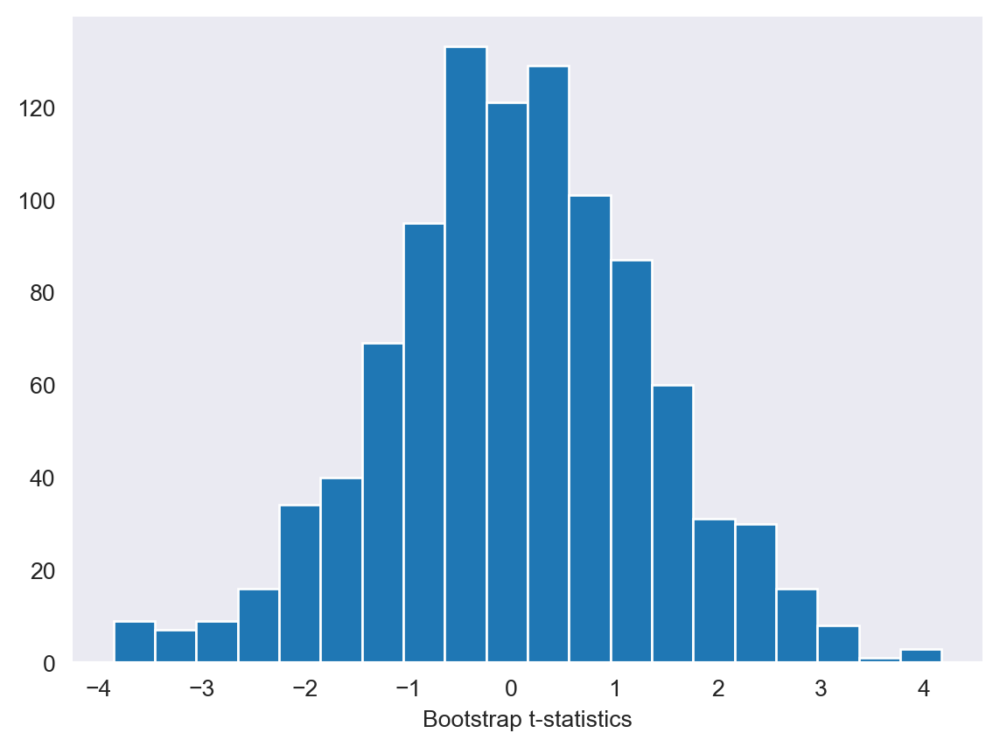
From this distribution we can calculate a p-value by asking what proportion of t-statistics from the null distribution exceed our estimated t-statistic from the unrestricted model. We do this below, observing that the p-value is quite close to that reported in Porter and Serra (2020) (who report a p-value of 0.089), only differing due to random variation in draws of the Rademacher weights.
pval = (abs(WildClusterBootstrap['t_stat']) > abs(t_beta3_hat)).mean()
print('The p-value is: ', round(pval, 3))The p-value is: 0.1We also could repeat this exercise with the wildboottest function from the wildboottest, a Python implementation of a library developed by Fischer and Roodman (2021), and arrive to the same conclusion. This function works with the original model we estimated previously (LPM), and conducts an identical procedure to that which we have done above “by hand”. Any difference in p-values is incidental, owing to different random draws.
import statsmodels.formula.api as sm
from wildboottest.wildboottest import wildboottest
model = sm.ols(data = data[data['female'] == 1].reset_index(),
formula = 'econmajor ~ yr_2016 + treatment_class + treat2016' +
' + female_prof + instate + freshman + american + ACumGPA +' +
' gradePrinciples + small_class')
boot = wildboottest(model, param = 'treat2016', B = 999,
cluster = data[data['female'] == 1].reset_index().class_fe2)
print('The p-value with the user-written function is: ' +
str(round(boot['p-value'].iloc[0], 3)))| param | statistic | p-value |
|:----------|------------:|----------:|
| treat2016 | 2.197 | 0.101 |
The p-value with the user-written function is: 0.101In principle, using such a library is likely the preferred way of conducting procedures such as the wild cluster bootstrap, however it is illustrative to see how it works in practice, as we do above. Although other feautres such as confidence intervals formed by inverting the test and iteratively searching for bounds are not available yet.
Finally as a comparative exercise we may be interested in seeing how this procedure compares to a standard clustered bootstrap. We do this by hand. It turns out that while the 95% CI on treat2016 coming from clustered bootstrap is narrower than the 95% CI from the wild cluster bootstrap (as expected), the difference is not so substantial in this particular case.
import numpy as np
ClusterBootstrap = []
for _ in range(999):
sampled_clusters = random.choices(clusters.class_fe2, k = 12)
bootstrap_sample = pd.concat([data[(data['class_fe2'] == cluster) & (data['female'] == 1)] for cluster in sampled_clusters])
model = sm.ols(data = bootstrap_sample,
formula = 'econmajor ~ yr_2016 + treatment_class + treat2016' +
' + female_prof + instate + freshman + american + ACumGPA +' +
' gradePrinciples + small_class').fit()
ClusterBootstrap.append(model.params['treat2016'])
np.percentile(a = ClusterBootstrap, q = [2.5, 97.5])array([-0.01417647, 0.1445029 ])Code Call-out 4.2: Exploring the Two-way Fixed Effect Model and Parameter Decomposition
Two-Way Fixed Effects Estimators and Heterogeneous Treatment Effects To understand the potential issues related to heterogeneous treatment effects over time and two-way fixed effect estimators, we will examine a pair of numerical examples. In particular, we will focus on the composition of the two way FE estimator \(\tau\) estimated from: \[ y_{st} = \gamma_s + \lambda_t + \tau w_{st} + \varepsilon_{st} \tag{1}\] where \(y_{st}\) is the outcome variable, \(\gamma_s\) and \(\lambda_t\) are state (unit) and time fixed effects, \(w_{st}\) is the binary treatment variable that takes the value of 1 if a state (unit) \(s\) is treated at time \(t\) and otherwise takes 0. We will work with a quite tractable example based on three units and 10 time periods, and will document how the approaches taken by Goodman-Bacon (2021) and by Chaisemartin and D’Haultfœuille (2020) to understand the two-way FE estimator compare.
The results from Goodman-Bacon (2021) and those from Chaisemartin and D’Haultfœuille (2020) are similar, however they take quite different paths to get there. Goodman-Bacon’s (like that laid out in Athey and Imbens (2022)) is “mechanical” in that it is based on the underlying difference-in-differences comparisons between all groups. The result in Chaisemartin and D’Haultfœuille (2020) is based on a potential outcomes frame-work, and counterfactuals under parallel trend assumptions. Thus to examine how these methods work requires somewhat different frameworks. In the case of Goodman-Bacon (2021), we should consider all possible DD comparisons, while in the case of Chaisemartin and D’Haultfœuille (2020) we should consider the treatment effect for each unit and time period, which requires knowing the observed and counterfactual state. While the approaches the two papers take to understand the content of the estimator differ, they refer to the same estimator, so always recover the same parameter estimate. To examine this in a more applied way, we will look at a simulated example.
To do this, let’s consider a panel of 3 states/areas over the 10 years (\(t\)) of 2000 to 2009. One of these units is entirely untreated (\(unit = 1\) or group \(U\)), one is treated at an early time period, 2003, (\(unit = 2\) or group \(k\)), and the other is treated at a later time period, 2006, (\(unit = 3\) or group \(l\)). We will construct a general structure for this data below:
import pandas as pd
import numpy as np
Data = pd.DataFrame({'unit': np.ceil(np.arange(1,31)/10),
'year': np.tile(np.arange(2000, 2010), 3)})
Data.head()| unit | year | |
|---|---|---|
| 0 | 1.0 | 2000 |
| 1 | 1.0 | 2001 |
| 2 | 1.0 | 2002 |
| 3 | 1.0 | 2003 |
| 4 | 1.0 | 2004 |
We will consider a simple-case where the actual data-generating process is known as: \[y_{unit,t} = 2 + 0.2 \times (t - 2000) + 1 \times unit + \beta_1 \times post \times unit + \beta_2 \times post \times unit \times (t - treat).\] Here \(unit\) refers to the unit number listed above (1, 2 or 3), \(post\) indicates that a unit is receiving treatment in the relevant time period \(t\), and \(treat\) refers to the treatment period (2003 for unit 2, and 2006 for unit 3). Let’s generate treatment, time to treatment, and post-treatment variables in Python:
Data['treat'] = np.where(Data['unit'] == 2, 2006,
np.where(Data['unit'] == 3, 2003, 0))
Data['time'] = np.where(Data['treat'] == 0, 0, Data['year'] - Data['treat'])
Data['post'] = np.where(((Data['time'] >= 0) & (Data['treat'] != 0)), 1, 0) This specification allows for each unit to have its own fixed effect, given that \(unit\) is multiplied by 1, and allows for a general time trend increasing by 0.2 units each period across the whole sample. These parameters are not so important, as what we care about are the treatment effects themselves. The impact of treatment comes from the units \(\beta_1\) and \(\beta_2\). The first of these, \(\beta_1\), captures an immediate unit-specific jump when treatment is implemented which remains stable over time. The second of these, \(\beta_2\), implies a trend break occurring only for the treated units once treatment comes into place. We will consider 2 cases below. In the first case \(\beta_1 = 1\) and \(\beta_2 = 0\) (a simple case with a constant treatment effect per unit):
Data['y1'] = 2 + (Data['year'] - 2000) * 0.2 + 1 * Data['unit'] + 1 * Data['post'] * Data['unit'] + 0 * Data['post'] * Data['unit'] * (Data['time'])and in a second case \(\beta_1 = 1\) and \(\beta_2 = 0.45\). This is a more complex case in which there are heterogeneous treatment effects over time:
Data['y2'] = 2 + (Data['year'] - 2000) * 0.2 + 1 * Data['unit'] + 1 * Data['post'] * Data['unit'] + 0.45 * Data['post'] * Data['unit'] * (Data['time'])These two cases are plotted next where the line with empty circles refers to group \(U\), the line with black filled circles refers to group \(k\) and the line with squares refers to group \(l\)
Show the plot code
import seaborn as sns
import matplotlib.pyplot as plt
sns.set_theme()
[Fig1, ax] = plt.subplots(1,2)
PanelA = sns.lineplot(data=Data[Data['unit'] == 1], x ='year', y='y1',
color='black', size=1, ax = ax[0])
PanelA = sns.scatterplot(data=Data[Data['unit'] == 1], x ='year', y='y1',
color='black', marker="$\circ$", ax = ax[0])
PanelA = sns.lineplot(data=Data[Data['unit'] == 2], x ='year', y='y1',
color='black', size=1, ax = ax[0])
PanelA = sns.scatterplot(data=Data[Data['unit'] == 2], x ='year', y='y1',
color='black', ax = ax[0])
PanelA = sns.lineplot(data=Data[Data['unit'] == 3], x ='year', y='y1',
color='black', size=1, ax = ax[0])
PanelA = sns.scatterplot(data=Data[Data['unit'] == 3], x ='year', y='y1',
color='black', marker='s', ax = ax[0])
PanelA.axvline(2002, color = 'red', linestyle='dashed', linewidth=1)
PanelA.axvline(2005, color = 'red', linestyle='dashed', linewidth=1)
PanelA.set_yticks([0, 2, 4, 6, 8, 10, 12])
PanelA.set_xticks([2000, 2002, 2004, 2006, 2008])
PanelA.legend([],[], frameon=False)
PanelA.set_ylabel('Outcome Variable')
PanelA.set_xlabel('Time')
PanelA.set_title('(a) Simple Decomposition')
PanelB = sns.lineplot(data=Data[Data['unit'] == 1], x ='year', y='y2',
color='black', size=1, ax = ax[1])
PanelB = sns.scatterplot(data=Data[Data['unit'] == 1], x ='year', y='y2',
color='black', marker="$\circ$", ax = ax[1])
PanelB = sns.lineplot(data=Data[Data['unit'] == 2], x ='year', y='y2',
color='black', size=1, ax = ax[1])
PanelB = sns.scatterplot(data=Data[Data['unit'] == 2], x ='year', y='y2',
color='black', ax = ax[1])
PanelB = sns.lineplot(data=Data[Data['unit'] == 3], x ='year', y='y2',
color='black', size=1, ax = ax[1])
PanelB = sns.scatterplot(data=Data[Data['unit'] == 3], x ='year', y='y2',
color='black', marker='s', ax = ax[1])
PanelB.axvline(2002, color = 'red', linestyle='dashed', linewidth=1)
PanelB.axvline(2005, color = 'red', linestyle='dashed', linewidth=1)
PanelB.set_yticks([0, 5, 10, 15, 20])
PanelB.set_xticks([2000, 2002, 2004, 2006, 2008])
PanelB.legend([],[], frameon=False)
PanelB.set_ylabel('Outcome Variable')
PanelB.set_xlabel('Time')
PanelB.set_title('(b) Decomposition with trends')Text(0.5, 1.0, '(b) Decomposition with trends')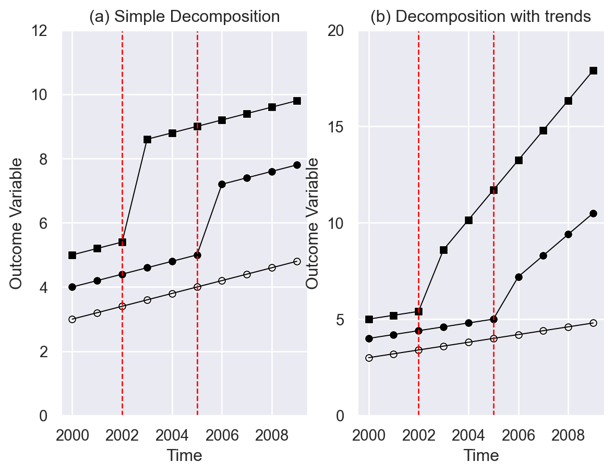
The Two-way Fixed Effect Estimator
First we will estimate the parameter by two-way fixed effects regression. This will provide us with the parameter estimate that both Goodman-Bacon (2021) and Chaisemartin and D’Haultfœuille (2020) will construct in a piece-wise fashion. This is done relatively simply in Python. We simply estimate Equation 1 by linear regression using lm as laid out below:
import statsmodels.api as sm
case1 = sm.OLS.from_formula('y1 ~ post + C(unit) + C(year)', data=Data).fit()
print("The parameter estimated by two-way fixed effects regression for case 1 is: ", case1.params["post"])
case2 = sm.OLS.from_formula('y2 ~ post + C(unit) + C(year)', data=Data).fit()
print("The parameter estimated by two-way fixed effects regression for case 2 is: ", case2.params["post"])The parameter estimated by two-way fixed effects regression for case 1 is: 2.454545454545456
The parameter estimated by two-way fixed effects regression for case 2 is: 3.8045454545454556Here we see that the coefficient of interest is 2.454545. We can see that this is between the two unit-specific jumps that occur with treatment (2 and 3). We will see below why it takes this particular weighted average.
Goodman-Bacon (2021) Decomposition
Using the values simulated above, let’s see how the Goodman-Bacon (2021) decomposition allows us to understand estimated treatment effects. We will consider both:
- (a) Simple Decomposition
- (b) Decomposition with trends
The methodology Goodman-Bacon (2021) decomposition suggests that we should calculate all \(2 \times 2\) combinations of states and time where post-treatment units are compared to “untreated” unit (laid out at more length in the book). In this example, this provides four specific effects, which contribute to \(\widehat{\tau}\) as a weighted mean. The specific effects desired are:
- A. \(\widehat{\beta}^{2\times2}_{kU}\) from the comparison of the early treated unit with the untreated unit.
- B. \(\widehat{\beta}^{2\times2}_{lU}\), from the comparison of the latter treated unit with the untreated unit.
- C. \(\widehat{\beta}^{2\times2,k}_{kl}\), from the comparison of the early and latter treated units, when the early unit begin to be treated.
- D. \(\widehat{\beta}^{2\times2,l}_{kl}\), from the comparison of the early and latter treated units, when the latter unit begin to be treated.
These will then be weighted as laid out in Goodman-Bacon (2021) to provide the regression-based estimate.
(a) Simple Decomposition
In this case the Goodman-Bacon (2021) methodology documents that \(\widehat{\tau}\) can be constructed by weighting the below four DD comparisons
Show the plot code
# Generate axis with some space for labels
[Fig2, ax] = plt.subplots(2,2)
Fig2.subplots_adjust(hspace=0.45)
### PanelA
PanelA = sns.lineplot(data=Data[Data['unit'] == 1], x ='year', y='y1',
color='black', size=1, ax = ax[0,0])
PanelA = sns.scatterplot(data=Data[Data['unit'] == 1], x ='year', y='y1',
color='black', marker="$\circ$", ax = ax[0,0])
PanelA = sns.lineplot(data=Data[Data['unit'] == 2], x ='year', y='y1',
color='black', size=1, ax = ax[0,0], alpha = 0.1)
PanelA = sns.scatterplot(data=Data[Data['unit'] == 2], x ='year', y='y1',
color='black', ax = ax[0,0], alpha = 0.1)
PanelA = sns.lineplot(data=Data[Data['unit'] == 3], x ='year', y='y1',
color='black', size=1, ax = ax[0,0])
PanelA = sns.scatterplot(data=Data[Data['unit'] == 3], x ='year', y='y1',
color='black', marker='s', ax = ax[0,0])
PanelA.axvline(2002, color = 'red', linestyle='dashed', linewidth=1)
PanelA.axvline(2005, color = 'red', linestyle='dashed', linewidth=1)
PanelA.set_yticks([0, 2, 4, 6, 8, 10, 12])
PanelA.set_xticks([2000, 2002, 2004, 2006, 2008])
PanelA.legend([],[], frameon=False)
PanelA.set_ylabel('Outcome Variable')
PanelA.set_xlabel('Time')
PanelA.set_title('A. Early Group v/s Untreated Group')
### PanelB
PanelB = sns.lineplot(data=Data[Data['unit'] == 1], x ='year', y='y1',
color='black', size=1, ax = ax[0,1])
PanelB = sns.scatterplot(data=Data[Data['unit'] == 1], x ='year', y='y1',
color='black', marker="$\circ$", ax = ax[0,1])
PanelB = sns.lineplot(data=Data[Data['unit'] == 2], x ='year', y='y1',
color='black', size=1, ax = ax[0,1])
PanelB = sns.scatterplot(data=Data[Data['unit'] == 2], x ='year', y='y1',
color='black', ax = ax[0,1])
PanelB = sns.lineplot(data=Data[Data['unit'] == 3], x ='year', y='y1',
color='black', size=1, ax = ax[0,1], alpha = 0.1)
PanelB = sns.scatterplot(data=Data[Data['unit'] == 3], x ='year', y='y1',
color='black', marker='s', ax = ax[0,1], alpha = 0.1)
PanelB.axvline(2002, color = 'red', linestyle='dashed', linewidth=1)
PanelB.axvline(2005, color = 'red', linestyle='dashed', linewidth=1)
PanelB.set_yticks([0, 2, 4, 6, 8, 10, 12])
PanelB.set_xticks([2000, 2002, 2004, 2006, 2008])
PanelB.legend([],[], frameon=False)
PanelB.set_ylabel('Outcome Variable')
PanelB.set_xlabel('Time')
PanelB.set_title('B. Later Group v/s Untreated Group')
### PanelC
PanelC = sns.lineplot(data=Data[(Data['unit'] == 1) & (Data['year'] < 2006)],
x ='year', y='y1', color='black', size=1, ax = ax[1,0],
alpha = 0.1)
PanelC = sns.scatterplot(data=Data[(Data['unit'] == 1) & (Data['year'] < 2006)],
x ='year', y='y1', color='black', marker="$\circ$",
ax = ax[1,0], alpha = 0.1)
PanelC = sns.lineplot(data=Data[(Data['unit'] == 2) & (Data['year'] < 2006)],
x ='year', y='y1', color='black', size=1, ax = ax[1,0])
PanelC = sns.scatterplot(data=Data[(Data['unit'] == 2) & (Data['year'] < 2006)],
x ='year', y='y1', color='black', ax = ax[1,0])
PanelC = sns.lineplot(data=Data[(Data['unit'] == 3) & (Data['year'] < 2006)],
x ='year', y='y1', color='black', size=1, ax = ax[1,0])
PanelC = sns.scatterplot(data=Data[(Data['unit'] == 3) & (Data['year'] < 2006)],
x ='year', y='y1', color='black', marker='s',
ax = ax[1,0])
PanelC.axvline(2002, color = 'red', linestyle='dashed', linewidth=1)
PanelC.axvline(2005, color = 'red', linestyle='dashed', linewidth=1)
PanelC.set_yticks([0, 2, 4, 6, 8, 10, 12])
PanelC.set_xticks([2000, 2002, 2004, 2006, 2008])
PanelC.legend([],[], frameon=False)
PanelC.set_ylabel('Outcome Variable')
PanelC.set_xlabel('Time')
PanelC.set_title('C. Early Group v/s Later Group Before 2006')
### PanelD
PanelD = sns.lineplot(data=Data[(Data['unit'] == 1) & (Data['year'] > 2002)],
x ='year', y='y1', color='black', size=1, ax = ax[1,1],
alpha = 0.1)
PanelD = sns.scatterplot(data=Data[(Data['unit'] == 1) & (Data['year'] > 2002)],
x ='year', y='y1', color='black', marker="$\circ$",
ax = ax[1,1], alpha = 0.1)
PanelD = sns.lineplot(data=Data[(Data['unit'] == 2) & (Data['year'] > 2002)],
x ='year', y='y1', color='black', size=1, ax = ax[1,1])
PanelD = sns.scatterplot(data=Data[(Data['unit'] == 2) & (Data['year'] > 2002)],
x ='year', y='y1', color='black', ax = ax[1,1])
PanelD = sns.lineplot(data=Data[(Data['unit'] == 3) & (Data['year'] > 2002)],
x ='year', y='y1', color='black', size=1, ax = ax[1,1])
PanelD = sns.scatterplot(data=Data[(Data['unit'] == 3) & (Data['year'] > 2002)],
x ='year', y='y1', color='black', marker='s',
ax = ax[1,1])
PanelD.axvline(2002, color = 'red', linestyle='dashed', linewidth=1)
PanelD.axvline(2005, color = 'red', linestyle='dashed', linewidth=1)
PanelD.set_yticks([0, 2, 4, 6, 8, 10, 12])
PanelD.set_xticks([2000, 2002, 2004, 2006, 2008])
PanelD.legend([],[], frameon=False)
PanelD.set_ylabel('Outcome Variable')
PanelD.set_xlabel('Time')
PanelD.set_title('D. Early Group v/s Later Group After 2003')Text(0.5, 1.0, 'D. Early Group v/s Later Group After 2003')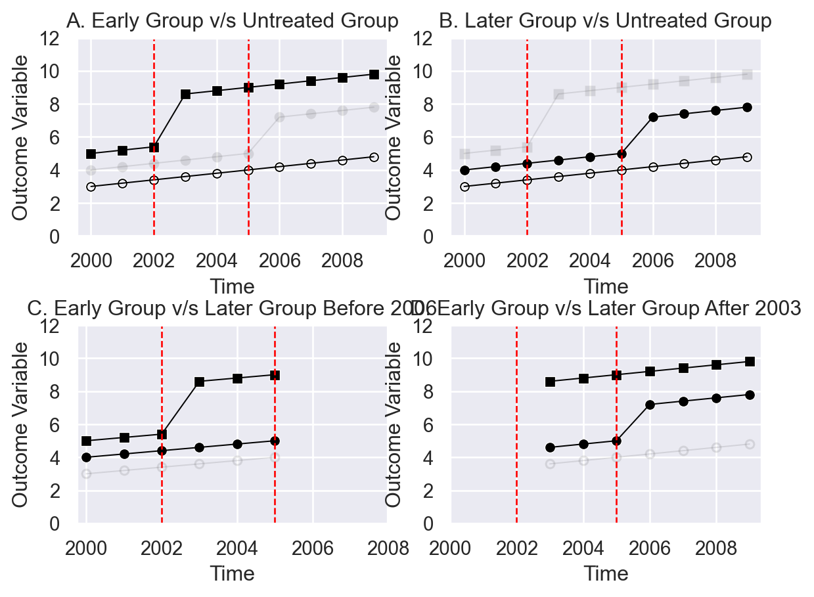
As seen in the plots, in the simple decomposition these effects are constants of 3 and 2 for early and later treated units given that the “treatment effect” is simply \(1 \times unit\) in each case.
A. Early Group v/s Untreated Group
In order to calculate the effects we start making the simple DD comparison of the untreated group \(U\) (\(unit = 1\)) with the early treated group \(k\) (\(unit = 3\)) getting \(\widehat{\beta}^{2 \times 2}_{kU}\) as \[\widehat{\beta}^{2 \times 2}_{kU} = \left( \overline{y}_k^{Post(k)} - \overline{y}_k^{Pre(k)} \right) - \left( \overline{y}_U^{Post(k)} - \overline{y}_U^{Pre(k)} \right)\] Where \(\overline{y}_k^{Post(k)}\) is the mean of the outcome variable for the early treated group \(k\) (\(unit = 3\)) posterior to treatment, from 2003, \(\overline{y}_k^{Pre(k)}\) is the mean for of the outcome variable for the early treated group \(U\) (\(unit = 3\)) prior to treatment, (up until 2002), and \(\overline{y}_U^{Post(k)}, \overline{y}_U^{Post(k)}\) are the analogous quantities for the untreated group \(U\) (\(unit = 1\))
((Data[(Data['unit'] == 3) & (Data['post'] == 1)]['y1'].mean() -
Data[(Data['unit'] == 3) & (Data['post'] == 0)]['y1'].mean()) -
(Data[(Data['unit'] == 1) & (Data['year'] >= 2003)]['y1'].mean() -
Data[(Data['unit'] == 1) & (Data['year'] < 2003)]['y1'].mean()))2.9999999999999987This result also can be obtained from the linear regression with the canonical DD formula \[y_{unit,t} = \alpha_0 + \alpha_1 \times Post(k) + \alpha_2 \times \mathbf{1}(unit = 3) + \beta_{kU}^{2\times2} \times Post(k) \times \mathbf{1}(unit = 3) + \varepsilon_i\] Where \(Post(k)\) indicates that the year is equal or greater than the year where the group \(k\) (\(unit = 3\)) received the treatment (2003) and \(\mathbf{1}(unit = 3)\) indicates if the observation is from the early treated group \(k\) (\(unit = 3\))
Data['post2003'] = np.where(Data['year'] >= 2003, 1, 0)
sm.OLS.from_formula('y1 ~ C(post2003) + C(unit) + C(post2003):C(unit)',
data=Data[Data['unit'] != 2]).fit().summary()| Dep. Variable: | y1 | R-squared: | 0.980 |
| Model: | OLS | Adj. R-squared: | 0.977 |
| Method: | Least Squares | F-statistic: | 266.1 |
| Date: | Mon, 15 Jun 2026 | Prob (F-statistic): | 7.35e-14 |
| Time: | 08:31:59 | Log-Likelihood: | -7.1761 |
| No. Observations: | 20 | AIC: | 22.35 |
| Df Residuals: | 16 | BIC: | 26.34 |
| Df Model: | 3 | ||
| Covariance Type: | nonrobust |
| coef | std err | t | P>|t| | [0.025 | 0.975] | |
| Intercept | 3.2000 | 0.224 | 14.311 | 0.000 | 2.726 | 3.674 |
| C(post2003)[T.1] | 1.0000 | 0.267 | 3.742 | 0.002 | 0.433 | 1.567 |
| C(unit)[T.3.0] | 2.0000 | 0.316 | 6.325 | 0.000 | 1.330 | 2.670 |
| C(post2003)[T.1]:C(unit)[T.3.0] | 3.0000 | 0.378 | 7.937 | 0.000 | 2.199 | 3.801 |
| Omnibus: | 0.432 | Durbin-Watson: | 1.067 |
| Prob(Omnibus): | 0.806 | Jarque-Bera (JB): | 0.533 |
| Skew: | -0.000 | Prob(JB): | 0.766 |
| Kurtosis: | 2.200 | Cond. No. | 8.95 |
Notes:
[1] Standard Errors assume that the covariance matrix of the errors is correctly specified.
A third way to obtain this is from the next linear regression \[y_{unit,t} = \alpha_0 + \beta_{kU}^{2 \times 2} \times Post + \sum_{i = 2001}^{2009} \alpha_{i-2000} \times \mathbf{1}(year = i) + \alpha_{10} \times \mathbf{1}(unit = 3) + \varepsilon_i\] Where in this case \(Post\) indicates if the unit is treated (note for group \(U\) this will be always 0), \(\mathbf{1}(year = i)\) indicates if the observation is in period \(i \in \{2001, \ldots, 2009\}\) and \(\mathbf{1}(unit = 3)\) keep its meaning
sm.OLS.from_formula('y1 ~ post + C(year) + C(unit)',
data=Data[Data['unit'] != 2]).fit().summary()| Dep. Variable: | y1 | R-squared: | 1.000 |
| Model: | OLS | Adj. R-squared: | 1.000 |
| Method: | Least Squares | F-statistic: | 5.610e+29 |
| Date: | Mon, 15 Jun 2026 | Prob (F-statistic): | 2.68e-118 |
| Time: | 08:31:59 | Log-Likelihood: | 641.71 |
| No. Observations: | 20 | AIC: | -1259. |
| Df Residuals: | 8 | BIC: | -1247. |
| Df Model: | 11 | ||
| Covariance Type: | nonrobust |
| coef | std err | t | P>|t| | [0.025 | 0.975] | |
| Intercept | 3.0000 | 3.63e-15 | 8.26e+14 | 0.000 | 3.000 | 3.000 |
| C(year)[T.2001] | 0.2000 | 4.45e-15 | 4.5e+13 | 0.000 | 0.200 | 0.200 |
| C(year)[T.2002] | 0.4000 | 4.45e-15 | 8.99e+13 | 0.000 | 0.400 | 0.400 |
| C(year)[T.2003] | 0.6000 | 4.95e-15 | 1.21e+14 | 0.000 | 0.600 | 0.600 |
| C(year)[T.2004] | 0.8000 | 4.95e-15 | 1.62e+14 | 0.000 | 0.800 | 0.800 |
| C(year)[T.2005] | 1.0000 | 4.95e-15 | 2.02e+14 | 0.000 | 1.000 | 1.000 |
| C(year)[T.2006] | 1.2000 | 4.95e-15 | 2.42e+14 | 0.000 | 1.200 | 1.200 |
| C(year)[T.2007] | 1.4000 | 4.95e-15 | 2.83e+14 | 0.000 | 1.400 | 1.400 |
| C(year)[T.2008] | 1.6000 | 4.95e-15 | 3.23e+14 | 0.000 | 1.600 | 1.600 |
| C(year)[T.2009] | 1.8000 | 4.95e-15 | 3.64e+14 | 0.000 | 1.800 | 1.800 |
| C(unit)[T.3.0] | 2.0000 | 3.63e-15 | 5.51e+14 | 0.000 | 2.000 | 2.000 |
| post | 3.0000 | 4.34e-15 | 6.91e+14 | 0.000 | 3.000 | 3.000 |
| Omnibus: | 5.930 | Durbin-Watson: | 0.512 |
| Prob(Omnibus): | 0.052 | Jarque-Bera (JB): | 3.532 |
| Skew: | 0.914 | Prob(JB): | 0.171 |
| Kurtosis: | 3.945 | Cond. No. | 15.3 |
Notes:
[1] Standard Errors assume that the covariance matrix of the errors is correctly specified.
Now we store this result for posterior use
bku = sm.OLS.from_formula('y1 ~ post + C(year) + C(unit)',
data=Data[Data['unit'] != 2]).fit().params['post']B. Later Group v/s Untreated Group
The next DD comparison we calculate is that which compares the later treated group \(l\) (\(unit = 2\)) with the untreated group \(U\) (\(unit = 1\)), resulting in \(\widehat{\beta}^{2 \times 2}_{lU}\). As above, we can generate this DD estimate in a number of ways (most simply by double-differencing with means), and this will then be stored.
blu = sm.OLS.from_formula('y1 ~ post + C(year) + C(unit)',
data=Data[Data['unit'] != 3]).fit().params['post']
print(blu)
print((Data[(Data['unit'] == 2) & (Data['post'] == 1)]['y1'].mean() -
Data[(Data['unit'] == 2) & (Data['post'] == 0)]['y1'].mean()) -
(Data[(Data['unit'] == 1) & (Data['year'] >= 2006)]['y1'].mean() -
Data[(Data['unit'] == 1) & (Data['year'] < 2006)]['y1'].mean()))
Data['post2006'] = np.where(Data['year'] >= 2006, 1, 0)
sm.OLS.from_formula('y1 ~ C(post2006) + C(unit) + C(post2006):C(unit)',
data=Data[Data['unit'] != 3]).fit().summary()2.0
2.000000000000001| Dep. Variable: | y1 | R-squared: | 0.957 |
| Model: | OLS | Adj. R-squared: | 0.949 |
| Method: | Least Squares | F-statistic: | 119.1 |
| Date: | Mon, 15 Jun 2026 | Prob (F-statistic): | 3.73e-11 |
| Time: | 08:31:59 | Log-Likelihood: | -4.2993 |
| No. Observations: | 20 | AIC: | 16.60 |
| Df Residuals: | 16 | BIC: | 20.58 |
| Df Model: | 3 | ||
| Covariance Type: | nonrobust |
| coef | std err | t | P>|t| | [0.025 | 0.975] | |
| Intercept | 3.5000 | 0.137 | 25.560 | 0.000 | 3.210 | 3.790 |
| C(post2006)[T.1] | 1.0000 | 0.217 | 4.619 | 0.000 | 0.541 | 1.459 |
| C(unit)[T.2.0] | 1.0000 | 0.194 | 5.164 | 0.000 | 0.589 | 1.411 |
| C(post2006)[T.1]:C(unit)[T.2.0] | 2.0000 | 0.306 | 6.532 | 0.000 | 1.351 | 2.649 |
| Omnibus: | 1.576 | Durbin-Watson: | 1.422 |
| Prob(Omnibus): | 0.455 | Jarque-Bera (JB): | 0.922 |
| Skew: | 0.000 | Prob(JB): | 0.631 |
| Kurtosis: | 1.948 | Cond. No. | 6.41 |
Notes:
[1] Standard Errors assume that the covariance matrix of the errors is correctly specified.
C. Early Group v/s Later Group Before 2006
Next we calculate the effects from the DD comparisons of early and later treated groups, up until the later treated group receives treatment (2006). This is: \[\widehat{\beta}^{2 \times 2, k}_{kl} \equiv \left( \overline{y}^{Mid(k,l)}_{k} - \overline{y}^{Pre(k)}_{k} \right) - \left( \overline{y}^{Mid(k,l)}_{l} - \overline{y}^{Pre(k)}_{l} \right)\] where \(\overline{y}^{Mid(k,l)}_{k}\) is the mean of the outcome variable for the early treated group \(k\) (\(unit = 3\)) in the period between the treatment for the group \(k\) and the group \(l\) (\(unit = 2\)), from 2003 to 2005, \(\overline{y}^{Pre(k)}_{k}\) is the mean for of the outcome variable for the early treated group \(k\) (\(unit = 3\)) previous to treatment, until 2002, and \(\overline{y}^{Mid(k,l)}_{l}, \overline{y}^{Pre(k)}_{l}\) are the analogous for the later treated group \(l\) (\(unit = 2\))
bklk = sm.OLS.from_formula('y1 ~ post + C(year) + C(unit)',
data=Data[(Data['unit'] != 1) & (Data['year'] < 2006)]).fit().params['post']
print(bklk)
print((Data[(Data['unit'] == 3) & ((Data['year'] >= 2003) & (Data['year'] < 2006))]['y1'].mean() -
Data[(Data['unit'] == 3) & (Data['year'] < 2003)]['y1'].mean()) -
(Data[(Data['unit'] == 2) & ((Data['year'] >= 2003) & (Data['year'] < 2006))]['y1'].mean() -
Data[(Data['unit'] == 2) & (Data['year'] < 2003)]['y1'].mean()))
sm.OLS.from_formula('y1 ~ C(post2003) + C(unit) + C(post2003):C(unit)',
data=Data[(Data['unit'] != 1) & (Data['year'] < 2006)]).fit().summary()3.000000000000002
2.999999999999999| Dep. Variable: | y1 | R-squared: | 0.992 |
| Model: | OLS | Adj. R-squared: | 0.989 |
| Method: | Least Squares | F-statistic: | 322.7 |
| Date: | Mon, 15 Jun 2026 | Prob (F-statistic): | 1.11e-08 |
| Time: | 08:31:59 | Log-Likelihood: | 4.7188 |
| No. Observations: | 12 | AIC: | -1.438 |
| Df Residuals: | 8 | BIC: | 0.5021 |
| Df Model: | 3 | ||
| Covariance Type: | nonrobust |
| coef | std err | t | P>|t| | [0.025 | 0.975] | |
| Intercept | 4.2000 | 0.115 | 36.373 | 0.000 | 3.934 | 4.466 |
| C(post2003)[T.1] | 0.6000 | 0.163 | 3.674 | 0.006 | 0.223 | 0.977 |
| C(unit)[T.3.0] | 1.0000 | 0.163 | 6.124 | 0.000 | 0.623 | 1.377 |
| C(post2003)[T.1]:C(unit)[T.3.0] | 3.0000 | 0.231 | 12.990 | 0.000 | 2.467 | 3.533 |
| Omnibus: | 3.659 | Durbin-Watson: | 2.500 |
| Prob(Omnibus): | 0.160 | Jarque-Bera (JB): | 1.125 |
| Skew: | -0.000 | Prob(JB): | 0.570 |
| Kurtosis: | 1.500 | Cond. No. | 6.85 |
Notes:
[1] Standard Errors assume that the covariance matrix of the errors is correctly specified.
D. Early Group v/s Later Group After 2003
The last DD comparison is for early and later treated groups, starting from 2006 \[\widehat{\beta}^{2 \times 2, l}_{kl} \equiv \left( \overline{y}^{Post(l)}_{l} - \overline{y}^{Mid(k,l)}_{l} \right) - \left( \overline{y}^{Post(l)}_{k} - \overline{y}^{Mid(k,l)}_{k} \right)\] Where \(\overline{y}^{Post(l)}_{l}\) is the mean of the outcome variable for the later treated group \(l\) (\(unit = 2\)) in the period after this group received the treatment, from 2006, \(\overline{y}^{Mid(k,l)}_{l}\) is the mean for of the outcome variable for the later treated group \(l\) (\(unit = 2\)) in the period between the treatment for the group \(k\) (\(unit = 3\)) and the group \(l\), from 2003 to 2005, and \(\overline{y}^{Post(l)}_{k}, \overline{y}^{Mid(k,l)}_{k}\) are the analogous quantities for the early treated group \(k\) (\(unit = 3\)). We can generate and save this quantity as we have previously:
bkll = sm.OLS.from_formula('y1 ~ post + C(year) + C(unit)',
data=Data[(Data['unit'] != 1) & (Data['year'] > 2002)]).fit().params['post']
print(bkll)
print((Data[(Data['unit'] == 2) & (Data['year'] > 2005)]['y1'].mean() -
Data[(Data['unit'] == 2) & ((Data['year'] >= 2003) & (Data['year'] < 2006))]['y1'].mean()) -
(Data[(Data['unit'] == 3) & (Data['year'] > 2005)]['y1'].mean() -
Data[(Data['unit'] == 3) & ((Data['year'] >= 2003) & (Data['year'] < 2006))]['y1'].mean()))
sm.OLS.from_formula('y1 ~ C(post2006) + C(unit) + C(post2006):C(unit)',
data=Data[(Data['unit'] != 1) & (Data['year'] > 2002)]).fit().summary()1.9999999999999973
2.0| Dep. Variable: | y1 | R-squared: | 0.987 |
| Model: | OLS | Adj. R-squared: | 0.983 |
| Method: | Least Squares | F-statistic: | 249.5 |
| Date: | Mon, 15 Jun 2026 | Prob (F-statistic): | 1.07e-09 |
| Time: | 08:31:59 | Log-Likelihood: | 2.6670 |
| No. Observations: | 14 | AIC: | 2.666 |
| Df Residuals: | 10 | BIC: | 5.222 |
| Df Model: | 3 | ||
| Covariance Type: | nonrobust |
| coef | std err | t | P>|t| | [0.025 | 0.975] | |
| Intercept | 4.8000 | 0.137 | 35.132 | 0.000 | 4.496 | 5.104 |
| C(post2006)[T.1] | 2.7000 | 0.181 | 14.939 | 0.000 | 2.297 | 3.103 |
| C(unit)[T.3.0] | 4.0000 | 0.193 | 20.702 | 0.000 | 3.569 | 4.431 |
| C(post2006)[T.1]:C(unit)[T.3.0] | -2.0000 | 0.256 | -7.825 | 0.000 | -2.570 | -1.430 |
| Omnibus: | 1.936 | Durbin-Watson: | 2.054 |
| Prob(Omnibus): | 0.380 | Jarque-Bera (JB): | 0.911 |
| Skew: | -0.000 | Prob(JB): | 0.634 |
| Kurtosis: | 1.750 | Cond. No. | 7.39 |
Notes:
[1] Standard Errors assume that the covariance matrix of the errors is correctly specified.
This comparison is the comparison which can potentially result in undesired results if treatment effects are dynamic over time because it views group 3 (the previously treated group) as a control. However, in this case, given that treatment effects are homogenous over time we do not have a major problem here, and we observe that \(\widehat{\beta}^{2 \times 2, l}_{kl}=2\).
Weights
We can now arrive to the OLS estimate of this two-way fixed effect model by generating the weighted mean of the previous estimates as: \[\widehat{\tau} = W_{kU} \cdot \widehat{\beta}^{2\times 2}_{kU} + W_{lU} \cdot \widehat{\beta}^{2\times 2}_{lU} + W_{kl}^{k} \cdot \widehat{\beta}^{2\times 2,k}_{kl} + W_{kl}^{l} \cdot \widehat{\beta}^{2\times 2,l}_{kl} \] Where each \(W\) is the weight that the respective \(\beta\) has in this weighted mean, specifically: \[ \begin{align*} W_{kU} & = \frac{(n_k + n_U)^2\widehat{V}^D_{kU}}{\widehat{V}^D} \quad & \quad W_{lU} & = \frac{(n_l + n_U)^2\widehat{V}^D_{lU}}{\widehat{V}^D} \\ W_{kl}^k & = \frac{[(n_k + n_l)(1 - \overline{D}_l)]^2\widehat{V}^{D,k}_{kl}}{\widehat{V}^D} \quad & \quad W_{kl}^l & = \frac{[(n_k + n_l)(1 - \overline{D}_k)]^2\widehat{V}^{D,l}_{kl}}{\widehat{V}^D} \end{align*} \] Where \(n\) refers to the sample share of the group
nk = 1/3
nl = 1/3
nu = 1/3\(\overline{D}\) referes to the share of time the group is treated
Dk = Data[Data['unit'] == 3]['post'].mean()
Dl = Data[Data['unit'] == 2]['post'].mean()and \(\widehat{V}\) refers to how much treatment varies
VkU = 0.5*0.5*(Dk)*(1-Dk)
VlU = 0.5*0.5*(Dl)*(1-Dl)
Vklk = 0.5*0.5*((Dk-Dl)/(1-Dl))*((1-Dk)/(1-Dl))
Vkll = 0.5*0.5*(Dl/Dk)*((Dk-Dl)/(Dk))
VD = (sm.OLS.from_formula('post ~ C(unit) + C(year)',
data=Data).fit().resid**2).mean()The weights are thus the following:
wkU = (((nk + nu)**2)*VkU)/VD
print(wkU)
wlU = (((nl + nu)**2)*VlU)/VD
print(wlU)
wklk = ((((nk + nl)*(1-Dl))**2)*Vklk)/VD
print(wklk)
wkll = ((((nk + nl)*Dk)**2)*Vkll)/VD
print(wkll)0.31818181818181823
0.3636363636363637
0.13636363636363638
0.18181818181818182With this in mind the \(\tau\) estimate is
tau = wkU * bku + wlU * blu + wklk * bklk + wkll * bkll
print(tau)2.4545454545454546as observed in the two-way fixed effect estimate above.
(b) Decomposition with trends
In this case the Goodman-Bacon (2021) decomposition follows as above generating the treatment effect as follows:
Show the plot code
# Generate axis with some space for labels
[Fig3, ax] = plt.subplots(2,2)
Fig3.subplots_adjust(hspace=0.45)
### PanelA
PanelA = sns.lineplot(data=Data[Data['unit'] == 1], x ='year', y='y2',
color='black', size=1, ax = ax[0,0])
PanelA = sns.scatterplot(data=Data[Data['unit'] == 1], x ='year', y='y2',
color='black', marker="$\circ$", ax = ax[0,0])
PanelA = sns.lineplot(data=Data[Data['unit'] == 2], x ='year', y='y2',
color='black', size=1, ax = ax[0,0], alpha = 0.1)
PanelA = sns.scatterplot(data=Data[Data['unit'] == 2], x ='year', y='y2',
color='black', ax = ax[0,0], alpha = 0.1)
PanelA = sns.lineplot(data=Data[Data['unit'] == 3], x ='year', y='y2',
color='black', size=1, ax = ax[0,0])
PanelA = sns.scatterplot(data=Data[Data['unit'] == 3], x ='year', y='y2',
color='black', marker='s', ax = ax[0,0])
PanelA.axvline(2002, color = 'red', linestyle='dashed', linewidth=1)
PanelA.axvline(2005, color = 'red', linestyle='dashed', linewidth=1)
PanelA.set_yticks([0, 5, 10, 15, 20])
PanelA.set_xticks([2000, 2002, 2004, 2006, 2008])
PanelA.legend([],[], frameon=False)
PanelA.set_ylabel('Outcome Variable')
PanelA.set_xlabel('Time')
PanelA.set_title('A. Early Group v/s Untreated Group')
### PanelB
PanelB = sns.lineplot(data=Data[Data['unit'] == 1], x ='year', y='y2',
color='black', size=1, ax = ax[0,1])
PanelB = sns.scatterplot(data=Data[Data['unit'] == 1], x ='year', y='y2',
color='black', marker="$\circ$", ax = ax[0,1])
PanelB = sns.lineplot(data=Data[Data['unit'] == 2], x ='year', y='y2',
color='black', size=1, ax = ax[0,1])
PanelB = sns.scatterplot(data=Data[Data['unit'] == 2], x ='year', y='y2',
color='black', ax = ax[0,1])
PanelB = sns.lineplot(data=Data[Data['unit'] == 3], x ='year', y='y2',
color='black', size=1, ax = ax[0,1], alpha = 0.1)
PanelB = sns.scatterplot(data=Data[Data['unit'] == 3], x ='year', y='y2',
color='black', marker='s', ax = ax[0,1], alpha = 0.1)
PanelB.axvline(2002, color = 'red', linestyle='dashed', linewidth=1)
PanelB.axvline(2005, color = 'red', linestyle='dashed', linewidth=1)
PanelB.set_yticks([0, 5, 10, 15, 20])
PanelB.set_xticks([2000, 2002, 2004, 2006, 2008])
PanelB.legend([],[], frameon=False)
PanelB.set_ylabel('Outcome Variable')
PanelB.set_xlabel('Time')
PanelB.set_title('B. Later Group v/s Untreated Group')
### PanelC
PanelC = sns.lineplot(data=Data[(Data['unit'] == 1) & (Data['year'] < 2006)],
x ='year', y='y2', color='black', size=1, ax = ax[1,0],
alpha = 0.1)
PanelC = sns.scatterplot(data=Data[(Data['unit'] == 1) & (Data['year'] < 2006)],
x ='year', y='y2', color='black', marker="$\circ$",
ax = ax[1,0], alpha = 0.1)
PanelC = sns.lineplot(data=Data[(Data['unit'] == 2) & (Data['year'] < 2006)],
x ='year', y='y2', color='black', size=1, ax = ax[1,0])
PanelC = sns.scatterplot(data=Data[(Data['unit'] == 2) & (Data['year'] < 2006)],
x ='year', y='y2', color='black', ax = ax[1,0])
PanelC = sns.lineplot(data=Data[(Data['unit'] == 3) & (Data['year'] < 2006)],
x ='year', y='y2', color='black', size=1, ax = ax[1,0])
PanelC = sns.scatterplot(data=Data[(Data['unit'] == 3) & (Data['year'] < 2006)],
x ='year', y='y2', color='black', marker='s',
ax = ax[1,0])
PanelC.axvline(2002, color = 'red', linestyle='dashed', linewidth=1)
PanelC.axvline(2005, color = 'red', linestyle='dashed', linewidth=1)
PanelC.set_yticks([0, 5, 10, 15, 20])
PanelC.set_xticks([2000, 2002, 2004, 2006, 2008])
PanelC.legend([],[], frameon=False)
PanelC.set_ylabel('Outcome Variable')
PanelC.set_xlabel('Time')
PanelC.set_title('C. Early Group v/s Later Group Before 2006')
### PanelD
PanelD = sns.lineplot(data=Data[(Data['unit'] == 1) & (Data['year'] > 2002)],
x ='year', y='y2', color='black', size=1, ax = ax[1,1],
alpha = 0.1)
PanelD = sns.scatterplot(data=Data[(Data['unit'] == 1) & (Data['year'] > 2002)],
x ='year', y='y2', color='black', marker="$\circ$",
ax = ax[1,1], alpha = 0.1)
PanelD = sns.lineplot(data=Data[(Data['unit'] == 2) & (Data['year'] > 2002)],
x ='year', y='y2', color='black', size=1, ax = ax[1,1])
PanelD = sns.scatterplot(data=Data[(Data['unit'] == 2) & (Data['year'] > 2002)],
x ='year', y='y2', color='black', ax = ax[1,1])
PanelD = sns.lineplot(data=Data[(Data['unit'] == 3) & (Data['year'] > 2002)],
x ='year', y='y2', color='black', size=1, ax = ax[1,1])
PanelD = sns.scatterplot(data=Data[(Data['unit'] == 3) & (Data['year'] > 2002)],
x ='year', y='y2', color='black', marker='s',
ax = ax[1,1])
PanelD.axvline(2002, color = 'red', linestyle='dashed', linewidth=1)
PanelD.axvline(2005, color = 'red', linestyle='dashed', linewidth=1)
PanelD.set_yticks([0, 5, 10, 15, 20])
PanelD.set_xticks([2000, 2002, 2004, 2006, 2008])
PanelD.legend([],[], frameon=False)
PanelD.set_ylabel('Outcome Variable')
PanelD.set_xlabel('Time')
PanelD.set_title('D. Early Group v/s Later Group After 2003')Text(0.5, 1.0, 'D. Early Group v/s Later Group After 2003')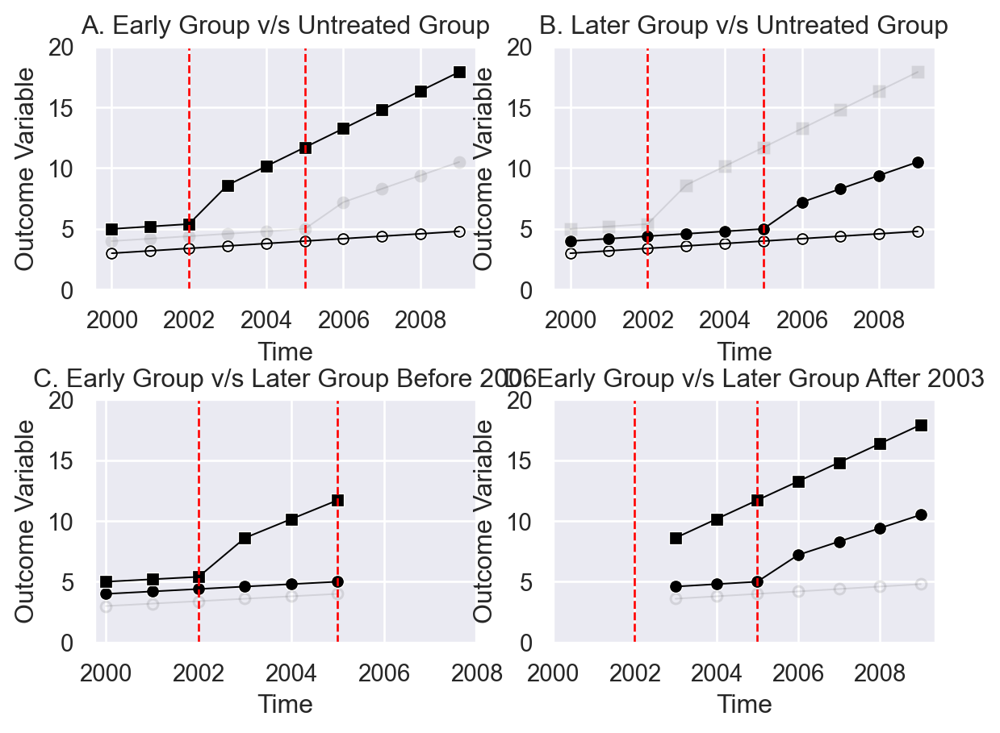
As seen in the plots, in the decomposition with trends these effects are no longer constants of 3 and 2 for early and later treated units given that the “treatment effect” is no longer simply \(1 \times unit\) in each case.
# 2X2 DD Regressions
panelA = sm.OLS.from_formula('y2 ~ post + C(year) + C(unit)',
data=Data[Data['unit'] != 2]).fit()
panelB = sm.OLS.from_formula('y2 ~ post + C(year) + C(unit)',
data=Data[Data['unit'] != 3]).fit()
panelC = sm.OLS.from_formula('y2 ~ post + C(year) + C(unit)',
data=Data[(Data['unit'] != 1) & (Data['year'] < 2006)]).fit()
panelD = sm.OLS.from_formula('y2 ~ post + C(year) + C(unit)',
data=Data[(Data['unit'] != 1) & (Data['year'] > 2002)]).fit()
# 2x2 Betas
bkUk = panelA.params["post"]
bkUl = panelB.params["post"]
bklk = panelC.params["post"]
bkll = panelD.params["post"]
# Share of time treated
Dk = Data[Data['unit'] == 3]['post'].mean()
Dl = Data[Data['unit'] == 2]['post'].mean()
# How much treatment varies
VkU = 0.5*0.5*(Dk)*(1-Dk)
VlU = 0.5*0.5*(Dl)*(1-Dl)
Vklk = 0.5*0.5*((Dk-Dl)/(1-Dl))*((1-Dk)/(1-Dl))
Vkll = 0.5*0.5*(Dl/Dk)*((Dk-Dl)/(Dk))
VD = (sm.OLS.from_formula('post ~ C(unit) + C(year)',
data=Data).fit().resid**2).mean()
# Share of sample
nk = 1/3
nl = 1/3
nu = 1/3
# Weights
wkUk = (((nk + nu)**2)*VkU)/VD
wkUl = (((nl + nu)**2)*VlU)/VD
wklk = ((((nk + nl)*(1-Dl))**2)*Vklk)/VD
wkll = ((((nk + nl)*Dk)**2)*Vkll)/VD
# Tau
tau = bkUk*wkUk + bkUl*wkUl + bklk*wklk + bkll*wkll
print(tau)3.804545454545458What is noteworthy here is the surprising behaviour flagged by Goodman-Bacon (2021) for the final comparison based on the case where the earlier treated unit (unit 3) is used as a control for the later trated unit (unit 2). In this case, given that there are time-varying treatment effects, despite the fact that each unit-specific treatment effect is positive, we observe that the parameter \(\widehat{\beta}^{2 \times 2, l}_{kl}\) is actually negative. In this particular example this negative value (-1.375) is not sufficient to turn the weighted treatment effect estimate negative, but if you play around with the size of the parameters \(\beta_1\) and \(\beta_2\) above as well as treatment timing, you will see that large enough differences in trends can result in such estimates! Here, as above, we see that when we aggregate unit-specific estimates as tau, the estimate (by definition) agrees with the estimate generated by two-way fixed effect models previously.
Chaisemartin and D’Haultfœuille (2020)’s Procedure
Now, we will show that the procedures described in Chaisemartin and D’Haultfœuille (2020), despite arriving to the estimator in a different way, also let us understand how the regression weights the two-way fixed effect estimator. In this case, rather than considering each treatment-control comparison pair, the authors note that the two-way fixed estimator can be conceived as a weighted sum of each single group by time period in any post-treatment group.
The authors define \(\widehat{\beta}_{fe}\) as the coefficient estimated in the following (standard) two-way fixed effects regression: \[y_{i,s,t} = \beta_0 + \beta_{fe} D_{s,t} + \mu_s + \lambda_t + \varepsilon_{s,t}\] Where \(D_{s,t}\) is the mean over \(i\) of a binary indicator variable that takes value of 1 if the unit \(i\) in state \(s\) is treated at period \(t\) and 0 otherwise, in our case as we have one observartion per state \(D_{s,t} = post_{s,t}\), meanwhile \(\mu_s\) and \(\lambda_t\) are state and time fixed effects. This is, of course, precisely the same model as we have estimated in Equation 1, implying that \(\beta_{fe}=2.4545\) in cases without post-treatment trends (y1), or \(\beta_{fe}=3.8045\) in cases with post-treatment dynamics (y2).
Chaisemartin and D’Haultfœuille (2020) define the ATE for any (\(s,t\)) cell as: \[\Delta_{s,t} = \frac{1}{N_{s,t}} \sum_{i = 1}^{N_{s,t}}[Y_{i,s,t}(1) - Y_{i,s,t}(0)].\] You will note that here we require an unobserved counterfactual \(Y_{i,s,t}(0)\). If we impose a parallel trend assumption, such a counterfactual can be inferred from unit-specific fixed effects, time-specific fixed effects, and the constant term. Because in this case we know our data generating process, we can simply generate this counterfactual as the data generating process, absent any effect of treatment. Below we generate such a counterfactual, where you will note that we impose that this is an ‘untreated’ counterfactual by setting the treatment effects to 0 in the generation of y1_c below:
Data['y1_c'] = 2 + (Data['year'] - 2000) * 0.2 + 1 * Data['unit'] + 0 * Data['post'] * Data['unit'] + 0 * Data['post'] * Data['unit'] * (Data['time'])It is likely useful to confirm to ourselves that graphically we are indeed generating the untreated counterfactual in this way.
Show the plot code
[Fig4, ax] = plt.subplots(1,2)
### Unit 2
PanelA = sns.lineplot(data=Data[Data['unit'] == 2], x = 'year', y = 'y1',
color = 'blue', size = 1, ax = ax[0])
PanelA = sns.lineplot(data = Data[Data['unit'] == 2], x = 'year', y = 'y1_c',
color = 'red', size = 1, ax = ax[0], linestyle = 'dashed')
PanelA.legend([],[],frameon=False)
PanelA.set_yticks([4, 5, 6, 7, 8])
PanelA.set_xticks([2000, 2002, 2004, 2006, 2008])
PanelA.set_ylabel("Y")
PanelA.set_xlabel("Year")
PanelA.set_title("(a) Unit 2 Outcome and Countefactual", y = -0.25)
### Unit 3
PanelB = sns.lineplot(data=Data[Data['unit'] == 3], x = 'year', y = 'y1',
color = 'blue', size = 1, ax = ax[1])
PanelB = sns.lineplot(data = Data[Data['unit'] == 3], x = 'year', y = 'y1_c',
color = 'red', size = 1, ax = ax[1], linestyle = 'dashed')
PanelB.legend([],[],frameon=False)
PanelB.set_yticks([5, 6, 7, 8, 9, 10])
PanelB.set_xticks([2000, 2002, 2004, 2006, 2008])
PanelB.set_ylabel("Y")
PanelB.set_xlabel("Year")
PanelB.set_title("(b) Unit 3 Outcome and Countefactual", y = -0.25)Text(0.5, -0.25, '(b) Unit 3 Outcome and Countefactual')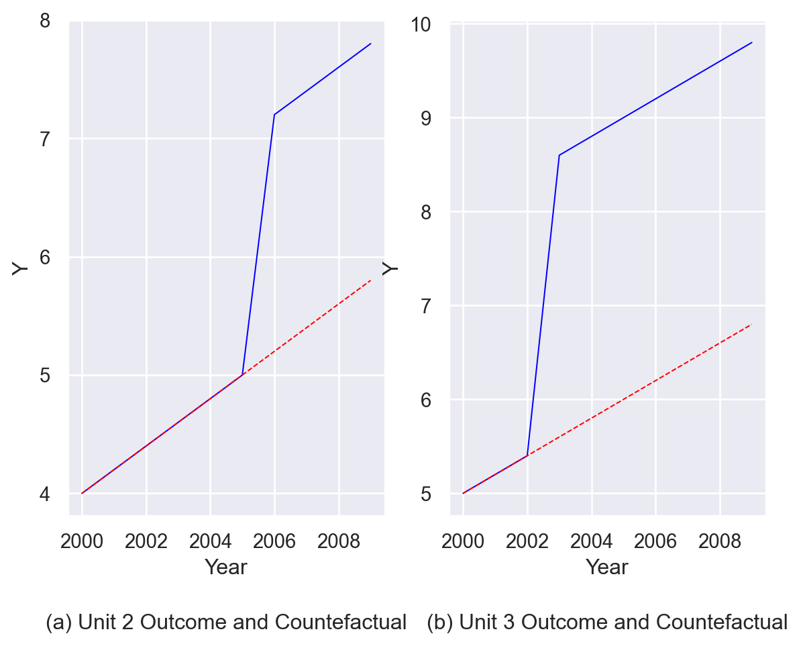
This allows us to calculate a state- and time-period specific treatment effect (\(\Delta_{s,t}\)) for each treated unit. We do so, calculating this quantity for all units in which treatment exists:
Data['Delta_st'] = np.where(Data['post'] == 1, Data['y1'] - Data['y1_c'],
np.nan)
Data[Data['post'] == 1][['y1', 'y1_c', 'unit', 'year', 'Delta_st']]| y1 | y1_c | unit | year | Delta_st | |
|---|---|---|---|---|---|
| 16 | 7.2 | 5.2 | 2.0 | 2006 | 2.0 |
| 17 | 7.4 | 5.4 | 2.0 | 2007 | 2.0 |
| 18 | 7.6 | 5.6 | 2.0 | 2008 | 2.0 |
| 19 | 7.8 | 5.8 | 2.0 | 2009 | 2.0 |
| 23 | 8.6 | 5.6 | 3.0 | 2003 | 3.0 |
| 24 | 8.8 | 5.8 | 3.0 | 2004 | 3.0 |
| 25 | 9.0 | 6.0 | 3.0 | 2005 | 3.0 |
| 26 | 9.2 | 6.2 | 3.0 | 2006 | 3.0 |
| 27 | 9.4 | 6.4 | 3.0 | 2007 | 3.0 |
| 28 | 9.6 | 6.6 | 3.0 | 2008 | 3.0 |
| 29 | 9.8 | 6.8 | 3.0 | 2009 | 3.0 |
Unsurprisingly, given the data generating process we have defined, we see that each treatment effect is 2 for unit 2, and 3 for unit 3. If we were to calculate a mean treatment effect by hand, we may wish to simply take an average over all periods and units. However, one of the key results of Chaisemartin and D’Haultfœuille (2020) is to show that under a series of standard assumptions \[\beta_{fe} = E \left[ \sum_{s,t:D_{s,t}=1}\frac{N_{s,t}}{N_1}w_{s,t}\Delta_{s,t} \right]\] Where \(N_1\) refers to the sum of all treated observations and \[w_{s,t} = \frac{\varepsilon_{s,t}}{\sum_{s,t:D_{s,t}=1}\frac{N_{s,t}}{N_1}\varepsilon_{s,t}}\] Where \(\varepsilon_{s,t}\) is the residual from a regression of \(D_{s,t}\) on state and time fixed-effects. To confirm this in our data, we will estimate these regression residuals and add them into the dataframe:
auxreg = sm.OLS.from_formula('post ~ C(year) + C(unit)',
data=Data).fit()
Data['eps_st'] = auxreg.resid
Data['eps_st'] = np.where(Data['post'] != 1, np.nan, Data['eps_st'])
Data['w_st'] = Data['eps_st'] / Data['eps_st'].sum()
print(round(Data[Data['post'] == 1][['y1', 'y1_c', 'unit', 'year', 'Delta_st', 'w_st']], 6)) y1 y1_c unit year Delta_st w_st
16 7.2 5.2 2.0 2006 2.0 0.136364
17 7.4 5.4 2.0 2007 2.0 0.136364
18 7.6 5.6 2.0 2008 2.0 0.136364
19 7.8 5.8 2.0 2009 2.0 0.136364
23 8.6 5.6 3.0 2003 3.0 0.151515
24 8.8 5.8 3.0 2004 3.0 0.151515
25 9.0 6.0 3.0 2005 3.0 0.151515
26 9.2 6.2 3.0 2006 3.0 -0.000000
27 9.4 6.4 3.0 2007 3.0 0.000000
28 9.6 6.6 3.0 2008 3.0 0.000000
29 9.8 6.8 3.0 2009 3.0 0.000000Note here that after generating \(w_{s,t}\) we print this out using the round function to avoid very small digits appearing which are only different to zero given machine precision. The key thing that we can see is that the effective weighting of treatment effects which occurs in regression is quite different to what we would expect. Indeed, four periods are given 0 weights! Finally, we can confirm that this decomposition gives us the two-way fixed effect estimate by multiplying \(\Delta_{s,t}\) and \(w_{s,t}\) and summing:
print("de Chaisemartin and Xavier D'Haultfoeuille's decomposition returns an estimates of: " + str((Data['Delta_st'] * Data['w_st']).sum()))de Chaisemartin and Xavier D'Haultfoeuille's decomposition returns an estimates of: 2.454545454545454We can see that correctly, this decomposition also returns the two-way fixed effect estimate of 2.4545.
We can follow precisely the same series of steps to see the case of the decomposition where treatment exposition also results in a trend-break. To see this, we conduct each of the above steps below, however here we have not produced similar graphs (though you may wish to do so to confirm that counterfactuals make sense):
Data['y2_c'] = 2 + (Data['year'] - 2000) * 0.2 + 1 * Data['unit'] + 0 * Data['post'] * Data['unit'] + 0 * Data['post'] * Data['unit'] * (Data['time'])
Data['Delta_st2'] = np.where(Data['post'] == 1, Data['y2'] - Data['y2_c'],
np.nan)
print(round(Data[Data['post'] == 1][['y2', 'y2_c', 'unit', 'year', 'Delta_st', 'w_st']], 6)) y2 y2_c unit year Delta_st w_st
16 7.20 5.2 2.0 2006 2.0 0.136364
17 8.30 5.4 2.0 2007 2.0 0.136364
18 9.40 5.6 2.0 2008 2.0 0.136364
19 10.50 5.8 2.0 2009 2.0 0.136364
23 8.60 5.6 3.0 2003 3.0 0.151515
24 10.15 5.8 3.0 2004 3.0 0.151515
25 11.70 6.0 3.0 2005 3.0 0.151515
26 13.25 6.2 3.0 2006 3.0 -0.000000
27 14.80 6.4 3.0 2007 3.0 0.000000
28 16.35 6.6 3.0 2008 3.0 0.000000
29 17.90 6.8 3.0 2009 3.0 0.000000Because there is no difference in the structure of the treatment indicator or the unit and time fixed effects, the residuals \(w_{s,t}\) are identical, though of course the treatment effects themselves, \(\Delta_{s,t}\) are not. Thus, once again we see that later treatment effects for unit 3 (precisely those units for which treatment effects are largest), are given zero weights. Finally, again we can calculate the two-way fixed effect estimate following this decomposition by summing across units, capturing the estimate we have previously observed in regression models of 3.804545.
print("de Chaisemartin and Xavier D'Haultfoeuille's decomposition returns an estimates of: " + str((Data['Delta_st2'] * Data['w_st']).sum()))de Chaisemartin and Xavier D'Haultfoeuille's decomposition returns an estimates of: 3.8045454545454547Depending on the nature of treatment assignment, ie the number of treated periods, as well as the period in which treatment is adopted in different units, these weights will vary, and can even be negative. You may wish to explore alternative set-ups and confirm to yourself that this is the case, and see that regardless of the nature of the setting, both Goodman-Bacon (2021) and Chaisemartin and D’Haultfœuille (2020)’s decompositions recover the two-way fixed effect estimate.
Code Call-out 4.3(a): Event study and Interaction-weighted Estimators
To understand the equivalence between the panel event study model described in Section 4.4.2.1 of the book and the “Interaction-weighted (IW) estimator” proposed by Sun and Abraham (2021) we work with data from Stevenson and Wolfers (2006) which examines the effect of the staggered adoption of no-default divorce reforms (_nfd) and female suicide (asmrs) in United States for 49 states (stfips) from 1964 to 1996. We begin by loading the data below, and confirming that it effectively consists of a balanced sample of 49 states (we will denote using \(s\) below) over 33 years (denoted as \(t\)):
import pandas as pd
data = pd.read_csv("data/Stevenson_Wolfers_2006.csv")
print(len(data))
print(data.head())1617
stfips year _nfd post asmrs pcinc asmrh cases \
0 1 1964 1971.0 0 35.63988 12406.179 5.007341 0.012312
1 1 1965 1971.0 0 41.54375 13070.207 4.425367 0.010419
2 1 1966 1971.0 0 34.25233 13526.663 4.874819 0.009900
3 1 1967 1971.0 0 34.46502 13918.190 5.362014 0.009975
4 1 1968 1971.0 0 40.44011 14684.809 4.643759 0.012401
weight copop
0 1715156.0 1715156.0
1 1715156.0 1725186.0
2 1715156.0 1735219.0
3 1715156.0 1745250.0
4 1715156.0 1755283.0 In order to prepare our dataset we note that the variable _nfd contains the year a state adopts a law (\(Event_s\)), and define a variable timeToTreat as the difference between year \(t\) and \(Event_s\):
data["timeToTreat"] = data["year"] - data["_nfd"]
data[["year", "_nfd", "timeToTreat"]].head(10)| year | _nfd | timeToTreat | |
|---|---|---|---|
| 0 | 1964 | 1971.0 | -7.0 |
| 1 | 1965 | 1971.0 | -6.0 |
| 2 | 1966 | 1971.0 | -5.0 |
| 3 | 1967 | 1971.0 | -4.0 |
| 4 | 1968 | 1971.0 | -3.0 |
| 5 | 1969 | 1971.0 | -2.0 |
| 6 | 1970 | 1971.0 | -1.0 |
| 7 | 1971 | 1971.0 | 0.0 |
| 8 | 1972 | 1971.0 | 1.0 |
| 9 | 1973 | 1971.0 | 2.0 |
Because `_nfd’ is missing for states which did not pass a no fault divorce law in the period under study, this variable thus captures leads (periods prior to treatment) and lags (periods post treatment) for states which have adopted a no fault divorce law.
Panel Event Study Model
We will begin by estimating a standard event study, defined as follows, or as equation 4.38 in the book: \[asmrs_{st} = \alpha + \sum_{j=2}^{J} \beta_j (Lead \ j)_{st} + \sum_{k = 0}^{K} \gamma_{k} (Lag \ k)_{st} + \mu_s + \lambda_t + X_{st}^\prime \Gamma + \varepsilon_{st} \] Here \(asmrs_{st}\) refers to the female suicide rate for all women of state \(s\) at period \(t\), \((Lead \ j)_{st}\) a dummy variable that takes 1 if the state \(s\) at period \(t\) is \(j\) periods pre-treatment, \((Lag \ k)_{st}\) a dummy variable that takes 1 if the state \(s\) at period \(t\) is \(k\) periods post-treatment, \(\mu_s\) and \(\lambda_t\) are state and time fixed effects respectively and \(X^\prime_{st}\) a vector of covariates for state \(s\) at period \(t\) such as per-capita income \(pcinc_{st}\), homicide mortality \(asmrh_{st}\) and the aid to families with dependent children (AFDC) rate for a family of four \(cases_{st}\).
Thus, we wish to include a single binary variable for each lead and lag observed in our data (arbritarily omitting lead 1). If we inspect the values of timeToTreat below, we can see how there are \(J = 21\) binary \(Lead\) variables and \(K = 27\) \(Lag\) variable to include:
data['timeToTreat'].unique()array([ -7., -6., -5., -4., -3., -2., -1., 0., 1., 2., 3.,
4., 5., 6., 7., 8., 9., 10., 11., 12., 13., 14.,
15., 16., 17., 18., 19., 20., 21., 22., 23., 24., 25.,
-9., -8., nan, 26., -13., -12., -11., -10., -20., -19., -18.,
-17., -16., -15., -14., 27., -21.])A natural option to generate lags and leads is to use the get_dummies function from pandaslibrary, but this don’t generate clearly names so we write a function to rename the columns generated by the get_dummies function and then join it to the original data frame
# Generate dummies
dummies_timeToTreat = pd.get_dummies(data['timeToTreat']).astype(int)
# Generate function to rename columins
def ren_cols(col):
if col < 0:
return 'Lead' + str(abs(int(col)))
else:
return 'Lag' + str(int(col))
# Rename the columns
dummies_timeToTreat.columns = [ren_cols(col) for col in dummies_timeToTreat.columns]
# Join to the original data frame
data = pd.concat([data, dummies_timeToTreat], axis = 1)
data[["year", "_nfd", "timeToTreat", "Lead7", "Lead6", "Lead5"]].head(5)| year | _nfd | timeToTreat | Lead7 | Lead6 | Lead5 | |
|---|---|---|---|---|---|---|
| 0 | 1964 | 1971.0 | -7.0 | 1 | 0 | 0 |
| 1 | 1965 | 1971.0 | -6.0 | 0 | 1 | 0 |
| 2 | 1966 | 1971.0 | -5.0 | 0 | 0 | 1 |
| 3 | 1967 | 1971.0 | -4.0 | 0 | 0 | 0 |
| 4 | 1968 | 1971.0 | -3.0 | 0 | 0 | 0 |
Next we can estimate the event study by standard OLS using the Regpyhdfe function from the regpyhdfe package. Note that we omit Lead1 as a reference base level. The usage of this function includes several arguments where the target argument points the dependent variable, the predictors argument are the explanatory covaraites, the absorb_ids argument determine the fixed effects (in this case year and state fixed effects) and the cluster_ids argument is for the variable to use if clustered standard errors are desired.
from regpyhdfe import Regpyhdfe
EventStudy = Regpyhdfe(df = data, target = 'asmrs',
predictors = ['Lead21', 'Lead20', 'Lead19', 'Lead18',
'Lead17', 'Lead16', 'Lead15', 'Lead14',
'Lead13', 'Lead12', 'Lead11', 'Lead10',
'Lead9', 'Lead8', 'Lead7', 'Lead6', 'Lead5',
'Lead4', 'Lead3', 'Lead2', 'Lag0', 'Lag1',
'Lag2', 'Lag3', 'Lag4', 'Lag5', 'Lag6',
'Lag7', 'Lag8', 'Lag9', 'Lag10', 'Lag11',
'Lag12', 'Lag13', 'Lag14', 'Lag15', 'Lag16',
'Lag17', 'Lag18', 'Lag19', 'Lag20', 'Lag21',
'Lag22', 'Lag23', 'Lag24', 'Lag25', 'Lag26',
'Lag27', 'pcinc', 'asmrh', 'cases'],
absorb_ids=['stfips', 'year'],
cluster_ids=['stfips']).fit()
print(EventStudy.summary2()) Results: Ordinary least squares
=================================================================================
Model: OLS Adj. R-squared (uncentered): 1499.768
Dependent Variable: asmrs AIC: 12250.9721
Date: 2026-06-15 08:32 BIC: 12525.7768
No. Observations: 1617 Log-Likelihood: -6074.5
Df Model: 51 F-statistic: 372.7
Df Residuals: -1 Prob (F-statistic): 2.76e-49
R-squared (uncentered): 0.073 Scale: -1.7346e+05
-------------------------------------------------------------------------------------
Coef. Std.Err. z P>|z| [0.025 0.975]
-------------------------------------------------------------------------------------
Lead21 -22.9207 3.9686 -5.7756 0.0000 -30.6990 -15.1425
Lead20 -12.0842 10.8799 -1.1107 0.2667 -33.4084 9.2400
Lead19 8.8427 5.8947 1.5001 0.1336 -2.7107 20.3962
Lead18 -0.5160 4.6294 -0.1115 0.9113 -9.5894 8.5575
Lead17 -4.4349 6.1452 -0.7217 0.4705 -16.4792 7.6095
Lead16 -1.0226 3.5556 -0.2876 0.7737 -7.9914 5.9462
Lead15 0.8478 4.1511 0.2042 0.8382 -7.2882 8.9837
Lead14 4.3280 5.1627 0.8383 0.4019 -5.7908 14.4468
Lead13 -1.3886 4.5855 -0.3028 0.7620 -10.3761 7.5989
Lead12 -0.0435 6.8395 -0.0064 0.9949 -13.4487 13.3618
Lead11 -9.3819 3.9381 -2.3824 0.0172 -17.1004 -1.6635
Lead10 -1.1507 4.8798 -0.2358 0.8136 -10.7149 8.4135
Lead9 -5.0007 3.5500 -1.4087 0.1589 -11.9585 1.9571
Lead8 -2.7376 3.8616 -0.7089 0.4784 -10.3062 4.8309
Lead7 -1.2564 4.2944 -0.2926 0.7698 -9.6733 7.1604
Lead6 -0.7506 2.9591 -0.2536 0.7998 -6.5503 5.0492
Lead5 -2.7754 2.5930 -1.0704 0.2845 -7.8576 2.3067
Lead4 0.2284 2.3720 0.0963 0.9233 -4.4206 4.8773
Lead3 -2.3126 2.9386 -0.7870 0.4313 -8.0722 3.4470
Lead2 -0.5157 2.4883 -0.2073 0.8358 -5.3927 4.3612
Lag0 0.2507 2.6933 0.0931 0.9258 -5.0280 5.5295
Lag1 -1.6194 2.9104 -0.5564 0.5779 -7.3236 4.0849
Lag2 -1.6871 3.8569 -0.4374 0.6618 -9.2465 5.8723
Lag3 -0.7445 2.8322 -0.2629 0.7927 -6.2956 4.8066
Lag4 -2.9564 2.8026 -1.0549 0.2915 -8.4494 2.5367
Lag5 -2.3778 2.7256 -0.8724 0.3830 -7.7198 2.9642
Lag6 -3.3119 3.5304 -0.9381 0.3482 -10.2313 3.6075
Lag7 -5.1365 3.3659 -1.5260 0.1270 -11.7336 1.4606
Lag8 -6.9911 3.0537 -2.2894 0.0221 -12.9763 -1.0060
Lag9 -4.8232 3.0568 -1.5779 0.1146 -10.8143 1.1679
Lag10 -8.8142 3.6357 -2.4244 0.0153 -15.9400 -1.6884
Lag11 -7.2733 3.5933 -2.0241 0.0430 -14.3160 -0.2306
Lag12 -6.1516 4.0462 -1.5203 0.1284 -14.0820 1.7788
Lag13 -8.2768 3.9044 -2.1198 0.0340 -15.9294 -0.6243
Lag14 -6.5932 3.8263 -1.7231 0.0849 -14.0927 0.9062
Lag15 -7.8508 4.0277 -1.9492 0.0513 -15.7450 0.0433
Lag16 -7.2344 4.2256 -1.7120 0.0869 -15.5164 1.0476
Lag17 -8.5169 4.2983 -1.9815 0.0475 -16.9413 -0.0925
Lag18 -9.9916 3.7190 -2.6867 0.0072 -17.2806 -2.7025
Lag19 -11.5361 3.8209 -3.0192 0.0025 -19.0249 -4.0474
Lag20 -9.2192 4.4542 -2.0698 0.0385 -17.9492 -0.4891
Lag21 -10.7909 4.3711 -2.4687 0.0136 -19.3580 -2.2237
Lag22 -10.6548 4.5595 -2.3368 0.0194 -19.5913 -1.7183
Lag23 -12.0866 5.2361 -2.3083 0.0210 -22.3491 -1.8240
Lag24 -10.6780 6.0824 -1.7555 0.0792 -22.5993 1.2433
Lag25 -10.2678 7.3800 -1.3913 0.1641 -24.7324 4.1968
Lag26 -16.6926 10.4307 -1.6003 0.1095 -37.1363 3.7512
Lag27 -0.4345 8.0608 -0.0539 0.9570 -16.2334 15.3644
pcinc -0.0011 0.0004 -2.7424 0.0061 -0.0019 -0.0003
asmrh 1.0806 0.5906 1.8298 0.0673 -0.0768 2.2381
cases -190.3716 133.0744 -1.4306 0.1526 -451.1927 70.4494
---------------------------------------------------------------------------------
Omnibus: 139.276 Durbin-Watson: 1.375
Prob(Omnibus): 0.000 Jarque-Bera (JB): 503.468
Skew: 0.368 Prob(JB): 0.000
Kurtosis: 5.633 Condition No.: 270152
=================================================================================
Notes:
[1] R² is computed without centering (uncentered) since the model
does not contain a constant.
[2] Standard Errors are robust to cluster correlation (cluster)
[3] The condition number is large, 2.7e+05. This might indicate
that there are strong multicollinearity or other numerical
problems.Once we have estimated this regression, we can visualise point estimates and standard errors in the traditional event study style, as laid out below. To do this, we will create a data frame that incorporates the parameters we need from our regression, which we saved as EventStudy above. Finally, we will plot an event study using pyplot:
params = pd.DataFrame({'Estimate': EventStudy.params,
'Std. Err': EventStudy.bse*1.96})
params = params.drop(['pcinc', 'asmrh', 'cases'])
# Create df
plot_df = pd.concat([params.loc['Lead21':'Lead2'],
pd.DataFrame({'Estimate': 0, 'Std. Err': 0},
index=['Lead1']),
params.loc['Lag0':'Lag27']])
plot_df['Time'] = list(range(-21,28))
# Graph
import matplotlib.pyplot as plt
import seaborn as sns
sns.set_theme()
ES = plot_df.plot(x = 'Time', y = 'Estimate', yerr = 'Std. Err', kind='scatter',
marker='o', facecolor='none', s=25, color='black')
ES.set_xlabel('Time to Treatment')
ES.set_ylabel('Suicide per 1m Woman')
ES.axvline(-1, color = 'black', alpha=0.5)
ES.axhline(0, color = 'red')
plt.show()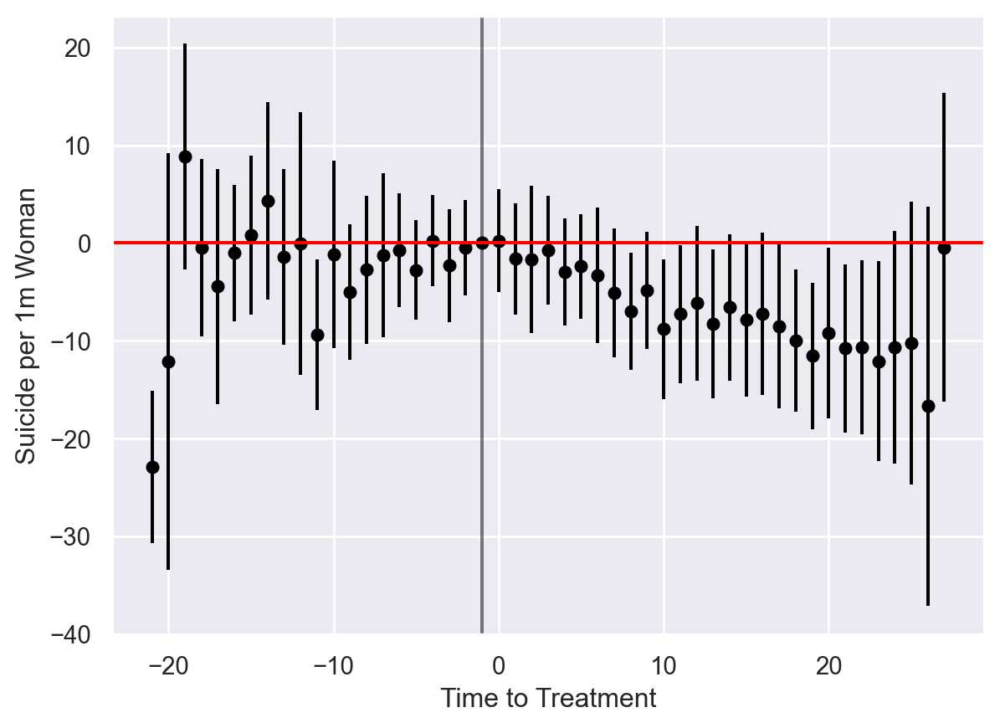
In the figure we see, in general, relatively flat trends in the lead up to the event of interest, and thereafter a reduction in rates of female suicide following the passage of no fault divorce laws.
Interaction-weighted Estimator
To see how the interaction-weighted estimator proposed by Sun and Abraham (2021) accounts for time-varying treatment adoption, we will generate it “by hand” here. This estimator proposes to generate \(\widehat{v}_g\) for some period \(g\) of interest, where in this case \(g\) will refer to each lag and lead. Formally, \(\widehat{v}_g\) is defined as follows: \[ \widehat{v}_g = \frac{1}{|g|} \sum_{\ell \in g} \sum_{e} \widehat{\delta}_{e,\ell} \widehat{Pr} \left\{ E_i = e | E_i \in [-\ell , T - \ell] \right\}. \tag{2}\] Here \(E_i\) indicates the moment treatment is adopted for a unit \(i\), and \(\ell\) is the relative period to treatment at period \(t\), ie \(\ell = t - E_i\). Thus, \(\widehat{Pr} \left\{ E_i = e | E_i \in [-\ell , T - \ell] \right\}\) is the sample share of the cohort that receives the initial treatment at a time \(e\), \(g\) is a set of relative periods \(\ell \in [-T , T]\), and \(\widehat{\delta}_{e, \ell}\) is an estimate of the Cohort-specific Average Treatment effect on the Treated (\(CATT\)) for the cohort \(e\) at \(\ell\) periods from initial treatment \[\delta_{e,\ell} = CATT_{e, \ell} = E[Y_{i,e+\ell} - Y_{i,e+\ell}^{\infty} | E_i = e]\] Where \(Y_{i,t}\) is the outcome for unit \(i\) at time \(t\) and \(Y_{i,t}^{\infty}\) is the potential outcome for unit \(i\) at time \(t\) if never were treated. Sun and Abraham (2021) describe the estimation procedure of \(\widehat{v}_g\) as follows:
- Estimate \(CATT_{e,\ell}\) from a TWFE interacting relative periods indicators with cohort indicators, excluding indicators for cohorts from some set \(C\)1: \[Y_{i,t} = \alpha_i + \lambda_t + \sum_{e\neq C} \sum_{\ell \neq -1} \delta_{e, \ell} (\mathbf{1}\{ E_i = e\} \cdot D_{i,t}^{\ell}) + \varepsilon_{i,t}\] Where \(\alpha_i\) and \(\lambda_t\) are the unit and time fixed effects, \(\mathbf{1}\{E_i=e\}\) the cohort indicators and \(D_{i,t}^{\ell}\) the relative period indicators, i.e, \(D_{i,t}^{\ell} = 1\) if unit \(i\) at time \(t\) is \(\ell\) periods from the treatment.
- Estimates the weights for each \(\widehat{\delta}_{e,\ell}\): \(\widehat{Pr} \left\{ E_i = e | E_i \in [-\ell , T - \ell] \right\}\) as the sample share of the cohort that receives the initial treatment at a time \(e\) that has experienced the \(\ell\) relative period to treatment.
- Estimate the IW estimator following equation (Equation 2).
To fix ideas and get a hold on notation, in our example \(g = \{-21 , -20 , \cdots , 27\}\), as we are considering the full set of lags and leads \(\ell\) as part of \(g\). The years which a no fault divorce law was passed (\(e\)) are \(e \in \{1969 , 1970 , 1971 , 1972 , 1973 , 1974 , 1975 , 1976 , 1977 , 1980 , 1984 , 1985\}\)2. We will start by building a series of indicator variables for \(E_i\) as follows:
dummies_Cohort = pd.get_dummies(data['_nfd'].astype('Int64'),
prefix = 'E', prefix_sep = '').astype(int)
data = pd.concat([data, dummies_Cohort], axis = 1) You may wish to confirm each E1969 generated with the get_dummies function above contains a vector of 1s for all units which were first exposed to the policy in 1969, and so forth for other indicators.
If we return to (Equation 2), we can see that we are interested in estimating a full set of lags and leads for each adoption period \(e\). With this particular setup, we have 12 indicator variables drawn from \(e\), and if we consider all lags and leads in \(g\), we have 48 indicator variables3. Thus, from \(\displaystyle\sum_{e\neq C}\sum_{\ell\neq-1}\delta_{e, \ell} (\mathbf{1}\{ E_i = e\} \cdot D_{i,t}^{\ell})\) we have 576 indicator variables! To ilustrate this we build three matrix: (i) Dummies for \(g = \{-21 , -20 , \cdots , 27\}\), (ii) dummies for \(e \in \{1969 , 1970 , 1971 , 1972 , 1973 , 1974 , 1975 , 1976 , 1977 , 1980 , 1984 , 1985\}\) and (iii) dummies for \(CATT_{e,\ell}\). At the end, we will also rename the column names of the last matrix in order to make it clearer when we go forward where we will store each of the outputs of interest.
# Create the data frame for all interactions
for e in dummies_Cohort.columns:
for ell in dummies_timeToTreat.drop(columns = 'Lead1').columns:
if (e == "E1969") & (ell == 'Lead21'):
dummies_CATT = pd.DataFrame(dummies_Cohort.loc[:,e] *
dummies_timeToTreat.loc[:,ell])
else:
dummies_CATT = pd.concat([dummies_CATT,
dummies_Cohort.loc[:,e] *
dummies_timeToTreat.loc[:,ell]], axis = 1)
# Create colnames
colnames = []
for e in dummies_Cohort.columns:
for ell in dummies_timeToTreat.drop(columns = 'Lead1').columns:
colnames.append(str(e) + "_" + str(ell))
# Assign colnames
dummies_CATT.columns = colnamesThe matrix dummies_timeToTreat will consist of an indicator for each observation capturing whether it is at a particular time to treatment adoption. Similarly, dummies_Cohort will consists of an indicator for whether or not an observation is part of each group \(e\). The interaction between these two matrices (dummies_CATT) will thus build an indicator for each cohort and time to treatment, indicating whether an observation is in this particular group. Note, however, that some of the indicator variables in dummies_CATT will actually be entirely empty. This is because there are some cohorts that never experience some specific \(\ell\) relative to the period of treatment (eg early treatment adopters won’t have enough data prior to treatment to observe very long leads, and late treatment adopters won’t have enough post-treatment data to observe very long lags). In order to delete these indicators which exist in our matrix dummies_CATT but not in practice, we can simply remove from the matrix dummies_CATT those columns with 0 mean:
dummies_CATT = dummies_CATT.loc[:,dummies_CATT.mean() != 0]
len(dummies_CATT.columns)384As we see here, we have now reduced the dimensionality of the indicator variables \(\displaystyle\sum_{e\neq C}\sum_{\ell\neq-1}\delta_{e, \ell} (\mathbf{1}\{ E_i = e\} \cdot D_{i,t}^{\ell})\) from 576 to 384, which are the full observable lags and leads for each treatment cohort. Now we can actually go about the business of estimating \(\delta_{e,\ell}\)!
CATT_eldf = pd.concat([dummies_CATT,
data[['pcinc', 'asmrh', 'cases', 'year', 'stfips',
'asmrs']]], axis=1)
CATT_el = Regpyhdfe(df = CATT_eldf, target = 'asmrs',
predictors = list(CATT_eldf.loc[:,'E1969_Lead5':'cases'].columns),
absorb_ids=['stfips', 'year'],
cluster_ids=['stfips']).fit()This looks quite simple, and it is precisely because we have gone to all the work of generating all the dummies we need for our CATT groups. This, in essence, estimates an event study equivalent for each treatment adoption cohort. As there is many estimates here, we don’t show the full summary, but we can peruse the first 10 estimates for \(CATT_{e,\ell}\):
CATT_el.params[0:9]E1969_Lead5 -5.932187
E1969_Lead4 -13.692264
E1969_Lead3 -8.626393
E1969_Lead2 0.042957
E1969_Lag0 3.411755
E1969_Lag1 -6.052331
E1969_Lag2 -10.117503
E1969_Lag3 2.490748
E1969_Lag4 1.527803
dtype: float64To have a full idea of what we’ve just estimated here, we will re-organise these estimates to present the coefficient in the style of Table 3 of Sun and Abraham (2021). In particular, let’s display \(\ell\) values (lags and leads) in rows and \(e\) values in columns so we can observe our cohort-specific event studies in a column-wise fashion. We do this below, we first build a matrix deltas in which to store these estimates, then fill them in, before finally displaying the tabular output. Most of this code is actually relatively auxiliary, used to ensure that we can extract each lag and lead from regression results. To do this, we are generating a function we call fetch_coefficient, as the coefficient we need may sometimes be named with _Lag in the variable, sometimes be named as _Lead, and sometimes not exist (and this may imply either that it is the base period -1, or that the lag or lead doesn’t exist). It is worth working through this function carefully to confirm that you can see that in this way we grab each coefficient \(\widehat\delta_{e,\ell}\).
# Matrix to store delta_{e,l}
deltas = pd.DataFrame(index = dummies_timeToTreat.columns,
columns = dummies_Cohort.columns)
# Function to fetch coefficient safely
import numpy as np
def fetch_coefficient(e, l):
if l == -1:
return 0
elif l < -1:
Catt_searched = 'E' + str(int(e)) + '_Lead' + str(abs(int(l)))
else:
Catt_searched = 'E' + str(int(e)) + '_Lag' + str(int(l))
try:
Value = CATT_el.params[Catt_searched]
except:
Value = np.nan
return Value
# Get unique cohorts and relative times
cohorts = sorted(data['_nfd'].unique().astype(int))[1:]
ells = np.arange(-21, 28, 1)
# Fill the deltas matrix
for i in cohorts:
print('----------------------------------------------------------')
print('Cohort E = ' + str(i))
for j in ells:
if j < 0:
#print('Relative time ' + str(j) + '. This is Lead ' + str(abs(j)))
deltas.loc['Lead' + str(abs(int(j))), 'E' + str(int(i))] = fetch_coefficient(e = i, l = j)
else:
#print('Relative time ' + str(j) + '. This is Lag ' + str(j))
deltas.loc['Lag' + str(int(j)), 'E' + str(int(i))] = fetch_coefficient(e = i, l = j)
#print('----')
# Display the coefficients in a nice tabular output
from IPython.display import Markdown
from tabulate import tabulate
Markdown(tabulate(deltas))----------------------------------------------------------
Cohort E = 1969
----------------------------------------------------------
Cohort E = 1970
----------------------------------------------------------
Cohort E = 1971
----------------------------------------------------------
Cohort E = 1972
----------------------------------------------------------
Cohort E = 1973
----------------------------------------------------------
Cohort E = 1974
----------------------------------------------------------
Cohort E = 1975
----------------------------------------------------------
Cohort E = 1976
----------------------------------------------------------
Cohort E = 1977
----------------------------------------------------------
Cohort E = 1980
----------------------------------------------------------
Cohort E = 1984
----------------------------------------------------------
Cohort E = 1985| Lead21 | nan | nan | nan | nan | nan | nan | nan | nan | nan | nan | nan | -15.1792 |
| Lead20 | nan | nan | nan | nan | nan | nan | nan | nan | nan | nan | 2.40224 | -21.8966 |
| Lead19 | nan | nan | nan | nan | nan | nan | nan | nan | nan | nan | -0.977459 | 18.9181 |
| Lead18 | nan | nan | nan | nan | nan | nan | nan | nan | nan | nan | -0.379281 | 2.99165 |
| Lead17 | nan | nan | nan | nan | nan | nan | nan | nan | nan | nan | 2.42893 | -5.22004 |
| Lead16 | nan | nan | nan | nan | nan | nan | nan | nan | nan | 7.15429 | -3.07335 | 4.4785 |
| Lead15 | nan | nan | nan | nan | nan | nan | nan | nan | nan | -2.27788 | -0.0986643 | 14.3881 |
| Lead14 | nan | nan | nan | nan | nan | nan | nan | nan | nan | -1.20819 | 3.6462 | 19.0935 |
| Lead13 | nan | nan | nan | nan | nan | nan | nan | nan | -6.33957 | 4.23312 | -9.13974 | 24.0314 |
| Lead12 | nan | nan | nan | nan | nan | nan | nan | 10.6429 | -1.53099 | 6.05664 | 0.107191 | -14.1494 |
| Lead11 | nan | nan | nan | nan | nan | nan | -5.53149 | -8.81486 | -14.3749 | -0.589696 | -9.57624 | 0.444544 |
| Lead10 | nan | nan | nan | nan | nan | 5.39783 | 10.9639 | -5.35131 | 2.61609 | 10.5795 | -13.1638 | -8.53559 |
| Lead9 | nan | nan | nan | nan | 0.993024 | -2.28627 | 3.99979 | -7.24773 | -13.5386 | -0.634683 | -17.0686 | -3.72937 |
| Lead8 | nan | nan | nan | -0.960972 | -2.6293 | 3.04714 | 6.8431 | -5.56039 | -2.64786 | 8.39088 | -9.24847 | -13.5951 |
| Lead7 | nan | nan | -0.56743 | -2.39521 | -3.88554 | 4.85295 | 13.322 | -14.1572 | 4.14737 | -5.84154 | -6.52129 | 1.02486 |
| Lead6 | nan | -6.63828 | -7.40297 | -0.0885867 | 2.5168 | -0.718411 | 7.79518 | -1.78217 | 1.57535 | 0.470842 | -7.73431 | -10.9091 |
| Lead5 | -5.93219 | -8.94427 | -12.2142 | 0.881768 | -1.92191 | 3.10393 | 2.50875 | -3.11799 | 8.49109 | -5.37131 | -12.7655 | -3.14036 |
| Lead4 | -13.6923 | -4.02704 | -3.61801 | 6.88745 | 2.29335 | 10.2602 | 6.19 | 6.49837 | -1.38602 | 2.66603 | -17.533 | -15.5632 |
| Lead3 | -8.62639 | -0.64406 | -1.40157 | -1.37616 | 1.71609 | 0.409016 | -6.37299 | -30.7139 | -2.28966 | 1.25546 | -11.8997 | 6.50709 |
| Lead2 | 0.0429575 | -7.73483 | -2.33368 | -0.597084 | 0.573558 | 10.9534 | -3.70824 | 15.4194 | -13.6401 | -0.891468 | -0.514724 | -1.27747 |
| Lead1 | 0 | 0 | 0 | 0 | 0 | 0 | 0 | 0 | 0 | 0 | 0 | 0 |
| Lag0 | 3.41175 | 2.40037 | -9.3037 | -2.27878 | -0.0498666 | 2.15196 | -3.45047 | 15.0767 | 3.14831 | -7.45013 | -0.0946746 | -0.302635 |
| Lag1 | -6.05233 | -1.51423 | -10.4026 | -7.87051 | 1.8483 | 1.34819 | 2.48291 | 37.5836 | -11.8726 | -8.24823 | 2.79491 | 1.44925 |
| Lag2 | -10.1175 | 1.41587 | -14.0264 | -2.82696 | -0.846347 | -1.0298 | -4.7558 | 10.0733 | -7.82377 | 2.68594 | -3.31133 | 14.2283 |
| Lag3 | 2.49075 | -17.1736 | 3.31011 | -8.71544 | -0.0213459 | -0.757133 | -5.80159 | 2.3119 | -9.26279 | 6.52334 | -7.18823 | -14.8595 |
| Lag4 | 1.5278 | -14.8401 | -8.78977 | -4.125 | -3.26012 | -0.334721 | -10.8873 | -1.7158 | -13.4799 | 2.00571 | -4.95806 | 8.86438 |
| Lag5 | 1.90737 | -19.4981 | -7.70444 | 0.478781 | -6.11592 | 1.3834 | -7.20711 | -6.57911 | -7.58106 | 4.55854 | -6.40722 | 18.8536 |
| Lag6 | -0.373112 | -22.5842 | -7.60936 | -11.4658 | -7.9376 | -4.08857 | -5.96896 | 6.39061 | 7.5706 | -3.07557 | -4.34586 | 2.54415 |
| Lag7 | -8.18491 | -23.9186 | -13.6818 | -7.09356 | -13.0342 | -2.53014 | 2.96943 | -0.194835 | -2.73716 | -3.55092 | -5.42177 | 18.3738 |
| Lag8 | -5.31712 | -28.5234 | -17.1613 | -12.7801 | -8.96174 | 6.13802 | -5.89795 | -5.50646 | -14.3745 | -5.08876 | -2.47114 | 13.5381 |
| Lag9 | -7.26826 | -32.2239 | -19.227 | -3.70455 | -2.19465 | 4.49945 | 12.4975 | 4.79154 | -9.11079 | -0.742157 | -6.88096 | 9.4784 |
| Lag10 | -8.42035 | -42.273 | -18.5984 | 1.00828 | -3.38306 | 0.808046 | -5.56952 | -10.0075 | -20.6107 | 0.191347 | -11.2492 | 7.04294 |
| Lag11 | -10.3502 | -37.4926 | -7.207 | -0.0123131 | -9.54679 | 4.01057 | 2.04046 | 0.744298 | -20.9733 | -0.853917 | -9.79854 | 19.1258 |
| Lag12 | -5.85985 | -31.4258 | -8.20885 | -4.17755 | -6.87533 | 6.89282 | 5.33616 | -11.0383 | -8.16078 | 1.39042 | -6.40564 | nan |
| Lag13 | 3.69348 | -31.1637 | -9.02709 | -7.51108 | -8.30171 | -1.752 | -7.32164 | 1.55416 | -13.5678 | -0.276655 | nan | nan |
| Lag14 | 9.43546 | -31.3722 | -9.20764 | 3.87371 | -7.98736 | -0.393344 | 0.864305 | -4.17916 | -21.4673 | -7.55372 | nan | nan |
| Lag15 | -2.28608 | -32.0237 | -10.0704 | -8.47723 | -9.62642 | 2.00318 | 14.9594 | -11.359 | -21.0849 | -1.61509 | nan | nan |
| Lag16 | 4.08973 | -32.3556 | -9.45637 | -6.82575 | -8.78864 | 2.02152 | 8.37655 | -13.6239 | -15.9917 | -1.49028 | nan | nan |
| Lag17 | -2.23311 | -33.7725 | -10.7691 | -5.80408 | -8.95557 | -4.79162 | 6.63702 | -18.5815 | -10.1713 | nan | nan | nan |
| Lag18 | -2.80065 | -40.0595 | -14.5028 | -1.15279 | -11.0476 | 0.185679 | 7.07741 | -7.2332 | -23.6135 | nan | nan | nan |
| Lag19 | -6.02373 | -43.445 | -11.2309 | -6.92617 | -11.8515 | -2.41771 | -3.69794 | -7.95623 | -15.2649 | nan | nan | nan |
| Lag20 | -2.54192 | -39.999 | -11.1562 | -0.391785 | -8.96831 | -6.09106 | 3.67005 | -9.07723 | nan | nan | nan | nan |
| Lag21 | -3.01312 | -44.8124 | -10.9455 | -10.4719 | -8.0901 | -6.81774 | -3.46862 | nan | nan | nan | nan | nan |
| Lag22 | -9.43492 | -41.2567 | -4.40338 | -10.7062 | -12.5357 | -6.65077 | nan | nan | nan | nan | nan | nan |
| Lag23 | 1.64318 | -41.7491 | -10.5632 | -12.1978 | -13.4596 | nan | nan | nan | nan | nan | nan | nan |
| Lag24 | 3.72086 | -48.4181 | -12.0662 | -7.84703 | nan | nan | nan | nan | nan | nan | nan | nan |
| Lag25 | -4.08406 | -47.3203 | -8.75564 | nan | nan | nan | nan | nan | nan | nan | nan | nan |
| Lag26 | -5.18162 | -44.6523 | nan | nan | nan | nan | nan | nan | nan | nan | nan | nan |
| Lag27 | 3.74629 | nan | nan | nan | nan | nan | nan | nan | nan | nan | nan | nan |
Now, with \(\widehat\delta_{e,\ell}\) in hand, the only other thing we need are the weights of each cohort at the respective relative period. We could do this “by hand”, calculating from observations in our data, but it is likely easier to get these by regressing each cohort indicator variable \(\mathbf{1} \{ E_i = e \}\) on all the relative period indicator variables \(D^\ell_{i,t}\). This regression will just tell us the proportion of a specific lead or lag which are made up of observations from a particular cohort. We will do this below, storing weights in a matrix called w1:
# Matrix to store results
w1 = pd.DataFrame(index = dummies_timeToTreat.columns,
columns = dummies_Cohort.columns)
# Statsmodels for simple OLS
import statsmodels.api as sm
# For each cohort
for e in dummies_Cohort.columns:
# Regress the cohort in indicated column on relative period dummies
aux_model = sm.OLS(endog = dummies_Cohort.loc[:,e],
exog = dummies_timeToTreat.drop(columns = 'Lead1')).fit()
# Assign the estimated coefficients that are the weights
w1.loc['Lead21':'Lead2', e] = aux_model.params['Lead21':'Lead2'].values
w1.loc['Lag0':'Lag27', e] = aux_model.params['Lag0':'Lag27'].values
# Note those with 0 value really are relative periods for which the cohort doesn't
# exist, so can be assignad as missing in order to follow Sun and Abraham Table 3
w1.loc[:,e][w1.loc[:,e] == 0] = float('nan')
# Now the base period l = -1 replace for 0s
w1.loc['Lead1', :] = 0
w1.head()| E1969 | E1970 | E1971 | E1972 | E1973 | E1974 | E1975 | E1976 | E1977 | E1980 | E1984 | E1985 | |
|---|---|---|---|---|---|---|---|---|---|---|---|---|
| Lead21 | NaN | NaN | NaN | NaN | NaN | NaN | NaN | NaN | NaN | NaN | NaN | 1.0 |
| Lead20 | NaN | NaN | NaN | NaN | NaN | NaN | NaN | NaN | NaN | NaN | 0.5 | 0.5 |
| Lead19 | NaN | NaN | NaN | NaN | NaN | NaN | NaN | NaN | NaN | NaN | 0.5 | 0.5 |
| Lead18 | NaN | NaN | NaN | NaN | NaN | NaN | NaN | NaN | NaN | NaN | 0.5 | 0.5 |
| Lead17 | NaN | NaN | NaN | NaN | NaN | NaN | NaN | NaN | NaN | NaN | 0.5 | 0.5 |
We can display these weights in the same was as we documented the quantities \(\widehat\delta_{e,\ell}\) previously:
ws = w1
Markdown(tabulate(ws))| Lead21 | nan | nan | nan | nan | nan | nan | nan | nan | nan | nan | nan | 1 |
| Lead20 | nan | nan | nan | nan | nan | nan | nan | nan | nan | nan | 0.5 | 0.5 |
| Lead19 | nan | nan | nan | nan | nan | nan | nan | nan | nan | nan | 0.5 | 0.5 |
| Lead18 | nan | nan | nan | nan | nan | nan | nan | nan | nan | nan | 0.5 | 0.5 |
| Lead17 | nan | nan | nan | nan | nan | nan | nan | nan | nan | nan | 0.5 | 0.5 |
| Lead16 | nan | nan | nan | nan | nan | nan | nan | nan | nan | 0.333333 | 0.333333 | 0.333333 |
| Lead15 | nan | nan | nan | nan | nan | nan | nan | nan | nan | 0.333333 | 0.333333 | 0.333333 |
| Lead14 | nan | nan | nan | nan | nan | nan | nan | nan | nan | 0.333333 | 0.333333 | 0.333333 |
| Lead13 | nan | nan | nan | nan | nan | nan | nan | nan | 0.5 | 0.166667 | 0.166667 | 0.166667 |
| Lead12 | nan | nan | nan | nan | nan | nan | nan | 0.142857 | 0.428571 | 0.142857 | 0.142857 | 0.142857 |
| Lead11 | nan | nan | nan | nan | nan | nan | 0.222222 | 0.111111 | 0.333333 | 0.111111 | 0.111111 | 0.111111 |
| Lead10 | nan | nan | nan | nan | nan | 0.25 | 0.166667 | 0.0833333 | 0.25 | 0.0833333 | 0.0833333 | 0.0833333 |
| Lead9 | nan | nan | nan | nan | 0.454545 | 0.136364 | 0.0909091 | 0.0454545 | 0.136364 | 0.0454545 | 0.0454545 | 0.0454545 |
| Lead8 | nan | nan | nan | 0.12 | 0.4 | 0.12 | 0.08 | 0.04 | 0.12 | 0.04 | 0.04 | 0.04 |
| Lead7 | nan | nan | 0.21875 | 0.09375 | 0.3125 | 0.09375 | 0.0625 | 0.03125 | 0.09375 | 0.03125 | 0.03125 | 0.03125 |
| Lead6 | nan | 0.0588235 | 0.205882 | 0.0882353 | 0.294118 | 0.0882353 | 0.0588235 | 0.0294118 | 0.0882353 | 0.0294118 | 0.0294118 | 0.0294118 |
| Lead5 | 0.0555556 | 0.0555556 | 0.194444 | 0.0833333 | 0.277778 | 0.0833333 | 0.0555556 | 0.0277778 | 0.0833333 | 0.0277778 | 0.0277778 | 0.0277778 |
| Lead4 | 0.0555556 | 0.0555556 | 0.194444 | 0.0833333 | 0.277778 | 0.0833333 | 0.0555556 | 0.0277778 | 0.0833333 | 0.0277778 | 0.0277778 | 0.0277778 |
| Lead3 | 0.0555556 | 0.0555556 | 0.194444 | 0.0833333 | 0.277778 | 0.0833333 | 0.0555556 | 0.0277778 | 0.0833333 | 0.0277778 | 0.0277778 | 0.0277778 |
| Lead2 | 0.0555556 | 0.0555556 | 0.194444 | 0.0833333 | 0.277778 | 0.0833333 | 0.0555556 | 0.0277778 | 0.0833333 | 0.0277778 | 0.0277778 | 0.0277778 |
| Lead1 | 0 | 0 | 0 | 0 | 0 | 0 | 0 | 0 | 0 | 0 | 0 | 0 |
| Lag0 | 0.0555556 | 0.0555556 | 0.194444 | 0.0833333 | 0.277778 | 0.0833333 | 0.0555556 | 0.0277778 | 0.0833333 | 0.0277778 | 0.0277778 | 0.0277778 |
| Lag1 | 0.0555556 | 0.0555556 | 0.194444 | 0.0833333 | 0.277778 | 0.0833333 | 0.0555556 | 0.0277778 | 0.0833333 | 0.0277778 | 0.0277778 | 0.0277778 |
| Lag2 | 0.0555556 | 0.0555556 | 0.194444 | 0.0833333 | 0.277778 | 0.0833333 | 0.0555556 | 0.0277778 | 0.0833333 | 0.0277778 | 0.0277778 | 0.0277778 |
| Lag3 | 0.0555556 | 0.0555556 | 0.194444 | 0.0833333 | 0.277778 | 0.0833333 | 0.0555556 | 0.0277778 | 0.0833333 | 0.0277778 | 0.0277778 | 0.0277778 |
| Lag4 | 0.0555556 | 0.0555556 | 0.194444 | 0.0833333 | 0.277778 | 0.0833333 | 0.0555556 | 0.0277778 | 0.0833333 | 0.0277778 | 0.0277778 | 0.0277778 |
| Lag5 | 0.0555556 | 0.0555556 | 0.194444 | 0.0833333 | 0.277778 | 0.0833333 | 0.0555556 | 0.0277778 | 0.0833333 | 0.0277778 | 0.0277778 | 0.0277778 |
| Lag6 | 0.0555556 | 0.0555556 | 0.194444 | 0.0833333 | 0.277778 | 0.0833333 | 0.0555556 | 0.0277778 | 0.0833333 | 0.0277778 | 0.0277778 | 0.0277778 |
| Lag7 | 0.0555556 | 0.0555556 | 0.194444 | 0.0833333 | 0.277778 | 0.0833333 | 0.0555556 | 0.0277778 | 0.0833333 | 0.0277778 | 0.0277778 | 0.0277778 |
| Lag8 | 0.0555556 | 0.0555556 | 0.194444 | 0.0833333 | 0.277778 | 0.0833333 | 0.0555556 | 0.0277778 | 0.0833333 | 0.0277778 | 0.0277778 | 0.0277778 |
| Lag9 | 0.0555556 | 0.0555556 | 0.194444 | 0.0833333 | 0.277778 | 0.0833333 | 0.0555556 | 0.0277778 | 0.0833333 | 0.0277778 | 0.0277778 | 0.0277778 |
| Lag10 | 0.0555556 | 0.0555556 | 0.194444 | 0.0833333 | 0.277778 | 0.0833333 | 0.0555556 | 0.0277778 | 0.0833333 | 0.0277778 | 0.0277778 | 0.0277778 |
| Lag11 | 0.0555556 | 0.0555556 | 0.194444 | 0.0833333 | 0.277778 | 0.0833333 | 0.0555556 | 0.0277778 | 0.0833333 | 0.0277778 | 0.0277778 | 0.0277778 |
| Lag12 | 0.0571429 | 0.0571429 | 0.2 | 0.0857143 | 0.285714 | 0.0857143 | 0.0571429 | 0.0285714 | 0.0857143 | 0.0285714 | 0.0285714 | -2.64339e-19 |
| Lag13 | 0.0588235 | 0.0588235 | 0.205882 | 0.0882353 | 0.294118 | 0.0882353 | 0.0588235 | 0.0294118 | 0.0882353 | 0.0294118 | 1.24557e-19 | 1.24557e-19 |
| Lag14 | 0.0588235 | 0.0588235 | 0.205882 | 0.0882353 | 0.294118 | 0.0882353 | 0.0588235 | 0.0294118 | 0.0882353 | 0.0294118 | -6.68784e-19 | -6.68784e-19 |
| Lag15 | 0.0588235 | 0.0588235 | 0.205882 | 0.0882353 | 0.294118 | 0.0882353 | 0.0588235 | 0.0294118 | 0.0882353 | 0.0294118 | -6.68784e-19 | -6.68784e-19 |
| Lag16 | 0.0588235 | 0.0588235 | 0.205882 | 0.0882353 | 0.294118 | 0.0882353 | 0.0588235 | 0.0294118 | 0.0882353 | 0.0294118 | -6.68784e-19 | -6.68784e-19 |
| Lag17 | 0.0606061 | 0.0606061 | 0.212121 | 0.0909091 | 0.30303 | 0.0909091 | 0.0606061 | 0.030303 | 0.0909091 | -1.08563e-18 | -1.08563e-18 | -1.08563e-18 |
| Lag18 | 0.0606061 | 0.0606061 | 0.212121 | 0.0909091 | 0.30303 | 0.0909091 | 0.0606061 | 0.030303 | 0.0909091 | -2.67143e-19 | -2.73322e-19 | -2.73322e-19 |
| Lag19 | 0.0606061 | 0.0606061 | 0.212121 | 0.0909091 | 0.30303 | 0.0909091 | 0.0606061 | 0.030303 | 0.0909091 | -2.65259e-19 | -2.80281e-19 | -2.80281e-19 |
| Lag20 | 0.0666667 | 0.0666667 | 0.233333 | 0.1 | 0.333333 | 0.1 | 0.0666667 | 0.0333333 | -3.02216e-19 | -1.00739e-19 | -9.23725e-20 | -9.23725e-20 |
| Lag21 | 0.0689655 | 0.0689655 | 0.241379 | 0.103448 | 0.344828 | 0.103448 | 0.0689655 | -3.26369e-19 | -9.79108e-19 | -3.26369e-19 | -3.14948e-19 | -3.14948e-19 |
| Lag22 | 0.0740741 | 0.0740741 | 0.259259 | 0.111111 | 0.37037 | 0.111111 | 1.11069e-18 | 5.55346e-19 | 1.66604e-18 | 5.47715e-19 | 5.47715e-19 | 5.47715e-19 |
| Lag23 | 0.0833333 | 0.0833333 | 0.291667 | 0.125 | 0.416667 | -9.73168e-19 | -6.48762e-19 | -3.24381e-19 | -9.73142e-19 | -3.92895e-19 | -3.92895e-19 | -3.92895e-19 |
| Lag24 | 0.142857 | 0.142857 | 0.5 | 0.214286 | -2.20783e-17 | -6.97088e-18 | -4.64725e-18 | -2.32363e-18 | -6.97088e-18 | -2.5447e-18 | -2.54471e-18 | -2.54471e-18 |
| Lag25 | 0.181818 | 0.181818 | 0.636364 | -5.42005e-18 | -1.70205e-17 | -5.42018e-18 | -3.61345e-18 | -1.80673e-18 | -5.94265e-18 | -1.98088e-18 | -1.98088e-18 | -3.60468e-20 |
| Lag26 | 0.5 | 0.5 | nan | nan | nan | nan | nan | nan | nan | nan | nan | nan |
| Lag27 | 1 | nan | nan | nan | nan | nan | nan | nan | nan | nan | nan | nan |
Now, finally, we can generate \(\widehat{v}_{\ell}\) for \(\ell = -21, \ldots, 27\) and compare this with the results of the standard Panel Event Study Model we documented above.
delta_l = (deltas * ws).sum(axis = 1)
coefs = pd.DataFrame(index = dummies_timeToTreat.columns,
columns = ['IW', 'ES'])
for l in dummies_timeToTreat.columns:
coefs.loc[l, 'IW'] = delta_l[l]
if l == 'Lead1':
coefs.loc[l, 'ES'] = 0
else:
coefs.loc[l, 'ES'] = EventStudy.params[l]
Markdown(tabulate(coefs))| Lead21 | -15.1792 | -22.9207 |
| Lead20 | -9.7472 | -12.0842 |
| Lead19 | 8.97033 | 8.84273 |
| Lead18 | 1.30618 | -0.515956 |
| Lead17 | -1.39556 | -4.43488 |
| Lead16 | 2.85314 | -1.02258 |
| Lead15 | 4.00386 | 0.847756 |
| Lead14 | 7.17717 | 4.32799 |
| Lead13 | 0.0176802 | -1.38857 |
| Lead12 | -0.27653 | -0.0434518 |
| Lead11 | -8.08043 | -9.38195 |
| Lead10 | 2.4582 | -1.15067 |
| Lead9 | -2.64659 | -5.0007 |
| Lead8 | -1.3722 | -2.73765 |
| Lead7 | -0.683229 | -1.25643 |
| Lead6 | -1.23496 | -0.75056 |
| Lead5 | -3.23385 | -2.77543 |
| Lead4 | -0.0582781 | 0.228354 |
| Lead3 | -1.9044 | -2.31259 |
| Lead2 | -0.84767 | -0.515743 |
| Lead1 | 0 | 0 |
| Lag0 | -1.2391 | 0.250745 |
| Lag1 | -2.39188 | -1.61935 |
| Lag2 | -4.0258 | -1.68711 |
| Lag3 | -2.42862 | -0.74447 |
| Lag4 | -5.33754 | -2.95636 |
| Lag5 | -4.76157 | -2.37784 |
| Lag6 | -5.91478 | -3.31189 |
| Lag7 | -8.67384 | -5.1365 |
| Lag8 | -9.77225 | -6.99114 |
| Lag9 | -6.35626 | -4.82321 |
| Lag10 | -9.63752 | -8.81416 |
| Lag11 | -7.75636 | -7.27331 |
| Lag12 | -6.35727 | -6.15156 |
| Lag13 | -8.3237 | -8.27684 |
| Lag14 | -7.41664 | -6.59322 |
| Lag15 | -8.85613 | -7.85084 |
| Lag16 | -7.98123 | -7.23442 |
| Lag17 | -9.22906 | -8.5169 |
| Lag18 | -11.0465 | -9.99158 |
| Lag19 | -11.6741 | -11.5361 |
| Lag20 | -9.1348 | -9.21917 |
| Lag21 | -10.7578 | -10.7909 |
| Lag22 | -11.468 | -10.6548 |
| Lag23 | -13.556 | -12.0866 |
| Lag24 | -14.0999 | -10.678 |
| Lag25 | -14.918 | -10.2678 |
| Lag26 | -24.9169 | -16.6926 |
| Lag27 | 3.74629 | -0.434476 |
Scanning across coefficients, we can see that in this case, reassuringly, almost every coefficient at least keeps its sign, except for a few cases that weren’t statiscally significant in the Panel Event Study Model.
If we wanted to implement Sun and Abraham’s estimator entirely by hand we could, and all that is missing to do this is to generate standard errors to build the confidence intervals. Following Sun and Abraham (2021) we note that the variance of \(\widehat{v}_\ell\) can be written as follows4 \[\begin{align*} V \left( \widehat{v}_{\ell} \right) & = V \left( \sum_{e \in h^\ell} \widehat{Pr} \{ E_i = e | E_i \in h^\ell \} \cdot \widehat{\delta}_{e,\ell} \right) \\ & = \sum_{e \in h^\ell} \left( \widehat{Pr}\{ E_i = e | e \in h^\ell \} \right)^2 V \left( \widehat{\delta}_{e,\ell} \right) \\ & + \sum_{e_j \in h^\ell} \sum_{e_k \in h^\ell , e_k \neq e_j} 2 \widehat{Pr}\{ E_i = e_j | e_j \in h^\ell \} \widehat{Pr}\{ E_i = e_k | e_k \in h^\ell \} Cov \left( \widehat{\delta}_{e_j,\ell} , \widehat{\delta}_{e_k,\ell} \right) \\ & + \sum_{e \in h^\ell} \left( \widehat{\delta}_{e,\ell} \right)^2 V \left( \widehat{Pr}\{ E_i = e | e \in h^\ell \} \right) \\ & + \sum_{e_j \in h^\ell} \sum_{e_k \in h^\ell , e_k \neq e_j} 2 \widehat{\delta}_{e_j,\ell} \widehat{\delta}_{e_k,\ell} Cov \left( \widehat{Pr}\{ E_i = e_j | e_j \in h^\ell \} , \widehat{Pr}\{ E_i = e_k | e_k \in h^\ell \} \right) \end{align*}\] Where \(h^\ell\) is the set of cohorts that experience the relative period \(\ell\), variance and covariance of the \(CATT_{e,\ell}\) come from estimates of step 1 and, variance and covariance of the weights \(\widehat{Pr} \{ E_i = e | e \in h^\ell \}\) come from the regressions of \(\mathbf{1} \{ E_i = e \}\) on \(D^\ell_{i,t}\).
The key thing to see is that we could estimate this manually with the pieces we have already put together, and indeed, with the use of seemingly unrelated regression techniques it is possible to estimate the variance of \(\widehat{Pr}(\cdot)\) and \(\widehat\delta_{e\ell}\) in a single step. However, in practice we will likely prefer to use a canned routine which allows for the estimation of the interaction weighted estimator, as well as the corresponding variance-covariance matrix. To see that our process of “manually” buidling up Sun and Abraham’s estimator from its composite parts, and to additionally conduct inference in a direct way, we can use estimation routines such as interactionweighted_eventstudy function from the paneleventstudy package in Python. Below we do this, showing the point estimates recovered are identical to what we have done.
Note the usage of the interactionweighted_eventstudy function requires an specific data preparation, reason why we upload again the package and follow the data preparation steps of the package. The first step is to check if the panel is balanced as the function only works with balanced panels, the package includes the function balancepanel to check this.
# Upload data
data = pd.read_csv("data/Stevenson_Wolfers_2006.csv")
# Library load
import paneleventstudy
# Check balance in panel
paneleventstudy.balancepanel(data = data, group = 'stfips', event = 'post',
calendartime = 'year')
Checks if input data frame is a BALANCED PANEL
Checking if every group has the same number of observations
Every group has the same number of observations
Checking min and max of calendartime by groups (ONLY for datetime/int)
Checking if the smallest calendartime is the same for all groups (ONLY for datetime/int)
Every group has the same minimum calendartime value
Checking if the largest calendartime is the same for all groups (ONLY for datetime/int)
Every group has the same maximum calendartime valueTrueNow we identify the controls units with the identifycontrols that check which groups has only 0 treatment events. A detail of the dataset in here is that originally have some 1s in the post variable that indicate treatment, so we slightly modify the dataset to ensure never treated units has only 0s in post variable. We identify this units by those who whas nan values in the variable _nfd. In this case the result is an exactly copy of the dataframe data with a new column named control_group that takes value equal to 1 for never (or last if never doesn’t exists) treated units and 0 otherwise.
# Replace mistaken post values
data['post'] = np.where(np.isnan(data['_nfd']), 0, data['post'])
# Identify controls units
data = paneleventstudy.identifycontrols(data = data, group = 'stfips',
event = 'post')
# Check new dataframe
data.head()
Identifying control groups: never-treated, or last-treated
Generates new indicator column: control_group
Finding never-treated groups
There exists a never-treated group, skipping the search for last-treated groups| stfips | year | _nfd | post | asmrs | pcinc | asmrh | cases | weight | copop | control_group | |
|---|---|---|---|---|---|---|---|---|---|---|---|
| 0 | 1 | 1964 | 1971.0 | 0 | 35.63988 | 12406.179 | 5.007341 | 0.012312 | 1715156.0 | 1715156.0 | 0 |
| 1 | 1 | 1965 | 1971.0 | 0 | 41.54375 | 13070.207 | 4.425367 | 0.010419 | 1715156.0 | 1725186.0 | 0 |
| 2 | 1 | 1966 | 1971.0 | 0 | 34.25233 | 13526.663 | 4.874819 | 0.009900 | 1715156.0 | 1735219.0 | 0 |
| 3 | 1 | 1967 | 1971.0 | 0 | 34.46502 | 13918.190 | 5.362014 | 0.009975 | 1715156.0 | 1745250.0 | 0 |
| 4 | 1 | 1968 | 1971.0 | 0 | 40.44011 | 14684.809 | 4.643759 | 0.012401 | 1715156.0 | 1755283.0 | 0 |
The next step is to generate the relative time variable, in this case the function genreltime needs the unit id variable be a string so we previously create a new variable stfips_s that transform the existing unit id stfips into a string. As the previous function this one also return a dataframe that is an exact copy of the previous one with an additional column whose name is specified in the reltime argument.
# Create string unit id
data['stfips_s'] = data['stfips'].astype(str)
# Generate relative time to treatment
data = paneleventstudy.genreltime(data = data, group = 'stfips_s', event = 'post',
calendartime = 'year', reltime = 'reltime',
check_balance=False)
Generating relative time columns from event column; time0 = when treatment is applied
To generalise, calendartime's format will be ignored
PLEASE ensure that calendartime is ascending without gaps, i.e., T-k, T-k+1, ..., T, ..., T+k
Input dataframe must be a BALANCED PANEL
Relative time will be stored in reltime
Group 5 has no events
Group 10 has no events
Group 22 has no events
Group 24 has no events
Group 28 has no events
Group 36 has no events
Group 37 has no events
Group 40 has no events
Group 47 has no events
Group 49 has no events
Group 50 has no events
Group 51 has no events
Group 54 has no events
All groups without events have reltime filled with 0Note how we just set check_balance as False in order to the function doesn’t check if the panel is balance as we checked this earlier. Proceeding with data preparation we now generate the cohort variables. As the previous functions this one also return a dataframe that is an exact copy of the previous one with an additional column whose name is specified in the cohort argument.
data = paneleventstudy.gencohort(data = data, group = 'stfips_s', event = 'post',
calendartime = 'year', cohort = 'cohort',
check_balance=False)
Generating cohort indicators
To generalise, calendartime's format will be ignored
PLEASE ensure that calendartime is ascending without gaps, i.e., T-k, T-k+1, ..., T, ..., T+k
Input dataframe must be a BALANCED PANEL
Cohort indicators will be stored in cohort
Group 5 has no events
Group 10 has no events
Group 22 has no events
Group 24 has no events
Group 28 has no events
Group 36 has no events
Group 37 has no events
Group 40 has no events
Group 47 has no events
Group 49 has no events
Group 50 has no events
Group 51 has no events
Group 54 has no events
All groups without events have cohort filled with -1Finally we ensure the calendartime variable is a numeric variable. The next function operates as the previous ones with the new column be named following the calendartime_numerics argument
data = paneleventstudy.gencalendartime_numerics(data = data, group = 'stfips_s',
event = 'post', calendartime = 'year',
calendartime_numerics = 'ct')
Generating numerics calendar time from 0 to T (end of time)
Intended to make calling PanelOLS dependencies later easier by bypassing the datetime requirement
PLEASE ensure that calendartime is ascending without gaps, i.e., T-k, T-k+1, ..., T, ..., T+k
Input dataframe must be a BALANCED PANEL
Checks if input data frame is a BALANCED PANEL
Checking if every group has the same number of observations
Every group has the same number of observations
NOT checking min and max of calendartime by groups
Quick check indicates panel is balancedWith all data preparation ready we can proceed to estimate with the interactionweighted_eventstudy function that returns a dataframe with the point estimante and the 95% CI and show it along with our manual estimates.
# Implement IW estimator
IW = paneleventstudy.interactionweighted_eventstudy(data = data,
outcome = 'asmrs',
event = 'post',
group = 'stfips_s',
cohort = 'cohort',
reltime = 'reltime',
calendartime = 'ct',
covariates = ['pcinc',
'asmrh',
'cases'],
vcov_type = 'clustered')
# Create a function to rename index in IW
def ren_rows(idx):
if idx < 0:
return f'Lead{-idx}'
else:
return f'Lag{idx}'
# Rename index in IW
IW.index = IW.index.map(ren_rows)
# Left join to coefs
coefs = coefs.join(IW['parameter']).rename(columns = {'parameter': 'paneleventstudy IW'})
# Assign 0 to Lead 1
coefs.loc['Lead1', 'paneleventstudy IW'] = 0
# Print the table
Markdown(tabulate(coefs[['IW', 'paneleventstudy IW']]))
Estimates an interaction-weighted event study regression as in Sun and Abraham (2021)
Ensure that reltime is int, with -1 = one period before treatment onset
Returns a dataframe containing the lead-lag coefficients and CIs
This version: vanilla off-the-shelf HAC-robust CIs
Checks if input data frame is a BALANCED PANEL
Checking if every group has the same number of observations
Every group has the same number of observations
NOT checking min and max of calendartime by groups
Quick check indicates panel is balanced
Estimating equation: asmrs ~ C(reltime):C(cohort) +pcinc+asmrh+cases
Checks if RHS columns in data are linearly independent
Will trim columns that are linearly dependent
Later columns get precedence
Returns a list of columns that are linearly dependent, and should be dropped
Intercept label given; intercept column will be given precedence
Transforming input matrix into reduced row echelon form
The following columns were dropped due to linear dependence:
C(reltime)[T.-21]:C(cohort)[8], C(reltime)[T.9]:C(cohort)[-1], C(reltime)[T.24]:C(cohort)[20], C(reltime)[T.-16]:C(cohort)[11], C(reltime)[T.18]:C(cohort)[16], C(reltime)[T.24]:C(cohort)[13], C(reltime)[T.-21]:C(cohort)[20], C(reltime)[T.-14]:C(cohort)[6], C(reltime)[T.16]:C(cohort)[21], C(reltime)[T.-18]:C(cohort)[12], C(reltime)[T.-10]:C(cohort)[7], C(reltime)[T.-18]:C(cohort)[-1], C(reltime)[T.-13]:C(cohort)[12], C(reltime)[T.-10]:C(cohort)[5], C(reltime)[T.24]:C(cohort)[16], C(reltime)[T.26]:C(cohort)[8], C(reltime)[T.-19]:C(cohort)[10], C(reltime)[T.15]:C(cohort)[21], C(reltime)[T.-20]:C(cohort)[9], C(reltime)[T.23]:C(cohort)[10], C(reltime)[T.-8]:C(cohort)[6], C(reltime)[T.-17]:C(cohort)[-1], C(reltime)[T.27]:C(cohort)[-1], C(reltime)[T.-19]:C(cohort)[7], C(reltime)[T.19]:C(cohort)[20], C(reltime)[T.23]:C(cohort)[16], C(reltime)[T.23]:C(cohort)[12], C(reltime)[T.13]:C(cohort)[21], C(reltime)[T.-20]:C(cohort)[7], C(reltime)[T.-10]:C(cohort)[-1], C(reltime)[T.23]:C(cohort)[13], C(reltime)[T.-9]:C(cohort)[-1], C(reltime)[T.-6]:C(cohort)[-1], C(reltime)[T.-9]:C(cohort)[6], C(reltime)[T.-13]:C(cohort)[6], C(reltime)[T.25]:C(cohort)[12], C(reltime)[T.24]:C(cohort)[11], C(reltime)[T.2]:C(cohort)[-1], C(reltime)[T.-21]:C(cohort)[10], C(reltime)[T.-2]:C(cohort)[-1], C(reltime)[T.25]:C(cohort)[13], C(reltime)[T.-14]:C(cohort)[9], C(reltime)[T.-6]:C(cohort)[5], C(reltime)[T.26]:C(cohort)[-1], C(reltime)[T.-13]:C(cohort)[9], C(reltime)[T.-20]:C(cohort)[6], C(reltime)[T.-16]:C(cohort)[9], C(reltime)[T.-12]:C(cohort)[11], C(reltime)[T.21]:C(cohort)[16], C(reltime)[T.-14]:C(cohort)[8], C(reltime)[T.19]:C(cohort)[16], C(reltime)[T.1]:C(cohort)[-1], C(reltime)[T.-18]:C(cohort)[16], C(reltime)[T.-12]:C(cohort)[6], C(reltime)[T.27]:C(cohort)[11], C(reltime)[T.-18]:C(cohort)[10], C(reltime)[T.-19]:C(cohort)[6], C(reltime)[T.-12]:C(cohort)[9], C(reltime)[T.18]:C(cohort)[20], C(reltime)[T.-15]:C(cohort)[9], C(reltime)[T.-16]:C(cohort)[6], C(reltime)[T.-13]:C(cohort)[10], C(reltime)[T.21]:C(cohort)[13], C(reltime)[T.-17]:C(cohort)[16], C(reltime)[T.-20]:C(cohort)[5], C(reltime)[T.-15]:C(cohort)[10], C(reltime)[T.3]:C(cohort)[-1], C(reltime)[T.-10]:C(cohort)[9], C(reltime)[T.21]:C(cohort)[20], C(reltime)[T.-19]:C(cohort)[5], C(reltime)[T.-13]:C(cohort)[-1], C(reltime)[T.27]:C(cohort)[9], C(reltime)[T.27]:C(cohort)[8], C(reltime)[T.25]:C(cohort)[11], C(reltime)[T.-17]:C(cohort)[12], C(reltime)[T.-11]:C(cohort)[8], C(reltime)[T.-16]:C(cohort)[-1], C(reltime)[T.-15]:C(cohort)[12], C(reltime)[T.-19]:C(cohort)[13], C(reltime)[T.-15]:C(cohort)[-1], C(reltime)[T.-14]:C(cohort)[7], C(reltime)[T.-20]:C(cohort)[10], C(reltime)[T.-15]:C(cohort)[7], C(reltime)[T.11]:C(cohort)[-1], C(reltime)[T.20]:C(cohort)[16], C(reltime)[T.13]:C(cohort)[-1], C(reltime)[T.-15]:C(cohort)[6], C(reltime)[T.-21]:C(cohort)[7], C(reltime)[T.-15]:C(cohort)[8], C(reltime)[T.-12]:C(cohort)[5], C(reltime)[T.17]:C(cohort)[20], C(reltime)[T.4]:C(cohort)[-1], C(reltime)[T.22]:C(cohort)[-1], C(reltime)[T.-18]:C(cohort)[8], C(reltime)[T.-8]:C(cohort)[7], C(reltime)[T.19]:C(cohort)[21], C(reltime)[T.-14]:C(cohort)[11], C(reltime)[T.10]:C(cohort)[-1], C(reltime)[T.-19]:C(cohort)[8], C(reltime)[T.22]:C(cohort)[12], C(reltime)[T.-20]:C(cohort)[-1], C(reltime)[T.21]:C(cohort)[-1], C(reltime)[T.-21]:C(cohort)[9], C(reltime)[T.-5]:C(cohort)[-1], C(reltime)[T.26]:C(cohort)[11], C(reltime)[T.24]:C(cohort)[12], C(reltime)[T.-8]:C(cohort)[5], C(reltime)[T.-21]:C(cohort)[11], C(reltime)[T.-19]:C(cohort)[16], C(reltime)[T.27]:C(cohort)[6], C(reltime)[T.25]:C(cohort)[20], C(reltime)[T.-17]:C(cohort)[5], C(reltime)[T.-7]:C(cohort)[-1], C(reltime)[T.-20]:C(cohort)[13], C(reltime)[T.-3]:C(cohort)[-1], C(reltime)[T.25]:C(cohort)[9], C(reltime)[T.-15]:C(cohort)[13], C(reltime)[T.-13]:C(cohort)[7], C(reltime)[T.-9]:C(cohort)[7], C(reltime)[T.-18]:C(cohort)[11], C(reltime)[T.23]:C(cohort)[21], C(reltime)[T.25]:C(cohort)[16], C(reltime)[T.-16]:C(cohort)[8], C(reltime)[T.-17]:C(cohort)[7], C(reltime)[T.14]:C(cohort)[20], C(reltime)[T.27]:C(cohort)[12], C(reltime)[T.-11]:C(cohort)[6], C(reltime)[T.22]:C(cohort)[21], C(reltime)[T.-16]:C(cohort)[10], C(reltime)[T.-14]:C(cohort)[5], C(reltime)[T.25]:C(cohort)[-1], C(reltime)[T.22]:C(cohort)[20], C(reltime)[T.-13]:C(cohort)[5], C(reltime)[T.-18]:C(cohort)[6], C(reltime)[T.7]:C(cohort)[-1], C(reltime)[T.26]:C(cohort)[7], C(reltime)[T.25]:C(cohort)[8], C(reltime)[T.27]:C(cohort)[20], C(reltime)[T.-10]:C(cohort)[8], C(reltime)[T.-12]:C(cohort)[7], C(reltime)[T.-4]:C(cohort)[-1], C(reltime)[T.-21]:C(cohort)[12], C(reltime)[T.-12]:C(cohort)[8], C(reltime)[T.20]:C(cohort)[-1], C(reltime)[T.23]:C(cohort)[11], C(reltime)[T.-14]:C(cohort)[10], C(reltime)[T.25]:C(cohort)[21], C(reltime)[T.-10]:C(cohort)[6], C(reltime)[T.25]:C(cohort)[10], C(reltime)[T.-11]:C(cohort)[5], C(reltime)[T.24]:C(cohort)[9], C(reltime)[T.-11]:C(cohort)[-1], C(reltime)[T.-19]:C(cohort)[11], C(reltime)[T.-17]:C(cohort)[6], C(reltime)[T.26]:C(cohort)[16], C(reltime)[T.22]:C(cohort)[11], C(reltime)[T.16]:C(cohort)[20], C(reltime)[T.22]:C(cohort)[16], C(reltime)[T.12]:C(cohort)[21], C(reltime)[T.17]:C(cohort)[16], C(reltime)[T.24]:C(cohort)[10], C(reltime)[T.-21]:C(cohort)[6], C(reltime)[T.-21]:C(cohort)[13], C(reltime)[T.-20]:C(cohort)[12], C(reltime)[T.-12]:C(cohort)[10], C(reltime)[T.26]:C(cohort)[9], C(reltime)[T.-11]:C(cohort)[9], C(reltime)[T.21]:C(cohort)[21], C(reltime)[T.-8]:C(cohort)[-1], C(reltime)[T.-13]:C(cohort)[8], C(reltime)[T.-17]:C(cohort)[13], C(reltime)[T.13]:C(cohort)[20], C(reltime)[T.-9]:C(cohort)[8], C(reltime)[T.-19]:C(cohort)[9], C(reltime)[T.15]:C(cohort)[20], C(reltime)[T.23]:C(cohort)[20], C(reltime)[T.12]:C(cohort)[-1], C(reltime)[T.26]:C(cohort)[21], C(reltime)[T.-19]:C(cohort)[12], C(reltime)[T.16]:C(cohort)[-1], C(reltime)[T.-21]:C(cohort)[5], C(reltime)[T.26]:C(cohort)[10], C(reltime)[T.19]:C(cohort)[-1], C(reltime)[T.24]:C(cohort)[-1], C(reltime)[T.-20]:C(cohort)[16], C(reltime)[T.17]:C(cohort)[21], C(reltime)[T.-14]:C(cohort)[13], C(reltime)[T.-13]:C(cohort)[11], C(reltime)[T.23]:C(cohort)[-1], C(reltime)[T.-17]:C(cohort)[9], C(reltime)[T.-16]:C(cohort)[7], C(reltime)[T.-16]:C(cohort)[13], C(reltime)[T.-20]:C(cohort)[11], C(reltime)[T.-16]:C(cohort)[12], C(reltime)[T.-19]:C(cohort)[-1], C(reltime)[T.-18]:C(cohort)[13], C(reltime)[T.24]:C(cohort)[21], C(reltime)[T.27]:C(cohort)[7], C(reltime)[T.-17]:C(cohort)[8], C(reltime)[T.14]:C(cohort)[-1], C(reltime)[T.-14]:C(cohort)[12], C(reltime)[T.27]:C(cohort)[16], C(reltime)[T.27]:C(cohort)[13], C(reltime)[T.18]:C(cohort)[-1], C(reltime)[T.27]:C(cohort)[10], C(reltime)[T.27]:C(cohort)[21], C(reltime)[T.-7]:C(cohort)[6], C(reltime)[T.15]:C(cohort)[-1], C(reltime)[T.22]:C(cohort)[13], C(reltime)[T.5]:C(cohort)[-1], C(reltime)[T.-12]:C(cohort)[-1], C(reltime)[T.26]:C(cohort)[13], C(reltime)[T.18]:C(cohort)[21], C(reltime)[T.-15]:C(cohort)[11], C(reltime)[T.-18]:C(cohort)[5], C(reltime)[T.-7]:C(cohort)[5], C(reltime)[T.17]:C(cohort)[-1], C(reltime)[T.20]:C(cohort)[20], C(reltime)[T.-11]:C(cohort)[10], C(reltime)[T.-15]:C(cohort)[5], C(reltime)[T.-17]:C(cohort)[11], C(reltime)[T.20]:C(cohort)[13], C(reltime)[T.26]:C(cohort)[20], C(reltime)[T.-18]:C(cohort)[7], C(reltime)[T.-21]:C(cohort)[-1], C(reltime)[T.8]:C(cohort)[-1], C(reltime)[T.-14]:C(cohort)[-1], C(reltime)[T.-17]:C(cohort)[10], C(reltime)[T.-9]:C(cohort)[5], C(reltime)[T.6]:C(cohort)[-1], C(reltime)[T.14]:C(cohort)[21], C(reltime)[T.-20]:C(cohort)[8], C(reltime)[T.21]:C(cohort)[12], C(reltime)[T.-16]:C(cohort)[5], C(reltime)[T.-21]:C(cohort)[16], C(reltime)[T.-18]:C(cohort)[9], C(reltime)[T.-11]:C(cohort)[7], C(reltime)[T.26]:C(cohort)[12], C(reltime)[T.20]:C(cohort)[21]
Checks if RHS variables contained within the dataframe are collinear or invariant
Will trim collinear (-1 / +1 in correlation matrix) or invariant (nan in correlation matrix) columns
Later columns get precedence
Returns list of columns that should be dropped in data[rhs]
The following columns were dropped due to collinearity or duplication:
| Lead21 | -15.1792 | -15.1792 |
| Lead20 | -9.7472 | -9.7472 |
| Lead19 | 8.97033 | 8.97033 |
| Lead18 | 1.30618 | 1.30618 |
| Lead17 | -1.39556 | -1.39556 |
| Lead16 | 2.85314 | 2.85314 |
| Lead15 | 4.00386 | 4.00386 |
| Lead14 | 7.17717 | 7.17717 |
| Lead13 | 0.0176802 | 0.0176802 |
| Lead12 | -0.27653 | -0.27653 |
| Lead11 | -8.08043 | -8.08043 |
| Lead10 | 2.4582 | 2.4582 |
| Lead9 | -2.64659 | -2.64659 |
| Lead8 | -1.3722 | -1.3722 |
| Lead7 | -0.683229 | -0.683229 |
| Lead6 | -1.23496 | -1.23496 |
| Lead5 | -3.23385 | -3.23385 |
| Lead4 | -0.0582781 | -0.0582781 |
| Lead3 | -1.9044 | -1.9044 |
| Lead2 | -0.84767 | -0.84767 |
| Lead1 | 0 | 0 |
| Lag0 | -1.2391 | -1.2391 |
| Lag1 | -2.39188 | -2.39188 |
| Lag2 | -4.0258 | -4.0258 |
| Lag3 | -2.42862 | -2.42862 |
| Lag4 | -5.33754 | -5.33754 |
| Lag5 | -4.76157 | -4.76157 |
| Lag6 | -5.91478 | -5.91478 |
| Lag7 | -8.67384 | -8.67384 |
| Lag8 | -9.77225 | -9.77225 |
| Lag9 | -6.35626 | -6.35626 |
| Lag10 | -9.63752 | -9.63752 |
| Lag11 | -7.75636 | -7.75636 |
| Lag12 | -6.35727 | -6.35727 |
| Lag13 | -8.3237 | -8.3237 |
| Lag14 | -7.41664 | -7.41664 |
| Lag15 | -8.85613 | -8.85613 |
| Lag16 | -7.98123 | -7.98123 |
| Lag17 | -9.22906 | -9.22906 |
| Lag18 | -11.0465 | -11.0465 |
| Lag19 | -11.6741 | -11.6741 |
| Lag20 | -9.1348 | -9.1348 |
| Lag21 | -10.7578 | -10.7578 |
| Lag22 | -11.468 | -11.468 |
| Lag23 | -13.556 | -13.556 |
| Lag24 | -14.0999 | -14.0999 |
| Lag25 | -14.918 | -14.918 |
| Lag26 | -24.9169 | -24.9169 |
| Lag27 | 3.74629 | 3.74629 |
Finally, we plot the output along with its 95% confidence intervals to compare this with our original event study. In order to do this previously we get the standard error and then 1.96 times the standard error
# Add to plot data frame
plot_df['IW Estimate'] = IW['parameter']
plot_df['IW StdErr95%'] = IW['upper'] - IW['parameter']
# Plot
plt.figure(figsize=(10,6))
plt.errorbar(plot_df['Time'], plot_df['Estimate'], yerr = plot_df['Std. Err'],
fmt = 'o', color='black', label='Panel Event Study')
plt.errorbar(plot_df['Time']+0.4, plot_df['IW Estimate'],
yerr = plot_df['IW StdErr95%'], fmt = 'o', color = 'blue',
label='IW')
plt.axvline(-1, color = 'black', alpha=0.5)
plt.axhline(0, color = 'red')
plt.xlabel('Time to Treatment')
plt.ylabel('Suicides per 1m Woman')
plt.legend()
plt.grid(True)
plt.show()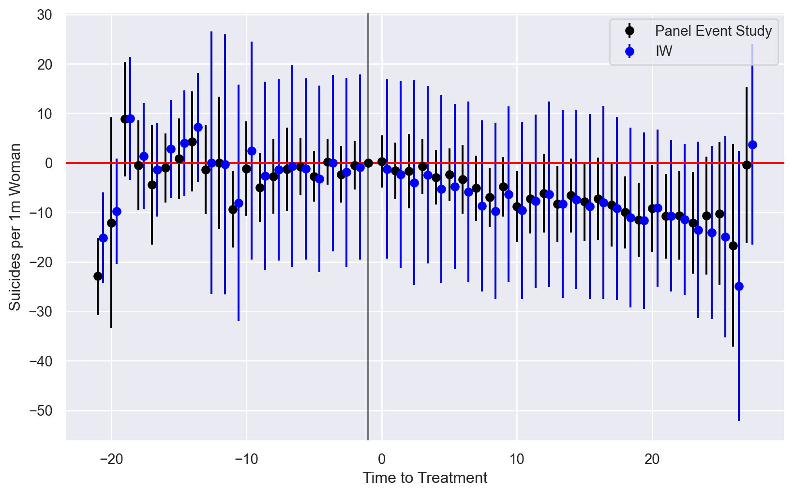
Code Call-Out 4.3(b): Alternative time-varying treatment effects
In this code call-out we return to the previous example in code call-out 4.3(a) where we review the interaction weighted estimator from Sun and Abraham (2021). However here, we now consider a range of frequently-used estimators which are used to estimate treatment effects in this setting, and which have desirable properties even in cases with heterogeneous treatment effects and staggered adoption designs. In particular, we will see how we can use packages provided by the authors or other developors to implement the treatment effects estimators proposed by Chaisemartin and D’Haultfœuille (2020), Callaway and Sant’Anna (2021), Borusyak, Jaravel, and Spiess (2024) as well as the estimator of Sun and Abraham (2021) seen previously. While in code call-out 4.3(a) we focused on showing each step of Sun and Abraham (2021), in this code call-out we simply focus on the comparison of each of the aforementioned estimators and their confidence intervals. Unlike the previous call out where we worked with 10 leads and 15 lags, here we will consider only 6 leads and 15 lags to avoid losing focus given large CIs at longer (pre-treatment) leads.
To begin we load the data from Stevenson and Wolfers (2006) which we worked with above and we destring the cohort variable:
import pandas as pd
data = pd.read_csv("data/Stevenson_Wolfers_2006.csv")Sun and Abraham (2021)’s Event Study Analogue
We will begin by using interactionweighted_eventstudy to implement Sun and Abraham (2021)’s interaction weighted estimator. As we have explored this previously, we will do this below simply implementing what we did previously, however noting that (as above) we need to generate the full set of leads and lags of interest, and this will require using a range of helper functions incorporated with the paneleventstudy library:
import numpy as np
import paneleventstudy
data['post'] = np.where(np.isnan(data['_nfd']), 0, data['post'])
paneleventstudy.balancepanel(data = data, group = 'stfips', event = 'post',
calendartime = 'year')
data = paneleventstudy.identifycontrols(data = data, group = 'stfips',
event = 'post')
data['stfips_s'] = data['stfips'].astype(str)
data = paneleventstudy.genreltime(data = data, group = 'stfips_s', event = 'post',
calendartime = 'year', reltime = 'reltime',
check_balance=False)
data = paneleventstudy.gencohort(data = data, group = 'stfips_s', event = 'post',
calendartime = 'year', cohort = 'cohort',
check_balance=False)
data = paneleventstudy.gencalendartime_numerics(data = data, group = 'stfips_s',
event = 'post', calendartime = 'year',
calendartime_numerics = 'ct')
IW = paneleventstudy.interactionweighted_eventstudy(data = data,
outcome = 'asmrs',
event = 'post',
group = 'stfips_s',
cohort = 'cohort',
reltime = 'reltime',
calendartime = 'ct',
covariates = [],
vcov_type = 'clustered')
Checks if input data frame is a BALANCED PANEL
Checking if every group has the same number of observations
Every group has the same number of observations
Checking min and max of calendartime by groups (ONLY for datetime/int)
Checking if the smallest calendartime is the same for all groups (ONLY for datetime/int)
Every group has the same minimum calendartime value
Checking if the largest calendartime is the same for all groups (ONLY for datetime/int)
Every group has the same maximum calendartime value
Identifying control groups: never-treated, or last-treated
Generates new indicator column: control_group
Finding never-treated groups
There exists a never-treated group, skipping the search for last-treated groups
Generating relative time columns from event column; time0 = when treatment is applied
To generalise, calendartime's format will be ignored
PLEASE ensure that calendartime is ascending without gaps, i.e., T-k, T-k+1, ..., T, ..., T+k
Input dataframe must be a BALANCED PANEL
Relative time will be stored in reltime
Group 5 has no events
Group 10 has no events
Group 22 has no events
Group 24 has no events
Group 28 has no events
Group 36 has no events
Group 37 has no events
Group 40 has no events
Group 47 has no events
Group 49 has no events
Group 50 has no events
Group 51 has no events
Group 54 has no events
All groups without events have reltime filled with 0
Generating cohort indicators
To generalise, calendartime's format will be ignored
PLEASE ensure that calendartime is ascending without gaps, i.e., T-k, T-k+1, ..., T, ..., T+k
Input dataframe must be a BALANCED PANEL
Cohort indicators will be stored in cohort
Group 5 has no events
Group 10 has no events
Group 22 has no events
Group 24 has no events
Group 28 has no events
Group 36 has no events
Group 37 has no events
Group 40 has no events
Group 47 has no events
Group 49 has no events
Group 50 has no events
Group 51 has no events
Group 54 has no events
All groups without events have cohort filled with -1
Generating numerics calendar time from 0 to T (end of time)
Intended to make calling PanelOLS dependencies later easier by bypassing the datetime requirement
PLEASE ensure that calendartime is ascending without gaps, i.e., T-k, T-k+1, ..., T, ..., T+k
Input dataframe must be a BALANCED PANEL
Checks if input data frame is a BALANCED PANEL
Checking if every group has the same number of observations
Every group has the same number of observations
NOT checking min and max of calendartime by groups
Quick check indicates panel is balanced
Estimates an interaction-weighted event study regression as in Sun and Abraham (2021)
Ensure that reltime is int, with -1 = one period before treatment onset
Returns a dataframe containing the lead-lag coefficients and CIs
This version: vanilla off-the-shelf HAC-robust CIs
Checks if input data frame is a BALANCED PANEL
Checking if every group has the same number of observations
Every group has the same number of observations
NOT checking min and max of calendartime by groups
Quick check indicates panel is balancedEstimating equation: asmrs ~ C(reltime):C(cohort)
Checks if RHS columns in data are linearly independent
Will trim columns that are linearly dependent
Later columns get precedence
Returns a list of columns that are linearly dependent, and should be dropped
Intercept label given; intercept column will be given precedence
Transforming input matrix into reduced row echelon form
The following columns were dropped due to linear dependence:
C(reltime)[T.-21]:C(cohort)[8], C(reltime)[T.9]:C(cohort)[-1], C(reltime)[T.24]:C(cohort)[20], C(reltime)[T.-16]:C(cohort)[11], C(reltime)[T.18]:C(cohort)[16], C(reltime)[T.24]:C(cohort)[13], C(reltime)[T.-21]:C(cohort)[20], C(reltime)[T.-14]:C(cohort)[6], C(cohort)[T.5], C(reltime)[T.16]:C(cohort)[21], C(reltime)[T.-18]:C(cohort)[12], C(reltime)[T.-10]:C(cohort)[7], C(reltime)[T.-18]:C(cohort)[-1], C(reltime)[T.-13]:C(cohort)[12], C(reltime)[T.-10]:C(cohort)[5], C(reltime)[T.24]:C(cohort)[16], C(reltime)[T.26]:C(cohort)[8], C(reltime)[T.-19]:C(cohort)[10], C(reltime)[T.15]:C(cohort)[21], C(reltime)[T.-20]:C(cohort)[9], C(reltime)[T.23]:C(cohort)[10], C(reltime)[T.-8]:C(cohort)[6], C(reltime)[T.-17]:C(cohort)[-1], C(reltime)[T.27]:C(cohort)[-1], C(reltime)[T.-19]:C(cohort)[7], C(reltime)[T.19]:C(cohort)[20], C(reltime)[T.23]:C(cohort)[16], C(reltime)[T.23]:C(cohort)[12], C(reltime)[T.13]:C(cohort)[21], C(reltime)[T.-20]:C(cohort)[7], C(reltime)[T.-10]:C(cohort)[-1], C(reltime)[T.23]:C(cohort)[13], C(reltime)[T.-9]:C(cohort)[-1], C(reltime)[T.-6]:C(cohort)[-1], C(reltime)[T.-9]:C(cohort)[6], C(reltime)[T.-13]:C(cohort)[6], C(reltime)[T.25]:C(cohort)[12], C(reltime)[T.24]:C(cohort)[11], C(reltime)[T.2]:C(cohort)[-1], C(reltime)[T.-21]:C(cohort)[10], C(reltime)[T.-2]:C(cohort)[-1], C(reltime)[T.25]:C(cohort)[13], C(reltime)[T.-14]:C(cohort)[9], C(reltime)[T.26]:C(cohort)[-1], C(reltime)[T.-6]:C(cohort)[5], C(reltime)[T.-13]:C(cohort)[9], C(reltime)[T.-20]:C(cohort)[6], C(reltime)[T.-16]:C(cohort)[9], C(reltime)[T.-12]:C(cohort)[11], C(reltime)[T.21]:C(cohort)[16], C(reltime)[T.-14]:C(cohort)[8], C(reltime)[T.19]:C(cohort)[16], C(reltime)[T.1]:C(cohort)[-1], C(reltime)[T.-18]:C(cohort)[16], C(reltime)[T.-12]:C(cohort)[6], C(reltime)[T.27]:C(cohort)[11], C(reltime)[T.-18]:C(cohort)[10], C(reltime)[T.-19]:C(cohort)[6], C(reltime)[T.-12]:C(cohort)[9], C(reltime)[T.18]:C(cohort)[20], C(reltime)[T.-15]:C(cohort)[9], C(reltime)[T.-16]:C(cohort)[6], C(reltime)[T.-13]:C(cohort)[10], C(reltime)[T.21]:C(cohort)[13], C(reltime)[T.-17]:C(cohort)[16], C(reltime)[T.-20]:C(cohort)[5], C(reltime)[T.-15]:C(cohort)[10], C(reltime)[T.3]:C(cohort)[-1], C(reltime)[T.-10]:C(cohort)[9], C(reltime)[T.21]:C(cohort)[20], C(reltime)[T.-19]:C(cohort)[5], C(reltime)[T.-13]:C(cohort)[-1], C(reltime)[T.27]:C(cohort)[9], C(reltime)[T.27]:C(cohort)[8], C(reltime)[T.25]:C(cohort)[11], C(reltime)[T.-17]:C(cohort)[12], C(reltime)[T.-11]:C(cohort)[8], C(reltime)[T.-16]:C(cohort)[-1], C(reltime)[T.-15]:C(cohort)[12], C(reltime)[T.-19]:C(cohort)[13], C(reltime)[T.-15]:C(cohort)[-1], C(reltime)[T.-14]:C(cohort)[7], C(reltime)[T.-20]:C(cohort)[10], C(reltime)[T.-15]:C(cohort)[7], C(reltime)[T.11]:C(cohort)[-1], C(reltime)[T.20]:C(cohort)[16], C(reltime)[T.13]:C(cohort)[-1], C(reltime)[T.-15]:C(cohort)[6], C(reltime)[T.-21]:C(cohort)[7], C(reltime)[T.-15]:C(cohort)[8], C(reltime)[T.-12]:C(cohort)[5], C(reltime)[T.17]:C(cohort)[20], C(reltime)[T.4]:C(cohort)[-1], C(reltime)[T.22]:C(cohort)[-1], C(reltime)[T.-18]:C(cohort)[8], C(reltime)[T.-8]:C(cohort)[7], C(reltime)[T.19]:C(cohort)[21], C(reltime)[T.-14]:C(cohort)[11], C(reltime)[T.10]:C(cohort)[-1], C(reltime)[T.-19]:C(cohort)[8], C(reltime)[T.22]:C(cohort)[12], C(reltime)[T.-20]:C(cohort)[-1], C(reltime)[T.21]:C(cohort)[-1], C(reltime)[T.-21]:C(cohort)[9], C(reltime)[T.-5]:C(cohort)[-1], C(reltime)[T.26]:C(cohort)[11], C(reltime)[T.24]:C(cohort)[12], C(reltime)[T.-8]:C(cohort)[5], C(reltime)[T.-21]:C(cohort)[11], C(reltime)[T.-19]:C(cohort)[16], C(reltime)[T.27]:C(cohort)[6], C(reltime)[T.25]:C(cohort)[20], C(reltime)[T.-17]:C(cohort)[5], C(reltime)[T.-7]:C(cohort)[-1], C(reltime)[T.-20]:C(cohort)[13], C(reltime)[T.-3]:C(cohort)[-1], C(reltime)[T.25]:C(cohort)[9], C(reltime)[T.-15]:C(cohort)[13], C(reltime)[T.-13]:C(cohort)[7], C(reltime)[T.-9]:C(cohort)[7], C(reltime)[T.-18]:C(cohort)[11], C(reltime)[T.23]:C(cohort)[21], C(reltime)[T.25]:C(cohort)[16], C(reltime)[T.-16]:C(cohort)[8], C(reltime)[T.-17]:C(cohort)[7], C(reltime)[T.14]:C(cohort)[20], C(reltime)[T.27]:C(cohort)[12], C(reltime)[T.-11]:C(cohort)[6], C(reltime)[T.22]:C(cohort)[21], C(reltime)[T.-16]:C(cohort)[10], C(reltime)[T.-14]:C(cohort)[5], C(reltime)[T.25]:C(cohort)[-1], C(reltime)[T.22]:C(cohort)[20], C(reltime)[T.-13]:C(cohort)[5], C(reltime)[T.-18]:C(cohort)[6], C(reltime)[T.7]:C(cohort)[-1], C(reltime)[T.26]:C(cohort)[7], C(reltime)[T.25]:C(cohort)[8], C(reltime)[T.27]:C(cohort)[20], C(reltime)[T.-10]:C(cohort)[8], C(reltime)[T.-12]:C(cohort)[7], C(reltime)[T.-4]:C(cohort)[-1], C(reltime)[T.-21]:C(cohort)[12], C(reltime)[T.-12]:C(cohort)[8], C(reltime)[T.20]:C(cohort)[-1], C(reltime)[T.23]:C(cohort)[11], C(reltime)[T.-14]:C(cohort)[10], C(reltime)[T.25]:C(cohort)[21], C(reltime)[T.-10]:C(cohort)[6], C(reltime)[T.25]:C(cohort)[10], C(reltime)[T.-11]:C(cohort)[5], C(reltime)[T.24]:C(cohort)[9], C(reltime)[T.-11]:C(cohort)[-1], C(reltime)[T.-19]:C(cohort)[11], C(reltime)[T.-17]:C(cohort)[6], C(reltime)[T.26]:C(cohort)[16], C(reltime)[T.22]:C(cohort)[11], C(reltime)[T.16]:C(cohort)[20], C(reltime)[T.22]:C(cohort)[16], C(reltime)[T.12]:C(cohort)[21], C(reltime)[T.17]:C(cohort)[16], C(reltime)[T.24]:C(cohort)[10], C(reltime)[T.-21]:C(cohort)[6], C(reltime)[T.-21]:C(cohort)[13], C(reltime)[T.-20]:C(cohort)[12], C(reltime)[T.-12]:C(cohort)[10], C(reltime)[T.26]:C(cohort)[9], C(reltime)[T.-11]:C(cohort)[9], C(reltime)[T.21]:C(cohort)[21], C(reltime)[T.-8]:C(cohort)[-1], C(reltime)[T.-13]:C(cohort)[8], C(reltime)[T.-17]:C(cohort)[13], C(reltime)[T.13]:C(cohort)[20], C(reltime)[T.-9]:C(cohort)[8], C(reltime)[T.-19]:C(cohort)[9], C(reltime)[T.15]:C(cohort)[20], C(reltime)[T.23]:C(cohort)[20], C(reltime)[T.12]:C(cohort)[-1], C(reltime)[T.26]:C(cohort)[21], C(reltime)[T.-19]:C(cohort)[12], C(reltime)[T.16]:C(cohort)[-1], C(reltime)[T.-21]:C(cohort)[5], C(reltime)[T.26]:C(cohort)[10], C(reltime)[T.19]:C(cohort)[-1], C(reltime)[T.24]:C(cohort)[-1], C(reltime)[T.-20]:C(cohort)[16], C(reltime)[T.17]:C(cohort)[21], C(reltime)[T.-14]:C(cohort)[13], C(reltime)[T.-13]:C(cohort)[11], C(reltime)[T.23]:C(cohort)[-1], C(reltime)[T.-17]:C(cohort)[9], C(reltime)[T.-16]:C(cohort)[7], C(reltime)[T.-16]:C(cohort)[13], C(reltime)[T.-20]:C(cohort)[11], C(reltime)[T.-16]:C(cohort)[12], C(reltime)[T.-19]:C(cohort)[-1], C(reltime)[T.-18]:C(cohort)[13], C(reltime)[T.24]:C(cohort)[21], C(reltime)[T.27]:C(cohort)[7], C(reltime)[T.-17]:C(cohort)[8], C(reltime)[T.14]:C(cohort)[-1], C(reltime)[T.-14]:C(cohort)[12], C(reltime)[T.27]:C(cohort)[16], C(reltime)[T.27]:C(cohort)[13], C(reltime)[T.18]:C(cohort)[-1], C(reltime)[T.27]:C(cohort)[10], C(reltime)[T.27]:C(cohort)[21], C(reltime)[T.-7]:C(cohort)[6], C(reltime)[T.15]:C(cohort)[-1], C(reltime)[T.22]:C(cohort)[13], C(reltime)[T.5]:C(cohort)[-1], C(reltime)[T.-12]:C(cohort)[-1], C(reltime)[T.26]:C(cohort)[13], C(reltime)[T.18]:C(cohort)[21], C(reltime)[T.-15]:C(cohort)[11], C(reltime)[T.-18]:C(cohort)[5], C(reltime)[T.-7]:C(cohort)[5], C(reltime)[T.17]:C(cohort)[-1], C(reltime)[T.20]:C(cohort)[20], C(reltime)[T.-11]:C(cohort)[10], C(reltime)[T.-15]:C(cohort)[5], C(reltime)[T.-17]:C(cohort)[11], C(reltime)[T.20]:C(cohort)[13], C(reltime)[T.26]:C(cohort)[20], C(reltime)[T.-18]:C(cohort)[7], C(reltime)[T.-21]:C(cohort)[-1], C(reltime)[T.8]:C(cohort)[-1], C(reltime)[T.-14]:C(cohort)[-1], C(reltime)[T.-17]:C(cohort)[10], C(reltime)[T.-9]:C(cohort)[5], C(reltime)[T.6]:C(cohort)[-1], C(reltime)[T.14]:C(cohort)[21], C(reltime)[T.-20]:C(cohort)[8], C(reltime)[T.21]:C(cohort)[12], C(reltime)[T.-16]:C(cohort)[5], C(reltime)[T.-21]:C(cohort)[16], C(reltime)[T.-18]:C(cohort)[9], C(reltime)[T.-11]:C(cohort)[7], C(reltime)[T.26]:C(cohort)[12], C(reltime)[T.20]:C(cohort)[21]
Checks if RHS variables contained within the dataframe are collinear or invariant
Will trim collinear (-1 / +1 in correlation matrix) or invariant (nan in correlation matrix) columns
Later columns get precedence
Returns list of columns that should be dropped in data[rhs]
The following columns were dropped due to collinearity or duplication:
We will visualise these effects after implementing the various estimators here, and so for now wish to store each of the grouped lag and lead terms and their standard errors. We do this below, noting that because period -1 is used as an omitted baseline reference period, we will store the series of 5 leads (-6 to -2), a 0 for period -1, and then 15 lags:
# Store point estimates: leads -6 to -2, then 0 for period -1, then lags 0 to 15
SA_b = np.concatenate([IW.loc[-6:-2, 'parameter'].values,
[0],
IW.loc[0:15, 'parameter'].values])
# Back-calculate SE from CI bounds, then square for variance
SA_v = np.concatenate([((IW.loc[-6:-2, 'upper'] - IW.loc[-6:-2, 'parameter']) / 1.96).values**2,
[0],
((IW.loc[0:15, 'upper'] - IW.loc[0:15, 'parameter']) / 1.96).values**2])
SA_df = pd.DataFrame({'SA_b': SA_b, 'SA_v': SA_v})Chaisemartin and D’Haultfœuille (2020)’s Event Study Analogue
We can implemente a similar dynamic model capturing lags and lead’s following Chaisemartin and D’Haultfœuille (2020). At the time of writing of this code call-out, there was not a fully developed Python implementation of this method, but rather the authors suggest implementing the estimator in Python via their R library, see, here. We follow this guideline below using the rpy2 library to connect Python to R.
import rpy2
import rpy2.robjects as robjects
from rpy2.robjects import pandas2ri
from rpy2.robjects.packages import importr
from rpy2.robjects.conversion import localconverter
# Load required packages (polar is required by DIDmultiplegtDYN)
polars = importr('polars')
DIDmultiplegtDYN = importr('DIDmultiplegtDYN')
# pass Pandas data frame to a version for R
with localconverter(pandas2ri.converter):
aux = pandas2ri.py2rpy(data)
did = DIDmultiplegtDYN.did_multiplegt_dyn(df = aux,
outcome = 'asmrs',
group = '_nfd',
time = 'year',
treatment = 'post',
effects = 15.0,
placebo = 10.0,
cluster = 'stfips',
graph_off = True,
dont_drop_larger_lower = True)Once again, we will examine output graphically below when considering all of the estimators together (though we see that handily, the command above provides us with a graph allowing us to easily visualise placebo and treatment effects), and so for now simply save each of the estimates and their variance turn for latter processing.
coef = did.rx2("coef")
b = np.array(coef.rx2("b"))
vcov = np.array(coef.rx2("vcov"))
se = np.sqrt(np.diag(vcov))
# Effects are indices 0..14, Placebos are indices 15..24
# Build dCDH for periods -6 to 15 (22 rows)
dCDH_b = []
dCDH_v = []
for i in range(-6, 16):
if i == 0:
dCDH_b.append(0.0) # reference period
dCDH_v.append(0.0)
elif i > 0:
# Effect_i is at index i-1
dCDH_b.append(b[i - 1])
dCDH_v.append(se[i - 1]**2)
else:
# Placebo_abs(i) is at index 15 + abs(i) - 1
dCDH_b.append(b[15 + abs(i) - 1])
dCDH_v.append(se[15 + abs(i) - 1]**2)
dCDH_df = pd.DataFrame({'dCDH_b': dCDH_b, 'dCDH_v': dCDH_v})Callaway and Sant’Anna (2021)’s Event Study Analogue
We can implemente the estimator of Callaway and Sant’Anna (2021) using the ATTgt function from the differences library. As we will see below, this package allows for us to estimate each possible \(g,t\) estimtate (ie an estimate for each adoption period at each time period.) In this sense, arriving to the dynamic ‘event study’ estimates requires aggregating these \(g,t\) estimates using the post-estimation aggregate function.
from differences import ATTgt
#differences requires old np.NaN
np.NaN = np.nan
csdata = data.set_index(['stfips', 'year'])
att_gt = ATTgt(data=csdata, cohort_name='_nfd')
att_gt.fit(formula='asmrs')
CS = att_gt.aggregate('event')Once again, we can store the output of this command in a dataframe for processing below.
# Extract for periods -6 to 15 (22 rows)
CS_b = CS.loc[-6:15, ('EventAggregation', '', 'ATT')].values
CS_v = CS.loc[-6:15, ('EventAggregation', 'analytic', 'std_error')].values**2
CS_df = pd.DataFrame({'CS_b': CS_b, 'CS_v': CS_v})Borusyak, Jaravel, and Spiess (2024)’s Event Study Analogue
Finally, we implement Borusyak, Jaravel, and Spiess (2024)’s imputation estimator using the command written by the authors: did_imputation. However, as was the case above with Chaisemartin and D’Haultfœuille (2020), at the time of writing, no native Python implementation of this imputation estimator exists. For this reason, and as above, we compute this estimator in Python through R, using the R package didimputation.
import rpy2.robjects as ro
# Prepare data: replace NaN with 5000 for never-treated units
data['_nfd2'] = data['_nfd'].fillna(5000)
# Convert to R dataframe
with localconverter(pandas2ri.converter):
aux = pandas2ri.py2rpy(data)
# Estimate BJS
didimputation = importr("didimputation")
BJS = didimputation.did_imputation(data = aux,
yname = 'asmrs',
gname = '_nfd2',
tname = 'year',
idname = 'stfips',
horizon = ro.IntVector(range(0, 16)),
pretrends = ro.IntVector(range(-10, 0))) We then save the resulting point estimates and variance terms in a dataframe for graphing below.
# Convert output to pandas and extract estimates
with localconverter(pandas2ri.converter):
BJS_pd = pandas2ri.rpy2py(BJS)
BJS_pd = BJS_pd.set_index('term')
periods = [str(i) for i in range(-6, 16)]
BJS_b = BJS_pd.loc[periods, 'estimate'].values
BJS_v = BJS_pd.loc[periods, 'std.error'].values**2
BJS_df = pd.DataFrame({'BJS_b': BJS_b, 'BJS_v': BJS_v})Bringing things together and visualising all estimates
Finally we will plot all the resulting estimates and their confidence intervals on a single plot. Note that there are packages to do this if desired, however we can easily enough do it “by hand” as we see below. Here we first import each of the matrices with the point estimates and variance terms, and then generate the 95% CIs based on the variance terms. Finally, we plot these on a common axis, noting that in the interests of visualisation, we shift treat treatment time around the relevant period allowing for some separation between each estimate.
import matplotlib.pyplot as plt
import seaborn as sns
from scipy.stats import norm
# Generate time to treatment (-6 to 15)
time = np.arange(-6, 16)
# Combine all estimates and variances into a single DataFrame
plot_df = pd.DataFrame({
'time': time,
'SA_b': SA_df['SA_b'].values,
'SA_v': SA_df['SA_v'].values,
'dCDH_b': dCDH_df['dCDH_b'].values,
'dCDH_v': dCDH_df['dCDH_v'].values,
'CS_b': CS_df['CS_b'].values,
'CS_v': CS_df['CS_v'].values,
'BJS_b': BJS_df['BJS_b'].values,
'BJS_v': BJS_df['BJS_v'].values
})
# Generate 95% CIs
for est in ['SA', 'dCDH', 'CS', 'BJS']:
plot_df[f'{est}_UpperCI'] = plot_df[f'{est}_b'] + norm.ppf(0.975) * np.sqrt(plot_df[f'{est}_v'])
plot_df[f'{est}_LowerCI'] = plot_df[f'{est}_b'] + norm.ppf(0.025) * np.sqrt(plot_df[f'{est}_v'])
# Displace times for visual separation
plot_df['SA_time'] = plot_df['time'] - 0.2
plot_df['dCDH_time'] = plot_df['time'] - 0.1
plot_df['CS_time'] = plot_df['time'] + 0.1
plot_df['BJS_time'] = plot_df['time'] + 0.2
# Plot
sns.set_theme(style='whitegrid')
fig, ax = plt.subplots(figsize=(10, 6))
palette = {
'SA': 'indianred',
'dCDH': 'navy',
'CS': 'forestgreen',
'BJS': 'darkorange'
}
markers = {
'SA': 'o',
'dCDH': 'D',
'CS': '^',
'BJS': 's'
}
labels = {
'SA': 'Sun & Abraham',
'dCDH': "de Chaisemartin & D'Haultfoeuille",
'CS': "Callaway & Sant'Anna",
'BJS': 'Borusyak et al.'
}
for est in ['SA', 'dCDH', 'CS', 'BJS']:
t = plot_df[f'{est}_time']
# CIs
ax.vlines(t, plot_df[f'{est}_LowerCI'], plot_df[f'{est}_UpperCI'],
color=palette[est], linewidth=1)
ax.hlines(plot_df[f'{est}_UpperCI'], t - 0.05, t + 0.05,
color=palette[est], linewidth=1)
ax.hlines(plot_df[f'{est}_LowerCI'], t - 0.05, t + 0.05,
color=palette[est], linewidth=1)
# Point estimates
ax.scatter(t, plot_df[f'{est}_b'], color=palette[est],
marker=markers[est], s=30, label=labels[est], zorder=3)
# Reference lines
ax.axvline(-1, color='red', linestyle='dashed', linewidth=1)
ax.axhline(0, color='black', linestyle='solid', linewidth=1)
# Labels and legend
ax.set_xlabel('Time To Treatment')
ax.set_ylabel('ATT')
ax.set_title("Event study estimators in Stevenson & Wolfers (2006)")
ax.legend(ncol=2, loc='lower center', bbox_to_anchor=(0.5, -0.2), frameon=False)
plt.tight_layout()
plt.show()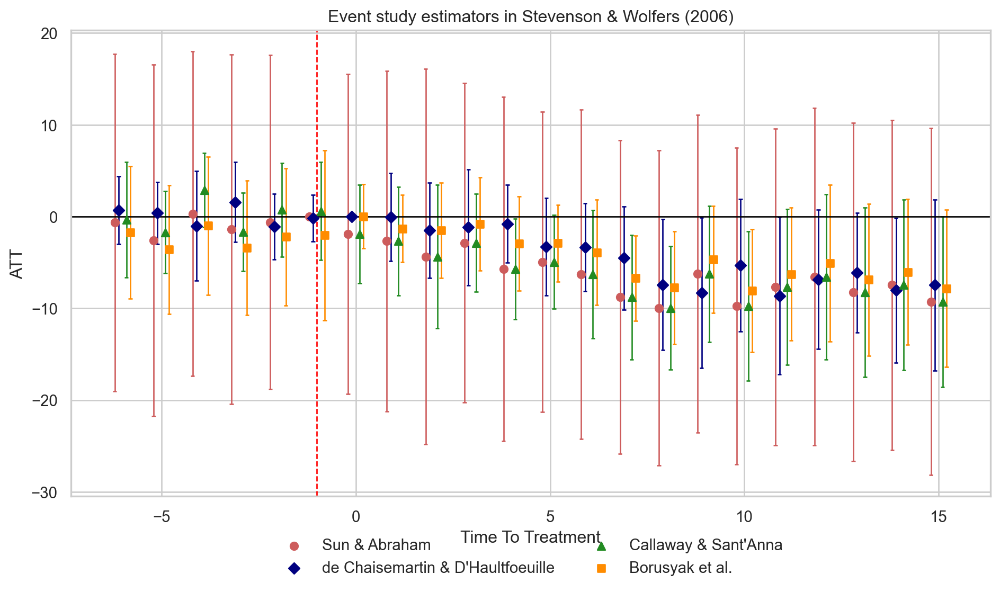
In this particular case, we see that the resulting estimates and CIs are quite similar, suggesting that (in this case), the difference between assumptions and aggregations in each case are minor in practice. Because estimators consider different time periods and the precise nature of parallel trends assumptions varies, we need not see that estimates are always so quantiatively similar, though it is, of course, reassuring to see when findings are robust to alternative reasonable estimators.
Code Call-out 4.4: Synthetic control, difference-in-differences, and synthetic difference-in-differences
In this code call out, we will explore the use of synthetic control methods as well as extensions into synthetic difference-in-differences with the data using in the original Abadie, Diamond, and Hainmueller (2010) paper. In particular, these data provide a balanced sample from 39 states in the United States covering the period of 1970 to 2000. In particular, the interest in these methods is estimating the impact of the passage of Proposition 99, which was a reform to increase the sales tax paid per package of cigarettes sold in California.
We will begin by opening the data used by Abadie, Diamond, and Hainmueller (2010), and checking the variables available. If we wished we could confirm that this is effectively a balanced panel by tabulating the variable year and state.
import pandas as pd
df = pd.read_csv("data/Abadie_et_al_2010.csv")
df| state | state_name | year | cigsale | lnincome | beer | age15to24 | retprice | |
|---|---|---|---|---|---|---|---|---|
| 0 | 1 | Alabama | 1970 | 89.800003 | NaN | NaN | 0.178862 | 39.599998 |
| 1 | 1 | Alabama | 1971 | 95.400002 | NaN | NaN | 0.179928 | 42.700001 |
| 2 | 1 | Alabama | 1972 | 101.099998 | 9.498476 | NaN | 0.180994 | 42.299999 |
| 3 | 1 | Alabama | 1973 | 102.900002 | 9.550107 | NaN | 0.182060 | 42.099998 |
| 4 | 1 | Alabama | 1974 | 108.199997 | 9.537163 | NaN | 0.183126 | 43.099998 |
| ... | ... | ... | ... | ... | ... | ... | ... | ... |
| 1204 | 39 | Wyoming | 1996 | 110.300003 | 10.016768 | 24.6 | NaN | 162.500000 |
| 1205 | 39 | Wyoming | 1997 | 108.800003 | 10.025613 | 24.6 | NaN | 164.100006 |
| 1206 | 39 | Wyoming | 1998 | 102.900002 | NaN | NaN | NaN | 168.800003 |
| 1207 | 39 | Wyoming | 1999 | 104.800003 | NaN | NaN | NaN | 189.600006 |
| 1208 | 39 | Wyoming | 2000 | 90.500000 | NaN | NaN | NaN | 267.100006 |
1209 rows × 8 columns
Here our outcome of interest will be the variable cigsale which records the number of packages sold per capita in each state. The proposition 99 reform was passed in 1989, and we will thus consider 1970-1988 as the pre-period, while the period of 1989-2000 is the treatment period. While Abadie, Diamond, and Hainmueller (2010) actually construct their synthetic control considering both certain pre-period realisations as well as control variables included in their data, we will follow suggestions from Ferman, Pinto, and Possebom (2020) and document a case where we simply use the full set of pre-treatment realisations of the outcome of interest to generate our synthetic control. We will do this below, using the state_name variable to indicate with "California" is the treated state. We will do this using the Synth and Dataprep routines from the pysyncon library.
from pysyncon import Dataprep, Synth
dataprep = Dataprep(
foo=df,
predictors=[],
predictors_op="mean",
time_predictors_prior=range(1970, 1989),
special_predictors=[
("cigsale", [1970], "mean"),
("cigsale", [1971], "mean"),
("cigsale", [1972], "mean"),
("cigsale", [1973], "mean"),
("cigsale", [1974], "mean"),
("cigsale", [1975], "mean"),
("cigsale", [1976], "mean"),
("cigsale", [1977], "mean"),
("cigsale", [1978], "mean"),
("cigsale", [1979], "mean"),
("cigsale", [1980], "mean"),
("cigsale", [1981], "mean"),
("cigsale", [1982], "mean"),
("cigsale", [1983], "mean"),
("cigsale", [1984], "mean"),
("cigsale", [1985], "mean"),
("cigsale", [1986], "mean"),
("cigsale", [1987], "mean"),
("cigsale", [1988], "mean"),
],
dependent="cigsale",
unit_variable="state_name",
time_variable="year",
treatment_identifier="California",
controls_identifier=df[df['state_name'] != 'California']['state_name'].unique().tolist(),
time_optimize_ssr=range(1970, 1989),
)
# Fit synthetic control model
synth = Synth()
synth.fit(dataprep=dataprep, optim_method="Nelder-Mead", optim_initial="equal")
# Visualize the Synthetic Control
synth.path_plot(time_period=range(1970, 2000), treatment_time=1989)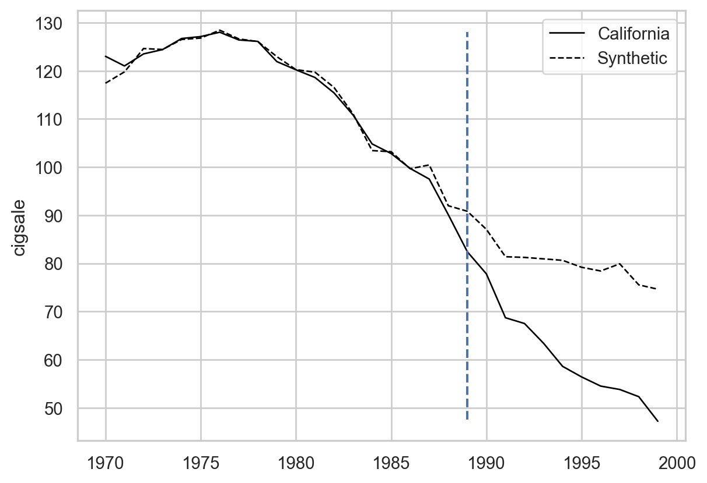
You may note a number of things with the way that we have implemented synth above. The first is that the way we have entered the covariates on which to match (pre-treatment lags of the sales variable) is very cumbersome. It turns out that this is required if we do indeed wish to match on the variable at each pre-treatment period. While the syntax ("cigsale", [1970:1989], "mean") would also be valid as part of the special_predictors list, it is not what we are after, as this would match on mean sales across the whole period, rather than sales in each pre-treatment period. A second is that we have explicitly requested a specific optimisation method (here, Nelder-Mead). This is, in fact, the default method, and if we wish to dig into the documentation (for example by typing help(synth.fit) we could see and explore alternatives, and we would see that weights are at times slightly sensitive to this (for example, if we instead request BFGS, while the final state weighting would result in identical states, the exact weights for each are slightly different) Finally, there is a quite easy way to generate graphical output comparing the treated state to its synthetic control. This graph is produced above. However, unlike in implementations in other languages, we do not see the state weights as default, and must request these. Fortunately, this is quite simple, and we do this below, seeing that (as in the case of Abadie, Diamond, and Hainmueller (2010)), the synthetic control for California is constructed using a combination of Colorado, Connecticut, Montana, Nevada, New Hampshire, and Utah.
synth.weights()Alabama 0.000
Arkansas 0.000
Colorado 0.022
Connecticut 0.108
Delaware 0.000
Georgia 0.000
Idaho 0.000
Illinois 0.000
Indiana 0.000
Iowa 0.000
Kansas 0.000
Kentucky 0.000
Louisiana 0.000
Maine 0.000
Minnesota 0.000
Mississippi 0.000
Missouri 0.000
Montana 0.228
Nebraska 0.000
Nevada 0.207
New Hampshire 0.043
New Mexico 0.000
North Carolina 0.000
North Dakota 0.000
Ohio 0.000
Oklahoma 0.000
Pennsylvania 0.000
Rhode Island 0.000
South Carolina 0.000
South Dakota 0.000
Tennessee 0.000
Texas 0.000
Utah 0.392
Vermont 0.000
Virginia 0.000
West Virginia 0.000
Wisconsin 0.000
Wyoming 0.000
Name: weights, dtype: float64Here we can see that (as expected) the synthetic control and California follow a very similar trend up to the period in which treatment is applied. This comes precisely from the optimisation procedure, which seeks to construct a synthetic control which minimises this distance. However, we observe that outcomes then diverge between California and the synthetic control in the post-reform period, with a substantially larger decline in California. If we wished to formally conduct hypothesis tests related to this synthetic control procedure, we could conduct the permutation inference procedures laid out in Abadie, Diamond, and Hainmueller (2010) and discussed in Chapter 4. While we will not set this up here it is a worthwhile activity to understand the practicalities of inference. We will also consider below extensions of these methods into synthetic difference-in-differences, additionally documenting inference following permutation procedures.
We will do this using the synthdid library. This implements the synthetic difference-in-differences estimator of Arkhangelsky et al. (2021). In this case, using the same data as above, we can calculate the ATT which reports mean declines between treated and synthetic control units across all post-treatment periods based on a synthetic difference-in-differences comparison. We will see this below, where sdid is used with the outcome as the first argument, followed by group and period variables, and finally the treatment indicator. A number of graphing options are indicated, and vce(placebo) requests the permutation-style inference laid out in Arkhangelsky et al. (2021). This permutation inference simply consists of recalculating the ATT for each alternative non-treated unit from among all other non-treated units, and calculates the standard error as the standard deviation of these ATTs (refer to further discussion in Section 4.6.1.3 of the book).
import synthdid
from synthdid.synthdid import Synthdid
from matplotlib import pyplot as plt
import numpy as np
df['treated'] = ((df['state_name']=='California') & (df['year'] >= 1989)).astype(int)
print(Synthdid(df, "state_name", "year", "treated", "cigsale").fit().vcov().summary().summary2) ATT Std. Err. t P>|t|
0 -15.60383 7.051277 -2.212908 0.026904plt.show(Synthdid(df, "state_name", "year", "treated", "cigsale").fit().plot_outcomes())
plt.show(Synthdid(df, "state_name", "year", "treated", "cigsale").fit().plot_weights())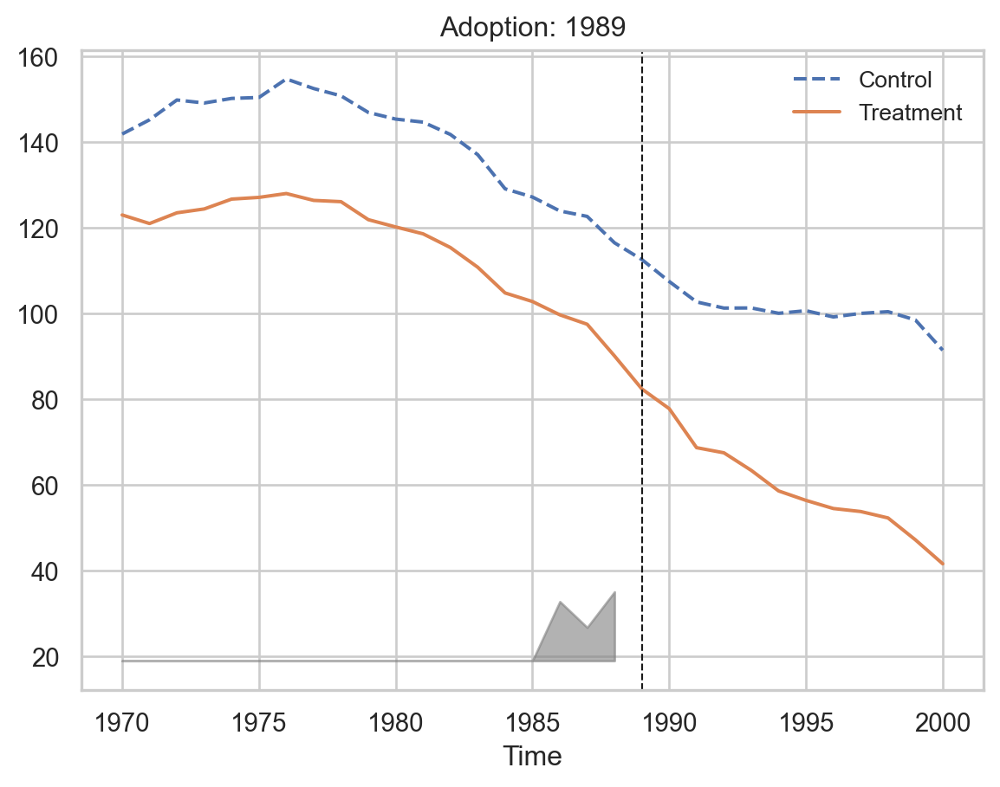
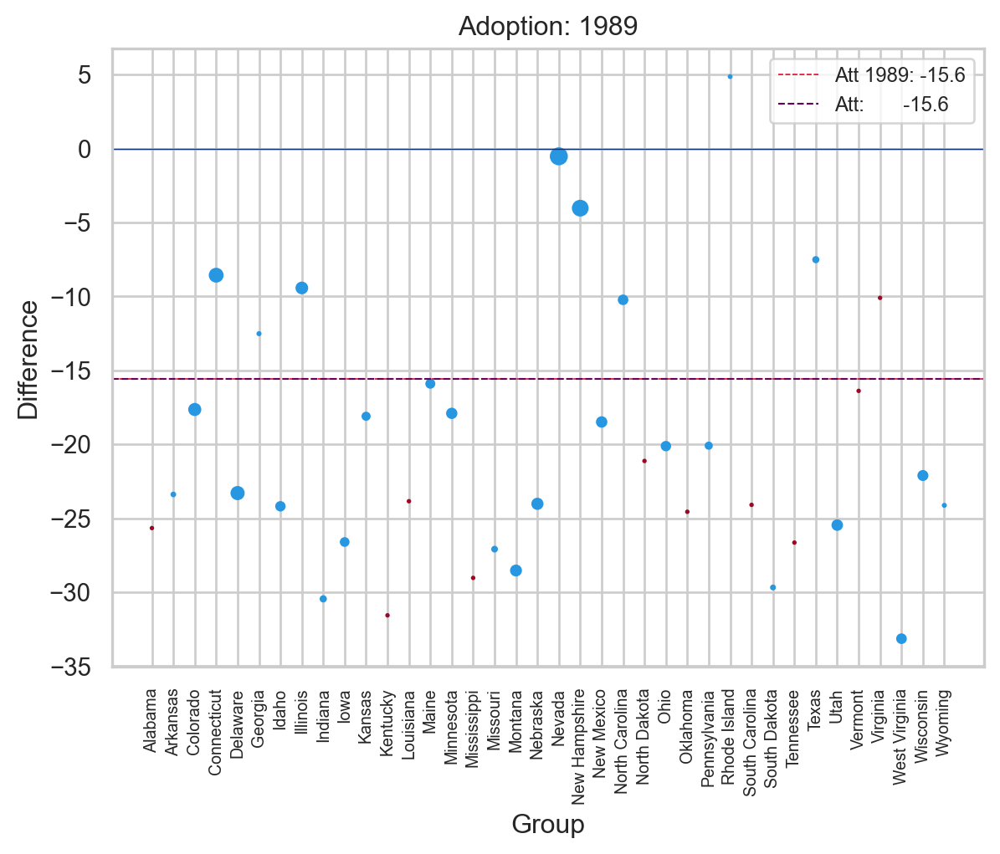
The standard output of this command is presented above, where we first see the ATT estimate (-15.6) and standard error (8.05). To see how this estimator is constructed, we can refer to Figure 1. In the left-hand panel, we see the outcome of California (red line) and the synthetic unit constructed using weights as laid out in Section 4.6. We additionally see the weights indicated as \(\lambda_t\) in Section 4.6 which assign time-specific weights in calculating the ATT. Specifically, we calculate a DID estimate comparing California to its synthetic control in the pre versus post-treatment period, where the pre-treatment period is generated from the weights indicated in the shaded green area (in this case, 1987, 1988 and 1989). In the right-hand panel, we additionally observe the unit specific weights, \(\omega_t\) in Arkhangelsky et al. (2021) and Section 4.6 of the book, documenting that a range of units are drawn on to generate the synthetic control. The weights of each unit is indicated by the size of points, and unit-specific DID estimates comparing California to each potential donor state are indicated as “Difference” on the vertical axis.
A nice feature of this method is that by removing the calculation of time-specific weights and by eliminating the unit-specific difference permissible in SDID, one can simply return a standard synthetic control analysis also. This is conducted below using Synthdid, where the only difference is to incorporate the synth=True, omega_intercept=False option. Here, identical output is reported, which simply replicates the procedure from synth documented above. In particular, in Figure 2 we note the clear overlap of trends in the pre-treatment period in the synthetic control analysis, as well as the greater sparsity in unit weights, with most units receiving zero weight in the synthetic control.
plt.show(Synthdid(df, "state_name", "year", "treated", "cigsale").fit(synth=True, omega_intercept=False).plot_outcomes(wtplot = False))
plt.show(Synthdid(df, "state_name", "year", "treated", "cigsale").fit(synth=True, omega_intercept=False).plot_weights())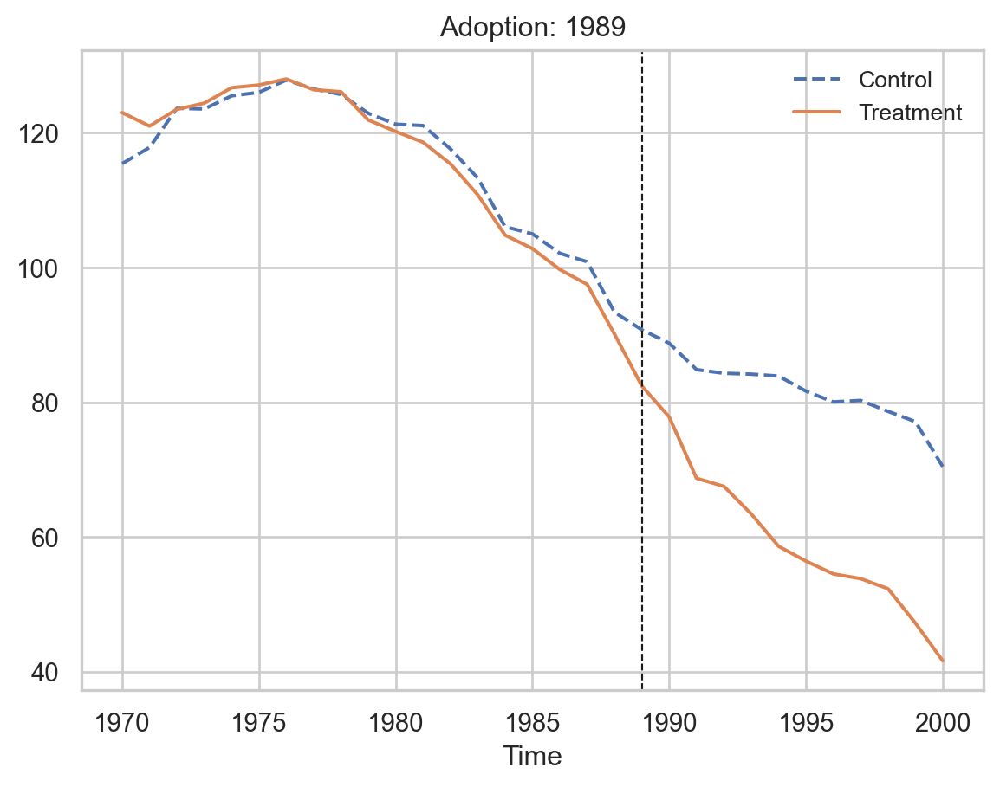
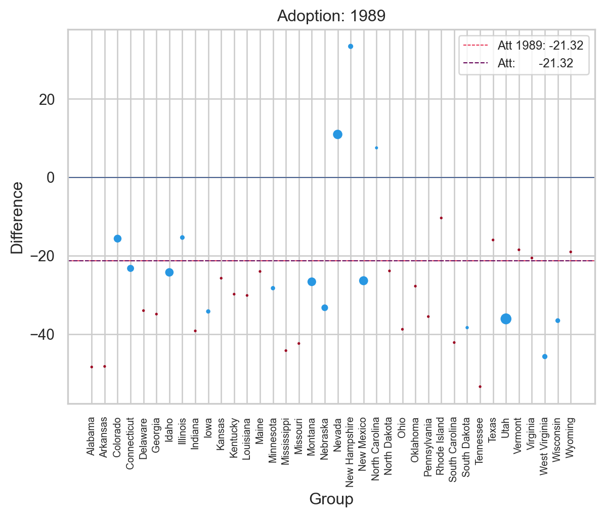
Finally, in the interests of completion, we can also conduct a standard difference-in-differences analysis in the same way, where in this case units are not given any differential weight, implying that trends will simply capture aggregate differences between the two groups. To do this, identical procedures are followed as above, simply indicating did=True. In this case, documented below, we note a clear divergence in trends starting in the earliest years of the panel, explaining why the treatment effect reported here is much larger than the effects reported with SDID (or SC). The fact that California was clearly trending in a more negative way to the mean of the donor pools suggest that parallel trends is unlikely to be a reasonable assumption. Instead, we may believe that trends may have continued to be more negative in California than in the average across control units, suggesting the DID assumptions should be avoided, in favour of synthetic methods, or some type of alternative strategy which does not rely on parallel trends assumptions.
plt.show(Synthdid(df, "state_name", "year", "treated", "cigsale").fit(did=True).plot_outcomes())
plt.show(Synthdid(df, "state_name", "year", "treated", "cigsale").fit(did=True).plot_weights())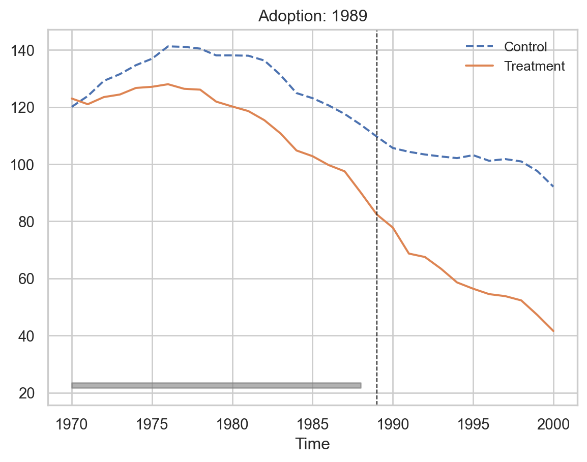
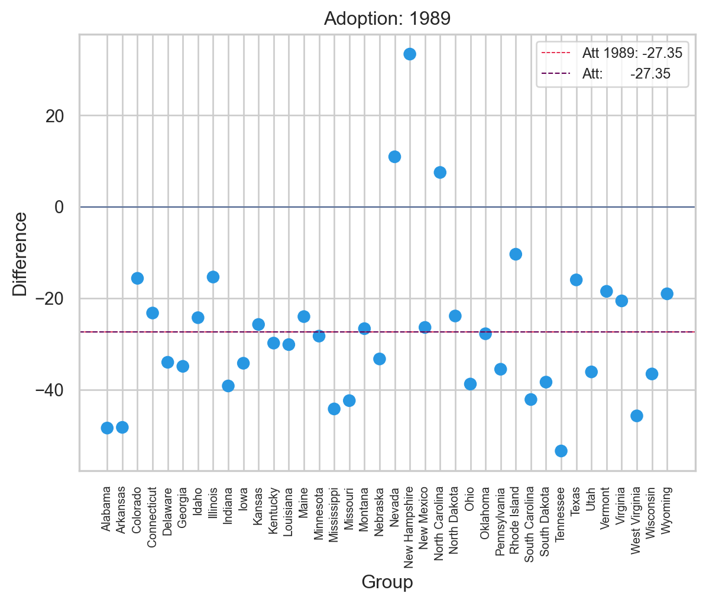
References
Abadie, Alberto, Alexis Diamond, and Jens Hainmueller. 2010. “Synthetic Control Methods for Comparative Case Studies: Estimating the Effect of California’s Tobacco Control Program.” Journal of the American Statistical Association 105 (490): 493–505.
Arkhangelsky, Dmitry, Susan Athey, David A. Hirshberg, Guido W. Imbens, and Stefan Wager. 2021. “Synthetic Difference-in-Differences.” American Economic Review 111 (12): 4088–118. https://doi.org/10.1257/aer.20190159.
Athey, Susan, and Guido W. Imbens. 2022. “Design-based analysis in Difference-In-Differences settings with staggered adoption.” Journal of Econometrics 226 (1): 62–79. https://doi.org/https://doi.org/10.1016/j.jeconom.2020.10.012.
Borusyak, Kirill, Xavier Jaravel, and Jann Spiess. 2024. “Revisiting Event-Study Designs: Robust and Efficient Estimation.” The Review of Economic Studies, February, rdae007. https://doi.org/10.1093/restud/rdae007.
Callaway, Brantly, and Pedro H. C. Sant’Anna. 2021. “Difference-in-Differences with Multiple Time Periods.” Journal of Econometrics. https://doi.org/https://doi.org/10.1016/j.jeconom.2020.12.001.
Chaisemartin, Clément de, and Xavier D’Haultfœuille. 2020. “Two-Way Fixed Effects Estimators with Heterogeneous Treatment Effects.” American Economic Review 110 (9): 2964–96. https://doi.org/10.1257/aer.20181169.
Ferman, Bruno, Cristine Pinto, and Vitor Possebom. 2020. “Cherry Picking with Synthetic Controls.” Journal of Policy Analysis and Management 39 (2): 510–32. https://doi.org/https://doi.org/10.1002/pam.22206.
Fischer, Alexander, and David Roodman. 2021. “Fwildclusterboot: Fast Wild Cluster Bootstrap Inference for Linear Regression Models (Version 0.13.0).” https://cran.r-project.org/package=fwildclusterboot.
Goodman-Bacon, Andrew. 2021. “Difference-in-Differences with Variation in Treatment Timing.” Journal of Econometrics 225 (2): 254–77. https://doi.org/https://doi.org/10.1016/j.jeconom.2021.03.014.
Porter, Catherine, and Danila Serra. 2020. “Gender Differences in the Choice of Major: The Importance of Female Role Models.” American Economic Journal: Applied Economics 12 (3): 226–54. https://doi.org/10.1257/app.20180426.
Stevenson, Betsey, and Justin Wolfers. 2006. “Bargaining in the Shadow of the Law: Divorce Laws and Family Distress.” The Quarterly Journal of Economics 121 (1): 267–88. http://www.jstor.org/stable/25098790.
Sun, Liyang, and Sarah Abraham. 2021. “Estimating Dynamic Treatment Effects in Event Studies with Heterogeneous Treatment Effects.” Journal of Econometrics 225 (2): 175–99. https://doi.org/https://doi.org/10.1016/j.jeconom.2020.09.006.
Footnotes
In Sun and Abraham (2021) you found a detailed explanation on how determinte the set \(C\), for this example \(C\) is the never treated units.↩︎
This can be seen by simply listing the set of adoption years, for example with:
data['_nfd'].unique().↩︎Excluding \(\ell = -1\).↩︎
This comes from the followingproperty: Let \(X,Y\) be random variables and \(a,b\in\mathbb{R}\), then \(V(aX \pm bY) = a^2V(X) + b^2V(Y) \pm 2abCov(X,Y)\).↩︎